| 豪華客船の監禁愛 執事と王子と囚われ姫 | |
| 斎王 ことり | |
| フランス書院 (2012) | |
【ティアラ文庫】
豪華客船の監禁愛 執事と王子と囚われ姫【イラスト付】
斎王ことり
イラスト／潤宮るか
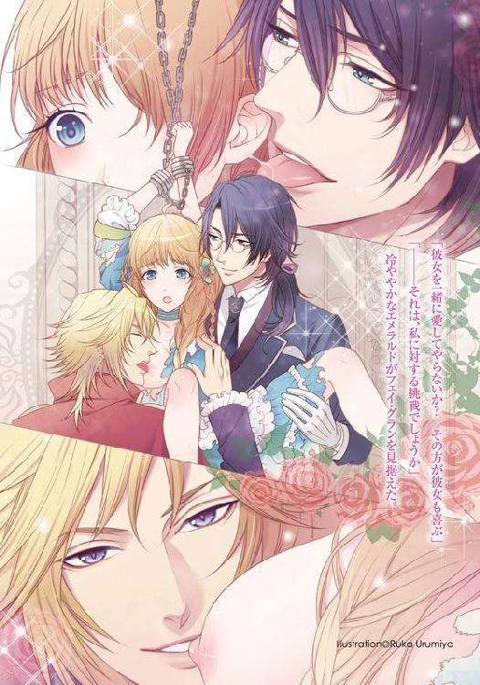
プロローグ 初めての物語
『ほら、私......震えてる......』
背高い彼の乗りこなす、愛馬と一体化した、長い影が闇を駆けてくる。
窓の外には身も震えるような海風が、男を知らぬ白い柔肌を、周囲の草木を叩きつけ、乙女を城の中に閉じこめようと企んでいる。
乙女は城塔の虜の姫君。
城でたったひとりの、王族の末裔、クロフォード伯爵家の娘。
（あなたの甘い口づけが、額から、鼻先からゆっくりと落ちてくるのね。じらすように、いつもそう。そして今夜はきっといよいよ......）
震えるような冬の闇が、深まると現れる。
黒きマントに身を包み、赤い目をほおずきのごとく輝かせる黒馬を操り、荒野からやってくる。
乾いた大地をけりつける蹄の音が、遙か地平の向こうから次第に近づいてくるのを聞いて、乙女は身も凍るような石の床から身を起こす。
飾り布で身を覆った黒馬の、錦糸で織られた二重の手綱を引く彼の、革手袋がきしむ。
『───姫よ。垂らして』
姫君の黄金の長い髪は、このときの逢瀬のためにとラピスラズリの玉を止めた革紐で三つ編みにされている。
地上からは見上げるほどの高さのある塔。そのてっぺんの、石の小部屋に閉じこめられた姫君の、ただ一つの希望。
それが、この黒い王子との逢瀬。
王子の馬の蹄は塔の真下で、塔の石壁に突き出た杭につなぎ止められたようだ。
『君が欲しい......垂らして......』
乙女は小窓に寄って、するすると自らの黄金の三つ編みを垂らし始める。
するする、するする。
自分の丈の十倍ほどはある髪が、地上に着いた気配がした。
地上は暗くて、まるで闇の海原のよう。
黒いマントの王子は、乙女の垂らした黄金の髪をつかむと、ロープのようにして円形の塔を上り始める。
鍛えられた腕、たくましい足による、王子の垂直の壁登りは、案外すぐに乙女のいる窓に、その全身をのぞかせる。
窓に足をかけ、塔の小部屋に着地する王子は、居ても立ってもいられないように、乙女の身体を抱きしめた。
『会いたかった......』
『私もです......王子様......』
唇を合わせてから、何度もお互いの下唇を、上唇を舐めながらついばんだ。
優しく強く、そして次第に唇の熱は口腔に及び、舌がお互いの舌を求めて激しく絡まり合う。
抱き合う身体は密着して、乙女の胸は王子のマントの飾りブローチにこすれて、穏やかに沈んでいたふくらみの先端が、次第に赤く色づいてくる。
こすられて、敏感になった乳房の突起は、白く透けるような夜着の中でもつんと尖っていやらしい。
『綺麗な胸だ』
低く囁くように、彼が言った。
『もう、乳首が可愛らしく立っているよ......』
甘く感じる耳元に唇はうごめいて、そして耳朶を噛み、舌が耳の中まで入り込んでくる。
『───あ、あああっ......んっ』
やんわりと咥えられた耳朶が舐められ、そして次には穴の中をぬるりと濡れた硬い舌で、抜き差しされる。耳の穴を犯されることが、こんなにぞくぞくするものとは思わなかった。
犯されているのは耳なのに、奥を突かれ、すっと抜かれるたび、胸の方がけいれんしてくる。
彼の手がそのけいれんを感じ取って、大きな手で揉んできた。
柔らかく指を使い、撫で回すと、今度はぎゅっとすべてを手の中に収めようとするかのように強く何度も指を立てる。
『うっ！ あ、うっっぁあんっ！』
ひとしきり、つんと上がった形のいい胸を味わった彼の手が、ライラの喘ぎに反応するように薄い乙女の背中をまさぐり、指先は肌に食い込むほど強く力が込められてくる。
背中から一気に落ちてきた手は、乙女のぷりっとした硬い尻に及び、もみほぐそうとするように、そのふくらみを指が刺さるほど強く揉みつけてくる。
『あ、ふ......んっっ！』
桃のように色づき始めた尻の隙間に滑る指先は、確実にその谷間をえぐるようにこすり始めた。
『あ、ひあん！』
そんなのは初めての快感だ。でも快感よりもくすぐったさが先に立って、ライラは激しく身を捩った。
『ここはとても感じるようですね。ではこちらはどうかな』
長い指は、後方の蕾の付近を探るように、ねじ込むようにいじっていたが、ライラが身を激しく捩って前の方を押しつけてくるのにつれて、後ろから谷間に沿って前の方まで犯してきたのだ。
『んっ......ふ！ んん......』
耐えるような喘ぎがライラの唇から漏れる。ぎゅっと唇を合わせているのに、どうしてもその刺激の危うさから、奇妙な声が漏れてしまう。
その声が彼の官能を刺激したらしい。指先が、まるでピアノでも弾くように暴れ始めた。
たたきつけるようにライラの隙間を撫で、潜り、こすってくる。
そしてかすかに淫芯を掠めたと思ったら、指先を激しく震わせてきたのだ。
『ひ、ああんっ......ああっ』
クリトリスの甘く強烈な刺激に、ライラの中からはじけたように、ドクンと何かがほとばしった。
とろりと不思議な感触がして、奥から透明なとろみのある液体が、しとど流れ落ちてくる。
『きゃ......』
初めての感触。初めての快楽。初めての愛液の放出に自身が、驚き身を固くした。
『大丈夫......怖くないですよ......これが......感じるということ......これが互いを愛し求めていると言うこと......もっと......もっとこの愛液を流しなさい......』
彼の甘い囁きは、秘めやかで、それでいて命じているかのように強い。
ライラはそれが普通で、そして彼を愛していることの証なのだと諭されて、とても安心して彼に身を任せ始めた。
感じて、びくびく跳ねるあの蕾、陰門、そういった粘着質の淡いピンクが彼の愛撫を求めてうごめく。
とろとろとろとろ、愛慕の雫が糸を引いて腿を伝って床に滴る。
『ああ、素敵ですよ......姫......』
『王子...様...』
そうしてひしと抱きしめ合った二人の耳に、もうひとりの凛々しく響く男の声が聞こえたのだ。
『姫。そんな男は軟弱ものだ。この俺は姫の美しき髪を掴んでよじ登るなどできないな。自力で姫に会いに来た』
現れたのは、金の髪が荒野を駆け抜ける寒風に舞い上がる、若獅子のような勇ましい男。彼は深紅のマントを翻し、石壁の窓の上に膝を突くと、にやりと嗤った。
『おや、もう始めていたのか？ おさかんだな』
男はまるで乙女を求める野獣のように高い窓から飛び降りて、ガシャンとブーツや剣帯に下がる剣の鞘を鳴らしてくる。
『ああ、我が姫君は、もういい具合に濡れているな。これならいける。すぐにいけるぞ』
男はやおらライラの背後に回り込むと、その髪を柔らかくつかんで、持ち上げ、うなじから白絹を引き裂いたのだ。
びりり！ と音を立てて夜着は裂かれ、腰のリボンで一度止まる。だが男はすぐ、革の手袋の手でリボンを引きちぎりライラの下半身まであらわにしたのだ。
『姫に何をする！』
『おまえだけの姫ではないと言うことだ。姫というのは強いものが勝ち取るもの！ そうだろう？ 強くて強くて猛々しい権力者が、美姫をめとる。我がものにするのだ。それは世界共通の決まり事』
『あっ』
男は背後からライラのお尻のふくらみを直につかんで、揉み、すぐ割れ目に指を挿入してくる。
ライラは恐怖で身を捩ろうとしたがかなわず、男の手の思うがままにされている。
『王子......助けて。私の愛する王子様......っ』
『さあ、どちらがいいか姫よ選べ。俺は後ろから、おまえは前から挿れればいい』
黄金の髪をなびかせる男の手は、ライラの片方の太ももに滑らされ、やにわに高く掲げ上げる。
『───ぁう！』
片方の腿が大きく掲げ上げられると、ライラの秘唇が同じように大きく開かれたのだ。
男の目がその愛らしく開いた秘唇に強く注がれる。
『ああ、美しい紅色だ。もうこんなに色づいていたとは。男を求める肉体になるのも早いものだ』
ぐいっと、秘唇に集めた指が挿入された。
『あ、ああっ！ や、め......』
『そうか？ それほど気持ちいいか。ではもっと深く挿れてみるかな』
もう、何を言っても無駄だった。男はライラの身体を知り尽くしているかのように乱暴に、でも確実に感じるように攻めてくるのだ。
愛されているより、犯されている。そういう表現の方が、合っている気がするのに、ライラは彼の愛撫にも、もう応えている肉体を感じて、心の中で悲鳴を上げた。
（違うの......違うのよ......こんなの......愛じゃないの......私が好きなのは、愛しているのは王子様で......）
彼は、突然現れ、愛する姫を陵辱し始めた荒ぶる男に呆然としている。
おそらく、自分の他にも恋人がいたのかという驚きで、どう動いていいのかわからないのだろう。
（知らない......知らないと思うの。こんな人......こんな野蛮に犯してくる男なんて......）
『さあ、姫よ。その男と俺とどちらがイイか、選んでもらおう』
『あなた......なんか......野蛮。いや......嫌い、よ......大嫌い』
そう言葉では罵倒するが、ライラの下半身は、あられもなく蜜を流し、はあはあと喘いでいる。
『そうか？ 本当に？ 乙女は皆俺が好きだと寄ってくるぞ？ 俺はもうじき王位を継いで王になるのだ。強き王が、姫を求めているのだ。さあ、姫よ。我が妻となり王妃となれ！』
雄々しき男が、サファイアの瞳でライラを捉えた。
１ 悩ましき二人の王子と、政略結婚？
「──ライラ......様。こちらですか？ いらっしゃいますか？」
（───誰かが私を探してる......？ 困るわ......困る。二人の王子様が私を好きでいてくれるなんて、そんなこと実際あるのね？ ロマンス小説の中のことでしかないと思っていたわ。それに今、他の人に見せられる身体じゃないわ......どうしましょう）
「───ライラ様......」
とても澄んだ声だけれど、厳冬の夜風のごとく、冷ややかな声。
（王子様。どうしたらいいの？ 私の下着が......）
「ライラ様、お目覚めください。こんなところでお昼寝をされてはいけません」
まどろんで、甘い男たちの囁きを耳にしていたライラに、突然降りかかったのは厳しい声だ。
ライラは慌てて、顔を上げて、ずらりと並ぶ書架を背にして立っているスイズルを見上げた。
本を読むときだけ、それらしい気分でかけている、細身の眼鏡は完全にずれて床に落ちていた。
「スイズル・テリウス......」
「なんでございましょう？ お嬢さま。すみませんが私は王子ではありませんし、ここにはお嬢さまを濡らす二人の王子もおりません」
「い......いやだわ、聞いていたの？ というか、私寝言を言っていた？」
ライラ・クロフォードはこの城のたった一人の姫君だ。ストロベリーピンクの髪は、赤毛と言われるといやなのだが、自分では甘くて乙女チックな色で可愛いと思っている。
背中を覆うほど伸ばしているせいか猫っ毛で、もつれやすいので、普段はツインテールにしているか、ふんわりとした二本の三つ編みにしていることが多い。
色白で卵形の小さな顔に、すみれ色がかった青い瞳。つんとした鼻。赤くてぽってりした唇は、まあチャームポイントと思っておく。
自分の顔を嫌いでも、そういう顔に生まれついたのだから気に入ってみようという前向きな発想だ。
「寝言にしては明確すぎるほどはっきりと、一人で楽しそうにお話しされておりましたよ」
慇懃無礼な気配すら漂わせる、二五歳のスイズルは、幼い頃からライラの執事だ。
賢そうな眉。すべてを見透かすかのような、鋭いエメラルドの瞳。
彼はしばしば、古き良き時代の額縁のあちら側から現れたのではないかと思うほど、クラシカルな美貌をのぞかせて見せることがある。今がまさしくそうだ。
背中まである長い漆黒の髪を一結わえにし、額にかるく落ちる前髪は、銀縁の眼鏡にも少々かかる長さ。かっちりとした上質な黒い上着に黒いズボン黒の革靴。ダークグリーンのベストには、懐中時計用の、南洋パールと純金の二重の鎖が覗いている。フォブと呼ばれる鎖飾りも豪華なものが下がっているのだが、いつもそれは見せないようにポケットの中だ。いつか偶然それを見たが、英王室の紋章によく似た盾を持つ獅子と一角獣が刻まれたメダリオンが、とても素敵でライラの好みのものだった。
この島国は、金や銀の鉱山が豊富にあって、上流階級のものたちは、贅沢なほどに金銀の細工ものを持っている。
特にライラの父、ロイ・クロフォードの治める土地は、金銀、ダイヤの鉱山が豊富で、まだまだ探せばいくらでも、未掘の鉱山が見つかるだろうと言われている。
ケルト地方が、もっと細かく分類されていたその昔。
ウイッシュ地方のクロフォード家は、その北方に切り立った海岸線すべてを有するほど、広大な土地を治めた国王の一族だった。
豊富な資源を有するこの島国では、利権を巡り、何百年もの間、隣国との闘争や、内部紛争が巻き起こった。ようやく、平和になったのは、ごく最近十年ほど前のことだが、その頃には、このクロフォード家の治める国は、英国にその領土のほとんどを略奪され、実権さえも大きくそぎ落とされていた。
初夏の木漏れ日の差すクロフォード家の主城、アイスイル城の別館である図書館の中。天井まで届く書架。古書に囲まれたライブラリーで、執事のスイズル・テリウスはたったひとり仕える姫君、ライラをあきれたように見下ろしている。
ライブラリーの一番隅の、光と影が交差する気に入りの場所で、うとうとしていたライラの読んでいたものはロマンス小説。起こされて、膝から滑り落ちてしまったワインレッドの革表紙の書物を、彼は腰をかがめて拾い上げた。
綺麗な白い指先に、〝塔の中の淫愛〟という金の文字がとてもまぶしい。
「あ、ス、ス、スイズル！ いいの。拾ってくれなくて大丈夫よ」
真っ赤になって慌てて本を奪い取ったものの、タイトルは見られてしまっただろう。
「───書物というのは、まったくもって秘された光輝を纏っているものですね。お嬢さま」
「そうよね。そう思うわ。で、あの、何かご用なのかしら。今日はバレエのレッスンでもないし、ピアノのレッスンの日でもないわよね？」
「───お父様がお呼びです。今すぐ一緒にいらしてください」
気真面目な彼の声音は、その用事が恐ろしげなものだと感じさせた。
ライラはスイズル・テリウスのあとをついて、回廊を歩いて本館へとわたっていく。
「お父様はなんのご用なのかしら。あなたは聞いているのよね？ スイズル」
心の準備のために聞いておこうと考えたが、口の堅い彼は話そうとしない。
「口止めされているのね。スイズルは私の契約執事なのに、私よりお父様の言いなりね。くびきをつけられている馬みたいだわ」
「そうですね。私を大金と引き替えに契約執事にしてくださったのはお父様ですから。本来のくびきもお父様のものですね。いずれ、この身に施されたくびきを解き放つのはお嬢さまだとしても」
「───スイズル。あなたの言うくびきって......？」
ライラは少し不安に思う。それは、もしや、自分との主従関係のことだろうか。
スイズルは、もしや、自分のしもべでいることがイヤになったのではないだろうか。
だが、彼はひんやりとほほえんで、艶やかな黒髪を波打たせる。
「この髪を縛る革紐ですよ。ここでお嬢さまのしもべでいる限り、これははずせません」
そういいながら、彼は白い手袋の手で、うなじで拘束されている黒髪を、はらりと踊らせた。普通ならばリボンで結わくところだろうが、彼は細い革のベルトでくるくると巻いている。その革紐に、尖った鋲が打ち込んであるのだから、変わっている。
（結わくときも、何かに当たってしまったときも、とても痛いと思うのに......）
「さあ、どうぞ」
くびきの意味も本心も、何も彼から聞けないうちに、ライラは本城の父の書斎に案内された。
いかめしい銀の髪、銀のひげの父が大きな書斎机の向こうで、何かに印を押している。
「ああ、きたのか。ライラ」
「お父様、なんのご用でしょうか」
この城で、王家の血を継ぐ者、二人が顔を合わせた。母はライラが四歳の頃亡くなり、その頃、祖父も、共に生活していた従兄弟たちも、流行病で亡くなったらしい。
身近な者が大勢亡くなったうえ近隣諸国との情勢も切迫。不安や募る恐怖心からか、ライラは当時のことはほとんど記憶になかった。
「単刀直入に言うぞ。ライラ」
彼は机から目を上げて、それまで走らせていた付けペンを、ふっと放した。
「おまえには来月にも、フォスター伯爵に嫁いでもらう。フォスター伯爵は大変な金持ちで、土地も城も、我がクロフォード家より何倍も所持している。安心して嫁ぐがいい」
「お父様......今なんて？ なんておっしゃったの？」
驚いて、スミレがかった青い瞳を丸くするライラに、父は笑みも見せず、気難しい顔で詳細を伝え直す。
「おまえは若いのにこの私より耳が遠いな。前年の冷害で今年は農業収入が見込めない上、漁業も近年の寒さのせいか漁獲量が少ない。このままではこの土地はやせ細り一族は破綻する。だからおまえは商業を主として莫大な財産を築いているフォスター伯爵に嫁ぐのだ。向こうはおまえのことを気に入っている。すぐにでも式を挙げ、城にきて欲しいそうだ」
「あの、どうしてそんな急に。農業も漁業もそれほど急に悪くなっているわけではありませんし、我が一族は金鉱脈で栄えてきているのですから。もし今の鉱脈が涸れてきているのでしたら、新しい鉱山を開鉱なさればよろしいのでは」
「おまえも一度くらい耳にしているだろうが、我ら王族には伝説がある。代々この土地に根ざして生き、真摯に神をまつってきた。豊富な金脈は我らへの神からの贈り物だ。だが、その金鉱脈の場所を示されていると言い伝えられてきた家宝の書物が、失われていることに、最近気がついたのだ。我が一族の礎となっていたその家宝、〝黄金の花園〟が失われたとき、この城は終焉を迎えるだろうとも言われているのだ」
父は苦悩のしわを額に刻む。母亡きあと、後妻ももらわずたったひとりでライラを育ててきた父だ。心配はかけたくないが、ライラはこの城で読書をしているのが一番好きだ。そんな見知らぬ伯爵のもとへ嫁ぎたくはない。
一八歳の少女が抱く結婚には、もっと甘く大きな夢がある。
「それは......我が家の家宝〝黄金の花園〟が盗まれていたということですか？ この城の聖堂の奥深くの霊廟に収められていた書物がなくなっていたと？」
「そうだ。年に一度、それを確認し、汚れを清めるために教会の長老が櫃（ひつ）を開けるのだが、昨年それがないことに気づいたのだ」
「昨年ですか？ どうしてもっと早くにそれを......」
「なくなるわけがないものだからだ。あそこに、人が入るなど、通常あり得ないこと。だが、霊廟内の聖人の遺骨は手付かずのまま、書物の入ったアイボリーの箱だけが、箱ごと書物が失われていたのだ。とはいえ誰かがその後、勝手に島内を採掘している様子もない。あれがただ、珍しいものだから持っていっただけなのかも知れない。だがとにかく、正当なるアイリッシュ王国の王族も、もう私とおまえだけになってしまった。そのうえ家宝さえがもうないのだよ」
ロイ・クロフォードの表情は沈痛だ。
「それが理由で私をお嫁に？」
「支度金をたっぷりとくださるそうだ。忠義に厚く、家柄もいい方で、おまえにも私にもこの城にも半永久的に多大なる援助をしてくださるだろう」
「でも私、その方を存じ上げません。どこのパーティーにもほとんど出ておりませんから、どこでその方が私を見初めたのかもさっぱり」
「ライラ、それが心配なのだ。おまえは五歳かそのあたりから、ひとりで図書館で本を読んでばかり。年頃になれば治るかと思えばさらに引きこもりがひどくなって。このまま、社交界に顔を出さなければ確実に行き遅れる。だから来月、まだ一八でもらい手の多いうちに王族にふさわしい家柄の方にもらっていただくのだ。わかったな。おまえは今日からでも花嫁修業にいそしみなさい」
「お父様！ そんな......私はものでは......」
「ライラ、おまえには、バレエとピアノを習わせておいて本当によかった。そういう貴族としてのたしなみは上流社会のどこへ行っても役立つからな。いいか、命令だぞ。従うのだ。ああ、それと、その眼鏡と三つ編みはみっともないぞ。いつまでも、ドレスの上にエプロンドレスを着るのも子供っぽいからやめなさい。髪を下ろし、もっと美しく装いなさい。高価なドレスをいくらでも持っているのだから。スイズル。君からもよろしく頼むよ」
父、クロフォード伯爵は、それだけ言うと、手でライラを追い払う仕草をした。
それで、スイズルがライラの肩をそっと押し、父の書斎から連れ出したのだ。
「ねえ、スイズル。私、もうこの城に住めなくなるかも知れないの？ 〝黄金の花園〟がないと、本当に城が滅びるの？ 誰かにこの国を奪われるかも知れないの？」
ライラは呆然として、テラスから古城のあたりの風景を眺め渡す。
城の周囲は荒涼とした、剥き出しの岩肌が多い大地だ。
うっそうとした緑などは望めず、いつもどこかくすんだグレーの空が広がる。
領土内の海岸沿いも切り立った崖上の場所が多く、奇岩が多い、不思議な大地。
ここは川沿いに発展した町とはいえ、未だ自然が豊富に残り、王城があるとはいえ都会とは言えない田舎なのだ。
切り出された砂岩で作られた頑丈な戦城。だが長年平和主義を唱える王族が住み続けたかいあってか戦いも少なくなってきた。美しい文様でも飾られるようになり、優美な形の円形の塔や、青みがかった上品な円錐形の屋根など遠目から見ても、丘上のアイスイル城はとても趣のある城になった。
「お嬢さま。この城は、とても古く、繊細な作りの大規模な王城です。修繕が必要ですし、多額の修繕費もかかります。それだけでも莫大な金額なのですよ」
「それはわかっているわ。でも」
古くからの由緒ただしき王城だ。国とは名ばかりになったとはいえ、森も河も海もあり、自然に恵まれた豊かな大地。先祖代々住んでいた思い出の詰まった城から、出なくてはならないなど考えもしなかった。
もともと王族だった父は厳格な存在。あの決定は絶対で、ライラは従うしかなさそうだ。
「いずれは結婚しなくてはいけないの。本当はロマンス小説のような恋愛結婚が夢だったけれど、仕方ないわよね。その伯爵様も私を気に入ってくださっているならなおさら」
「ええ、昨年の個人資産総額は国内の十指に入るほどの方です。性格も温厚で女性好き。若い女性は特に好みで、愛人が百人いるそうですが、とてもいい方です。本妻ミラ様は十一年と一ヶ月前亡くなって今は独身でいらっしゃいますし」
傍らでスイズルが、黒革の手帳を取り出して繰り始める。
「え？ 愛人が百人も？」
ライラは目を丸くする。
「ええ。甲斐性がおありだと」
「そんな甲斐性はいらないわ。お年はいくつ？」
「先月の一日で六六歳におなりです」
「六六歳......？ それは、ちょっと......お父様でも四二よ？ 亡くなったおじいさまが存命だったとしてもまだ六四歳ですもの......。それは年齢で人様の価値は計れないわ。わかっているわ。でも......ちょっと......」
さっき見ていた夢のような熱い恋がしたいとまでは言わない。でもいきなり、初婚で、百人の愛人持ちで六六歳の男性を夫にするのは、一八歳の乙女としてあまりだと思う。
「でも、仕方がないのよね。この城を存続させていくのが王族の役目」
小説を読むのが好きで、社交界は苦手なライラでも、そのあたりの事情はわかっている。
母も祖父も失って、今たったひとりの肉親である父の願いをかなえるしかない。
「お嬢さま。本当によろしいのですか？ 奪われた〝黄金の花園〟を取り返せばすむことではありませんか？ それでも、いずれは同じような結婚をするかも知れませんが、来月などと早急なことは避けられるのではないでしょうか」
普段は父の命令を絶対としているスイズルなのに、珍しくそれとは少々別の切り口でライラに助言をしてきたのだ。
スイズルにものすごく簡単にいわれると、なんだかそう出来そうに思えてくる。
取り返せばいい。何百年も、もしかしたら千年以上この城に伝えられてきた宝物だ。何者かにいつの間にか奪われていたからと、どうして、あっさりとあきらめられよう。
取り返せば、もとの安寧な生活に戻れるのだ。そう思ったら、それを目標にするしかない。
「でも、一年以上も前のことで、目撃者もなく誰が盗んだかわからないのに......」
スイズルは、思惑ありげな表情で、ライラを見てから先に立って歩き出す。
「私の書斎へおいでください。実は......口止めされておりましたが、聖堂にはこのカードが残されていたのです」
スイズルはライラを伴って、執事専用の書斎に入る。
使用人とはいえ、スイズルは奴隷執事。一生涯をライラに仕え働くことを約束している特別待遇の男であり、しかも生まれはかなり高位な貴族だそうで、衣服や小物もさることながら、部屋もライラのものとほとんど変わらぬ豪華なものだ。
スイズルが机の一番上の引き出しから、赤い小さなカードを取り出してきて、ライラに見せた。カードには流れる文字で〝ブラッドレッド参上〟と記されている。
「この赤いカードを残していったの？ お話みたいな盗賊ね」
「ええ。〝ブラッドレッド〟と名乗る盗賊のものですが、何年か前から、王侯貴族や大商人の館に入り込んでは有名な宝物を盗んでいくとか。盗みに入った場所にはこれと同じサインのされた深紅のカードを残していくのですがこれ以外、警察も何ひとつつかめていません」
「スイズルったら！ 警察が無理なのに、どうして私がその盗賊を突き止めて会えるというの？」
「私がおおよその人物を特定したからです」
スイズルは、冷んやりとした瞳を眼鏡の奥から向けてきた。
「え？ 本当に？」
「ええ。ある程度の確信的な情報を集めるのに、一年もかかりました」
「誰なの？ この国の人なの？ でもマフィアとか銃を所持している危険な人たちなんでしょう？ 窃盗団とか盗賊団よね？」
「それが、どうやら貴族のようです」
「貴族？」
「ええ、この男。まだ二六という若さで、社交界でのし上がって、輸入業、商業運輸、近年では造船業にまで着手して、その業績を鰻登りに上げている、フェイ・グラン伯爵です」
スイズルが、今度は新聞さしから数日前の新聞を取り出してきて、二面を開いてライラに見せた。顔かたちはほとんどわからない小さなものだが、写真もあった。黒いコートの金髪らしき青年だ。
「本当に......若い方なのね」
ライラの反応を確かめるように見ていたスイズルは、主人がそれだけしか言わないのを見て、補足した。
「羽振りのよい大貴族と言うことですが、細かな出自はまったく謎。私生活は謎に包まれています。しかも成功の元は有閑マダムのパトロンであり、そこから大成功し今に至っているという、女性には危険な相手かも知れません」
「でも、この人が〝ブラッドレッド〟かも知れないと、スイズルはいうのよね？」
スイズルが言うことには、いつもそれなりの確証がある。
確証がないのに、こんなことを言い出したりはしないだろう。彼は誰よりライラのことを思ってくれている。子供の頃からクロフォード家に預けられ、ライラの母に実の子供同然に愛された。だから、彼もこの一族のいっそうの繁栄と栄光を願ってくれているのだ。
だから、クロフォード家の家宝が密かに盗まれていたと知って、彼も相当の屈辱を味わったに違いない。
「百パーセントの確証はありません。ですが、彼はよく海外視察と銘打って、豪華客船でクルージングに乗り出します。それは大勢の貴族を招待しての、いわば接待豪遊とも言えるものです。その期間に、彼が移動した港や国を追跡すると、後にその都市のオークションや有名コレクターの屋敷で有名な宝物が盗難に遭っていることがとても多いのです」
「じゃあ、彼が豪華客船で移動しながら盗んでいると？」
「ええ。普通の盗賊が盗みに入るとなれば、屋敷の主人は警戒しますが、大金持ちで大成功者の美形貴族が、夕食やパーティーに招かれたときは、それほど警戒はしないでしょう。むしろ、相手が大金持ちであれば自分の宝を自慢したりしたくなるはず。そのときをフェイ・グランが狙えばいとも容易く盗みができるということです」
スイズルの言うことは一理ある。
ライラは夜会やパーティーなど、数えるほどしか出席していない田舎者の引きこもりだけれど、貴族が集まれば、良くも悪くも自慢話が始まりやすいのは承知している。
「どうしましょう。彼を探りますか？ お嬢さまが尻込みされるのでしたら、この私にご命令くだされば、私はこの命に代えても突き止める所存でございますが」
スイズルは、今まで一四年間ずっとライラに仕えてきたように、そのときも真摯な瞳を向けてそう言ってくれたのだ。
「でもクロフォード家と、その方とは今まで少しも交友はないわよね？」
父ロイも、厳格で古風な性格もあってあまりにぎにぎしい場所は好きではない上、派手な連中、素性の怪しい貴族などといった人種は最も嫌っている。
「この新聞記事を見ると、もうじきまたクルーズに出るようですよ。誕生日を兼ねての視察クルーズで、同じ業界で風雲児と言われるラドル男爵も同行されるようです」
「ラドル男爵？ 存じ上げないわ」
「儲かることは何でも暴力的に手を出すタイプの、若い貴族です。軍警察に叔父がいてそれなりの実権を握っているようですが、本人は成り上がりの貴族。外見も派手で、女性関係も派手で、フェイ・グラン氏をまねていろいろ仕掛けている男ですね。写真はありませんが」
「そう。モテる方なの？」
「わかりかねますが、お嬢さまの好みかも知れませんね。ロマンス小説に出てきそうではありませんか？ 家柄もいいのに、ライバル心にあおられて暴走し、無茶をしがち。しかも女性を強引に奪ってくるタイプのようですから」
スイズルは、もう一度新聞を見ながらそう繰り返す。
「ロマンス小説に、そんな暴れ馬のような若い貴族は出てこないと思うわ」
「そうですか？ 私の知っている限り〝愛はある朝突然に〟と。〝復讐の彼方に〟にはそのようなタイプの男性が登場していたようですが」
「それ、読んだの？」
「いえ、ただお嬢さまの読書の傾向を分析してみただけです。お父様にも気をつけるよう言われましたので。でも大丈夫です。細かなプレイ描写は関知しておりません」
なんだか軽く嗤われた気がして、ライラは少々唇を尖らせた。
いつの間にチェックしていたのだろう。本当に恥ずかしい。スイズルには、男女の情交シーンは〝嵐が丘〟程度のものと思いこませておきたかったのに。
「ちょっとまって、この新聞......」
スイズルはライラが何を言い出すのかと、期待する目で見つめてくる。
「この新聞のここを見て。その豪華客船のナイトフロアでのピアニストを募集ですって、私、応募してみようかしら」
〝短期クルージングディナー演奏の可能な女性一名採用。部屋、食事付き。給料高し。三分の一前払い制〟と書いてある。
「本気ですか？ 引きこもりのお嬢さまが？ 豪華客船ですよ？ 大勢の富豪や貴族を相手にするなどできるでしょうか」
「私、いざとなれば、ちゃんとやるわ。できるわ。だって、そうでないと」
「百歳の老男爵と結婚させられますよね」
「百歳じゃなかった気がするわ。それに確か、伯爵様だったわ」
ライラはスイズルの過ちを正そうと、口元に手を当てて考え込む。
「六六人の愛人がいる......六六歳......だったかしら」
「はずれです。〝百人の愛人のいる、六六歳のフォスター伯爵様です。総所持城数二五城、他国に十城、総所持土地一〇億エーカー以上だそうです」
あっさりと言われて、ライラはもうその話題は避け、もう一度、新聞の記事を見た。
「でもこのフェイ・グラン......有名な人かしら。どこかで......見たことがあるような......」
「有名な人物ですからね。きっとどこかでお会いしているのでしょう」
そのときはスイズルの意図などわかろうはずもなかった。とにかく、ひるんではいられない。
「試験はどこで？」
「タブリンです。馬車で二時間ほどかかりますね。しかも、採用試験は明日、グランドマルク劇場で正午からですが......いかがしますか」
「明日？」
「ええ、やめておきますか？」
やめると言うことは、おとなしくお嫁に行くと言うことだ。それは避けたい。
「行くわ。やってみるわ。ただ」
「はい？」
「ねえ、本当に大丈夫かしら。もし本当にこの人が〝黄金の花園〟を持っていても、船に乗ってそれを取り返せるわけじゃないわよね。むしろ、この人が屋敷を留守にするときに、屋敷に潜入した方が......」
「フェイ・グランは、コレクターです。沈没船を回収して宝を手に入れたり、不要なものは博物館へ売ってもいます。そして大事なものは肌身離さず持つ性癖があります。もし、このような地方の城の宝物をわざわざ取っていったのだとしたら、それは彼に取ってとても大事なものに違いありません。確実に船に乗せますよ。それは調べましたから確かです」
スイズルの下準備と、働きぶりに驚きながらも、ライラはそのまま、豪華客船のピアニスト募集に出向くことにしたのだ。
そのときは、受け取ったフェイ・グランの新聞記事の下に、尋ね人の情報を報奨金付きで載せている団体があることに気づきもせずに───。
「他に、そんなに一度に大金を得られる手段もないものね。とにかく我が一族の宝を取り戻さないと。お父様が急に老け込んでしまったのは、そういう事情もあったと思うの」
「───そうですね。クロフォード伯爵は、苦労の多い方ですね」
何かの事故で母が亡くなり、すぐ祖父が亡くなって、ライラはほとんど記憶がないが、当時は大変なことが多かったと聞く。
「お父様には、私がいなくなることをどう伝えるの？」
「花嫁修業に行くと、お話ししましたが」
「そう、そうね」
もし、あのアイスイル城の礎、家宝である宝物が、取り返せずに、父の心も変えられないことになったら、ライラはフォスター伯爵の元に行くことになるだろう。
今までは幸せな図書館の引きこもりだった。でも、百歳の老伯爵に嫁がされたら、もうこの城に戻れなくなる。そう思えば、何でもできそうな気がしてきた。
やらなくては、この城は思い出の、二度と帰れない場所になってしまうかも知れない。
ライラは、願掛けのつもりもあって、母のお墓に大きな薔薇の花束を持っていく。
そこには同じくらいに亡くなった大勢の子供の墓も作られていて、小さなハイクロスが海に向かってたくさん並んでいるのだ。
「お母様。私......、試験に行ってみます。がんばってみますね」
海の向こうの遙か彼方に、薄く島影が見える。英国領だ。
この国が案外と英国に近いことは知っていたが、この場所から見えることがあるとは知らなかった。
母や子供たちの墓を見るのが怖い気持ちが幼い頃からライラにはあって、極力ここに来ることも避けていたのだ。
「昔の灯台跡も近くにあって、とても綺麗な場所なのに......」
その昔、あの対岸からしばしば砲弾が撃ち込まれたとも聞いている。すぐそこに、明らかに崩された古いケルトの墓石があって、ライラは恐れながらその近くに行ってみた。
だがそれは小さな泉の囲いであって、大きな蔓草に囲まれたその泉にライラは気づかずにはまってしまう。
「きゃ......」
「お嬢さま！ ライラ様。大丈夫ですか？ お怪我は？ ありませんね？」
スイズルが駆けつけてきて、水に胸元までつかって呆然とするライラの顔を冷静にのぞき込んだ。
「え......え。なんとか......」
「驚かせないでください。あなた様に何かあったら、私は生きてはいけないのですから」
彼はそう言って、ライラをきつく抱きしめた。
少し、大げさだとも思う。
でも彼は、ライラの執事役を買って出てくれた十一歳頃からこうだった。
普段は冷ややかで突き放した態度だが、何かあるたびライラを異常なほど気にかけてくれるのだ。今ももう、足は底についていて、安全だとわかっているのに、何か恐れているようにライラのことを堅く強く抱きしめている。
そしてライラを岸に抱え上げてからも、ずっと自分の上着をライラにかけて、抱きしめている。ストロベリーピンクの背中を覆うライラの髪は、雫が落ちるほど濡れ、だがドレスまで濡れそぼったライラより、彼の肌の方が冷たい気がする。
「ねえ、スイズル」
「なんでしょうか」
冷たくまわる歯車のように、スイズルは答えてくる。
「───昔......こういうことがあったかしら？」
「ありませんよ。昔からこの優秀なる奴隷執事の私が、ライラ様をお守りしているのですから」
周囲を制するほどの力がある鋭い瞳は、澄んだエメラルド。
まさに宝石のような光りを放つ、神々しいまでの美しさで、ライラは見つめられると心さえ奪われそうになる。
「お嬢さま。靴は大丈夫ですか？ 濡れて歩けないようでしたら、私が......」
「大丈夫よ。スイズルはときどきすごく心配性ね」
そう言って、彼の顔にあるはずのものがないことが、さっき瞳に釘付けになった要因だと気づく。
「スイズル。あなた、眼鏡、落としてしまったの？」
「いえ、ここにありますよ」
彼はベストのポケットにさしてあるチェーン付きの眼鏡を指した。
肩を、背を滑る、黒い闇を纏ったような長い髪。
整った襟元と、金のボタンと金のモール。禁欲的な姿なのに、どこか妖艶で凛々しい出で立ち。
「そうして眼鏡を取っている方が、あなたには似合うと思うの。そうしているとあなたは......小説に出てくる王子様みたいね」
「それはお褒めいただきありがとうございます。でしたら、外見のみならず、私はさっきのあの本の中のヒーローのように振る舞うべきでしょうか」
「あ、それは......いいわ。結構よ」
ライラは慌てて、彼の手から身を翻した。
〝塔の中の淫愛〟。あの本は、なかなかどうして、はじめの方から濃厚なベッドシーンが繰り広げられているのだ。
「そうですか？ 私はお嬢さまの奴隷。ご所望でしたらいつでもそのようにおっしゃってください」
「───わ、わかったわ」
あのとき表紙は見ていたはずだけれど、さすがに中身までスイズルは知らないだろう。
まったく、あれを見られたのは一生の不覚だ。
（でも......）
〝お嬢さま〟。いつから彼は、七歳も年下のライラのことをそう呼ぶようになっただろう。
昔は、いつも〝ライラ〟と呼んでいたと思う。
慈善精神に富んでいた優しい母が、家庭の事情故に里子に出された貴族の子供や、知り合いの子供、孤児院の子供などをよく城に住まわせていた。見知らぬ他人の子供でも、城に部屋を作って住まわせていたのだ。
スイズルは、貴族の子息を預かったのだと言われたような気がする。
始めてきたときは、無口でおとなしいお兄さん、だったと思う。大人びた風情でなんでもよく知っていて、そして剣の腕も見事で、銃も使えて、狩りのシーズンにはいつも狐狩りで一番に獲物を捕獲して、ライラの元に持ち帰ってきた。
銃の腕もいいのだが、猟犬の使い方が巧みで、彼にはよく多くの猟犬が付き従っていたものだ。
それも、彼が動物を手懐ける才能に長けていたからだ。調教が抜群にうまいのだと、猟犬番の犬飼いや、森番の男たちが口々に言っていた。
「さあ、早く部屋に戻り、着替えなくては風邪を引きます。お手伝いいたしますから」
「昔は......あなた、そんなじゃなかった気がするの......気のせいかしら」
昔はもう少し普通に話していたはずだ。
みんなで、大好きな子供部屋で遊んでいたような記憶がある。
「気のせいでしょう。お嬢さま。私は大昔から〝こんな〟でしたよ。それはもう、ステラノドンやティラノザウルスが、世界中の大陸を闊歩していたその時分から」
全然、笑えない。
スイズル・テリウスと、自分の関係は、いつも手を伸ばせば届くほど近いのに、その間には見えない氷の薄い壁がある、そんな気がときどきする。
命じれば、彼はライラのいうことを何でも実行するだろう。それこそ、『死んで』といえば、無言で微笑し、断崖絶壁から飛び降りることもするだろう。
信頼関係？ それともただの金銭的な契約だろうか。結ばれたのは絶対的な隷属契約。なのに、心にはどこか距離のある関係。
あの頃、大勢子供が亡くなった頃、彼も少し変わってしまったのだろうか。
彼には兄弟がいたような気もするけれど、成長してからそんな話は一度も出てこないから、違うのかも知れない。
「ライラ様。お嬢さま、早くなさってください」
機械的なスイズルの声にせかされ、馬車に乗って、早二時間が経過している。
「───かしら......」
カタ、カタ。カタタ。
四頭引きの漆黒の馬車は、ライラの心の内など知らずに、やけに軽快に走っていく。
「間に合うかしら......」
不安で胸がいっぱいになる。
途中の道で、ぬかるみにはまった車輪を抜くのに一時間は費やしてしまったのだ。
「大丈夫でいらっしゃいますか？」
黒いマントで身を包み、黒いハットをはすに被ったスイズルは、変装のつもりかも知れないが、かえって目立ち、もう対向車ですれ違う貴婦人の目を引いている。
何を着ても似合い、どこか神秘的な空気を醸し出す彼は、城を出ればいつも注目の的なのだ。
「でも、思っていたより、高級感がある町なのね」
もっと猥雑で、汚らしい都会の町中だと思っていたのに、そこにはそれなりに美しい家並みがあり、豪華なデパートがある。車窓から眺めるそのショーウインドウには、目を奪われんばかりの高級な調度品が並んでいる。
「あそこですね」
御者は言って、向こうに見える立派な劇場の建物を目で指した。
圧倒的に高く巨大な建物だった。エンタシスの円柱がエントランスに立ち並び、その下の大階段を上がっていくと一面開かれるようになっている正面玄関が迫ってくる。
馬車を降りて中に入れば、うねる金飾りが階段や天井を彩り、美しい発色のシルクの赤い壁紙は、豪華さをより演出するものだろう。
そこには前に終わった舞台の客だろうか。正装をして、扇で口を覆いながら、余韻を語り合っているような、貴族の紳士淑女がまだ数人残って談笑している。
「ずいぶん本格的なところで採用試験をするのね」
胸の鼓動はいっそう高まり、ライラはスイズルの影に隠れてしまいたいほどだ。
ずっとのどかな城の図書館の引きこもりだったのに、久しぶりの遠出がこれほど賑やかで豪華な場所だと、あまりに勝手が違いすぎる。
「ここは、フェイ・グラン氏の所有する劇場らしいですよ」
スイズルがさらりと答えた。
「ここの所有者でもあるの？ その盗賊〝ブラッドレッド〟らしき貴族の人は」
「ええ、そのようです。ここは、貴族が多く出入りする芸術的舞台です。パリのオペラ座を模して作られ、建築費に糸目をつけなかったという劇場ですから」
「そ、そう......なのね。それで千人も乗れる豪華客船を個人で所有して、その上こんなに豪華な劇場まで持っていて......それなのに、まだお金が欲しいのかしら。それとも、珍しいものを人から盗んでまで所有したいという、所有欲の強い人なのかしら？」
使い切れないほどの財産を所有している貴族フェイ・グラン氏が、本当に盗賊〝ブラッドレッド〟なのだろうか。大きな疑問が涌くが、その真偽を確かめるためにも、乗船することは必須だ。
「今回のクルージングの採用試験は、どこでやっているのかしら。もう始まっているはずよね？」
エントランスフロアに立ち並ぶブロンズ像の女神。その手にしたトーチ型のランプが、夜にはさぞ美しい明かりとなるに違いない。このフロアから奥に入ると大きな馬蹄形の階段が曲線を描きながら階上へ、階下へのびている。
そんな周囲の装飾に目を奪われていたライラに、不意にスイズルが身を乗り出すようにして、その視線の先をふさいでくる。
「どうしたの？」
気になって、スイズルの身体の向こうを見たライラの目に、あらわな格好をした化粧の濃い少女が飛び込んできた。その少女の胸に手を入れている男。それは軍の豪華な上着を羽織った中年の男だ。年端もいかぬような少女は、男に抱かれ、口づけをしているのだ。
「───あ......っ」
ライラは思わず、頬を染め、それを見ていていいのか目をそらすべきか逡巡する。ここは、大勢の人の目のあるエントランスホールだ。でもあれは、演劇の練習でもなんでもない、プライベートな抱擁だろう。
そして、軍服を着た男が少女の開いた胸元に、札入れから取り出した紙幣をねじ込む様までも、しっかりと見てしまったのだ。
「お嬢さま......見てはいけません」
「でも、今の女の子。舞台の出演者ではないわよね？ あんなコルセットだけの姿で......」
「どうでしょう。それより、あそこにお嬢さまにとって重要な記載があります。クルージングにおけるピアニスト希望の試験にきたものは、裏口から入るように、と」
「え？ 裏口はどこ？」
慌てて裏口を探そうとして、ライラは太った男にぶつかりそうになった。制服を着た警備員だ。
「あなた方、チケットは？ 持っていない？ ならこれ以上入っちゃダメですよ」
「あの、待ってください。私はここで......」
だが警備員は、乱暴にライラをつかみ、外に連れ出そうとする。
「お嬢さまに触るな」
スイズルがやってきて、警備員を押しのけると、警備員もムキになって噛みついてくる。
「入場券も持ってないのに奥に入っちゃダメなんですよ！」
「でもあの私、ピアニスト志望なんです。今日お昼から試験でしょう？ 中に入れて......」
今日でなければ、試験期間は終了してしまうのだ。
そこを、白髪交じりのシルクハットに黒の燕尾服姿という、どう見ても、劇場関係者と思われる男が通りかかった。
偉そうに腹を突き出し、ステッキを持って歩いてくる。関係者以外立ち入り禁止の階段の向こうの奥まった中から出てきたのだから、劇場支配人か何かだろう。
「お嬢さま、私が訊いてきますのでここでお待ちを」
「いえ。私の試験だもの、私が......」
ライラはスイズルを押しとどめ、自らその男に丁寧に尋ねてみる。
「あの、すみませんが。こちらでフェイ・グラン様のクルージングのピアニストを募集していると新聞で読んだのですが。採用試験に関係した方か、支配人さんはいらっしゃいますか？」
「私がここの支配人だが」
男は、ピンと左右に伸ばしている細い口ひげを指で触る。
「あの、私、試験を受けたいのですけど、どこから会場に入ればよろしいですか？」
人の数より羊や牛の数の方がずっと多い地方で、ほとんど他人と話すことなく、城で過ごしているライラには、この男にそんなことを訊くだけでも、頭の中が真っ白くなるほど緊張する。北方の狭小な国土しかなくなったとはいえ、自分は王族の娘だ。だがここではそんな身分も通じない。
「ああ。残念だったね。ついさっき、ご主人様が来て、演奏を気に入ったピアニストに決定してしまったよ」
「そんな......私...困ります」
試験すら受けられないまま、船に乗れないことがわかって、ライラは途方に暮れる。
盗まれた〝黄金の花園〟を奪った盗賊が、これほど豪華で美しい劇場を作る男と同一人物かも知れない。そう知って、フェイ・グランという貴族に深い興味を抱いた矢先だ。
「困ると言われてもねえ」
「どうしても、その豪華客船のクルーズに同乗したいのです。素晴らしい船だと聞いていますし、その船で働ければ......。他よりお給料も高いですし、三分の一が前払いだと...」
本当は給料は記されていたかすら、覚えていない。でもきっと、豪華客船を個人の趣味で購入できるほどの人物だ。金払いも悪くはないだろう。
「ま、確かにフェイ・グラン様の招待で豪華客船に乗る客は金持ちの貴族や商売人だ。ここだけの話、ピアニストでも、マジシャンでも、貴族様に気に入られて結婚とか、愛人にでもなれば、うまい話だからねえ」
「愛人......ですか」
さっきの少女の姿が思い浮かんだが、もう彼女も軍服の男もそこにいない。
「お嬢さんだって、玉の輿をねらっているんだろ？」
「えっ？ いえ、その......」
ロマンス小説では、そういう話は数々あった。でも今、ライラはそんなことが目的ではない。フェイ・グランを探ること。〝黄金の花園〟を取り戻すこと。
「ああ、そういえば、踊り子はまだ補欠を募集していたかな。一人が妊娠してしまって船に乗れなくなったそうだ。お嬢さんは年はいくつだ？」
「一八です」
「本当かね。年のわりに幼く見えるが、まさか、そこにいるのが旦那か恋人で、妊娠なんてしてないだろうね？」
「え？ 旦那？」
こっそり訊いたつもりかも知れなかったが、それはスイズルにもしっかりと聞こえている。ただ、その言葉に赤面したのはライラだけで、スイズルはまったく表情に変化を見せない。かえって、支配人の下世話な詮索に興醒めしているようだ。
「違います。彼は......」
それからなんと説明するべきか迷う。それを見かねてスイズルが沈黙を破った。
「私は従兄弟です。彼女とは男女関係もなくとても清らかな間柄です」
「スイズル......っ」
確かに、それはもう清らかな間柄ではあるが、スイズルの口からあえて他人に言われるのはとても恥ずかしかった。でもきっと、これにはわけがあるに違いない。
ライラは、スイズルの顔を見上げたが、自分だけが変に反応しているのがかえって恥ずかしくなって、そのまま彼から顔を背けた。
「では、話を戻して、君、踊り子になるのはどうだね？」
「え？」
「この背中まである赤毛もステージ映えしそうなんだな」
今日はステージで映えるように、長くのばしてきたストロベリーブロンドを、支配人は気安く触った。スイズルはぴくんとこめかみを引きつらせたが、耐えている。
「これは赤毛ではなくて......ストロベリーブロンドです」
髪の色は好きだが、他人に〝赤毛、赤毛〟と言われるのは好きではない。ちょっとこだわって主張してみる。
「あの、それで踊り子というのは？」
上流社会では、観劇や音楽会という娯楽はしばしば高尚な趣味とされるが、〝踊り子〟と言われるものを、ライラは聞いたことがない。
「さっきそこで、赤いフレアのミニドレスを着て、軍人紳士といちゃついていた子がいただろう。ああいう衣装を着てお客の見ている前で踊るのさ。カラフルな電飾のついたステージや、ムードのある舞台で。ピアニストの伴奏やアコーディオンに合わせてな」
どんなものか今ひとつイメージがわかなかったが、それで乗船できるならいい。
「それって......、バレエでも大丈夫ですか？」
「は？」
「クラシックバレエなら......踊れます。小さな頃からやっていたので、まあまあ踊れると思います」
父の言いつけで、四歳の頃から習っていたのだ。プロ並みとはいえないまでも、うまい部類だろう。でも、引きこもりのライラには、自分を過大評価して他人に売り込むことができない。控えめにそう告げるのが精一杯だ。
「ああ、だが船での踊り子で必要なのは実際の踊りの実力よりも、愛想とか体......」
腹の出た男が口ひげをいじりながら、困惑したとき、ちょうどひとりの男が奥の大扉から現れ、正面扉の方へ進んでいく。
「もう採用試験は終わりだ。入り口の看板をはずせ。そして劇場の扉を閉めろ」
二人の男を付き従え、偉そうな態度だ。
「あの、旦那様」
「どうした？」
「それがまだ......ピアニスト志望の子がおりまして......」
「もう決めたぞ、とぼけたことをぬかすな」
怯え伺うような支配人に対して、男の言葉はけんもほろろだ。
「ええ、それが、ピアニストがダメなら踊り子も志望すると言ってまして......」
「もういい。今回はろくな志望者がいなかったからな。俺は館に帰るぞ。忙しいんだ」
「そうですよね。ええ、もちろん。フェイ・グラン様のおっしゃるとおりで......」
「ライラ様。もう行きましょう」
スイズルが、ライラの肩に手を載せて、向こうへ去ろうとする。
「でも、スイズル......、ここであきらめたら......確かめられないわ」
男が足を止めた。そして支配人が小声で何かを訊いてから、男がライラを振り返った。
「───そうか。見てみよう。どれだ？」
（どれ？）
まるで物のように言われて、ライラはぐっと唇を噛む。
「そこの......おまえか？ 踊り子志望は。そこで踊れるか？」
「え？ あの......」
男が向こうから、つかつかとこちらへと近づいてくる。
肩や首筋にもかかる獅子のような金の髪。こめかみに一筋赤い髪がある。変わった色だ。圧倒的な存在感。
偉ぶった態度。今の会話とその横柄な声の調子からも、いけ好かない男だ。
「お嬢さま、彼ですよ。彼が例の〝ブラッドレッド〟......」
スイズルが小声で囁き、
「こちらがフェイ・グラン様です」
支配人が同時に言った。
彼であることは、一目でわかった。金モール付きの黒い上着。上着から伸びる白いズボンにそれを太ももで隠してしまう丈長のブーツ。ブーツについている金の金具が、彼が大股で歩くたびぶつかり合って金属音を立てている。
胸元の宝石のブローチや、纏っている衣服だけでも目を見張る豪華さだが、彼自身のたたずまいも豪華そのもの。がっしりとした上背のある青年で、足が長く、切れがあって野性的な動作。まさに黄金の獅子のよう。
いかめしく恐ろしげな獅子のような男が目前にやってきて、思わず逃げ出したくなったライラだったが、隣のスイズルが勇気づけるようにそっと手を握ってくれた。
ここで逃げては、せっかくの機会が失われてしまう。
「おまえが踊り子志望だと？」
ライラの顔を男の白い手袋の手がつかみ、上向ける。獣のようなロイヤルブルーの目がライラを見つめ、そして鼻筋を、唇を見て、そして左に、右に横向ける。
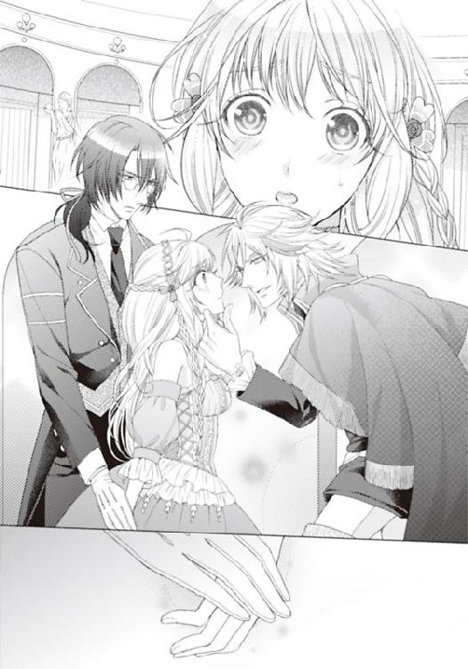
「小さな顔だ。首も長い。鼻筋も通っている。多少短いが、厚めのぽってりとした唇と相性がいいな。男好きのする顔だ。そして......」
無言でじっと凝視してきたかと思うと、やにわに顔をかしげ、ライラの唇に唇を押しつけた。
「う......」
驚いて声も出ないライラは、彼の顔で覆われ、視覚で何も認識できないと言うのに、目を閉じることもできず、驚きで身体を硬直させている。
大きく眼を剥いているライラの唇の間を、男のねっとりとした舌が、隙間を確認するかのように、真横に何度か舐めてきた。
「うぁ......んっ」
押しのけようとした腕を背を押さえ、男はしっかりと後頭部までも押さえつけてくる。
そして歯を割って、男の舌が口腔をまさぐるのを、ライラは耐えしのぶしかなかった。
スイズルは、一瞬目を見張ったようだったが、すぐ、何も感じないかのように冷ややかなまなざしでその光景を見つめている。
フェイ・グランのお付きの男たちも同様だった。
主のすることに驚きもせず、ただ付き従っている。男はやっとライラから唇を離した。
「経験は浅そうだが、官能的な口づけだ」
そして、今度は突然「踊れ！」といいながら、びりりとライラの春色のドレスを裂いてきた。
「あ」
今日久しぶりに着てきた豪華なドレスだ。なのにパフ袖を引き裂かれ、たっぷりとしたドレスの脇も引き裂かれ、ライラの白い太ももがあらわになる。
ライラは、動揺し、震えながら、その男に訴える。
「あの、踊りは舞台の方が。ここでは絨毯が......邪魔です」
「ここで、踊れ。俺はとても忙しい」
フェイ・グランの暴言に、ライラはぎゅっと唇を結んだ。
屈辱を受けながらも、手が、腕がしなやかに持ち上げられて、緩やかに空を泳ぐ。
足が動く。腱をのばし、指先までぴんと張って、そして腕の前で合わせられた両手を優雅に開いて腰を沈める。足をクロスさせた優雅なお辞儀。
それで、この場での踊りを見せたつもりだった。
「よし。三日後、昼前にゴールウエーの港へ来い。一番豪華な客船だからすぐわかる」
「あの、彼も......お付の彼もよろしいでしょうか。お部屋は一緒でかまいませんから」
スイズルをじろりと睨みつけたが、「ああ」そう言って、フェイ・グランは供を引き連れ去っていった。
これで、ライラとスイズルはフェイ・グランの豪華客船に乗り込めるのだ。
２ 豪華客船の淫猥
海の彼方から、宝石のような朝陽が現れる。
初夏でもどこか冷たい海の香りが、ライラの肌に染みてくる、アイルランドの港町。
ライラは初めて来る町だ。今まで何度か貴族の館に招待されたり、城での仮面舞踏会などイベントにも出席したことがあったが、港町の埠頭に足を下ろしたのは初めてだった。
この港は、客船用で、他国の豪華な客船も埠頭に横付けされている。
その中でも、船体に赤と黒のラインが太く引かれ、三本の巨大な黒い煙突が天にのびる、ひときわ眼を引く客船があった。船体の舳先にＱＬ３〝ライブラリー〟とかかれている。
「〝ライブラリー〟......〝書斎〟でしょうか。〝図書館〟でしょうか。いずれにせよ、ずいぶん珍妙な名ですね。女性の名前を付けることがほとんどですのに」
大きな革のトランクを二つ両手に提げて、スイズルは呻く。
「そうよね。エリザベスとか、メリーアン......。ダイアナや女神の名前も多かった気がするわ。オリンピアもあったかしら」
「その知識は、小説で、ですか？」
「ええ」
「やはりそうですか。お嬢さまが、造船日記や海洋日誌などを読むとは思っていませんが」
彼は口の端に、ごくごくわずかな笑みを見せる。
「しょ、小説だって、図書館にちゃんとある立派な書物よ？ 革張りの豪華な装丁こそあまりされていないけれど」
「───〝まったく〟...ですね」
「え？」
「〝あまり〟ではなく〝まったく〟でしょう。都合よく言葉をすり替えてはいけませんよ」
厳しさに唖然とする。だが唖然として立ちつくしている場合ではなかった。スイズルは重い荷物を抱えているというのに、もう埠頭の先まで行っていて、タラップを上っている。
ライラも慌てて、彼を追った。船体と埠頭を橋渡ししている木のタラップは、歩くとたわんで少し怖い。
「スイズル......待って」
「私とお嬢さまは、早めに乗り込んでおきませんと......この船の構造や内部の部屋の作りなどを早めに知っておく必要があります。中には特別な部屋がいくつかあるそうですから、それを見つけ出さなくては」
「特別な部屋？」
「コレクションを収蔵する宝物庫だと思います。その他にも図書館のようなものがあるとの噂もありますよ」
「図書館？ 本当に？ だとしたら、是非ともそこに入ってみたいものだわ」
「ええ。お嬢さま」
ライラはその言葉がふと気になって、デッキを見渡す。その場に人影は見えない。
でも、これから踊り子としてこの船に乗り込むライラに、目を見張る美形でありながら、四角四面な朴念仁であるスイズルが常に寄り添って、『お嬢さま』と呼ぶのはやはり違和感がある気がする。
「でも、フェイ・グラン氏には付き人も一緒にと許可をもらってあるから平気よね。それにこの船にはちゃんとした血筋の人が多いと聞くし。バンドマンやオーケストラも一流を選んでいて、だからお給料も本当に高いんですって？」
「この豪華客船ですからね。しかも船主は、大金持ちのフェイ・グラン」
「そうよね。それより、この書類、嘘を書いてしまったけれど大丈夫よね」
ライラは乗船時に手渡された証書にライラ・ミンスターと書き込んだ。母の旧姓だ。
スイズルもスイズル・テリウス侯爵と書き込んでいる。
「よろしいかと。では、船内では私はお嬢さまの恋人というのでもありでしょうか」
「恋人？ 私とスイズルが？ それはよくないと思う......の」
七歳、離れていて子供の頃から知っているせいで、異性として意識したことがない。
ライラの恋の対象は今までもっぱら小説の中の王子や、黒い騎士たちだ。
あえて言えば、踊り子の簡単な試験のときに、慣れた手つきで触ってきたフェイ・グランの視線や動きは、それまで見たこともない色気のあるものだった。
でもそれは、見慣れない獣を見たときの、感動的興奮だったのだろうと思う。
この船を目前にしても、ライラの胸は同じように大きく脈打つのだから。
スイズルは乗船直後、そこに立っていた制服姿の船員に渡されていた、黄色い紙片を手に甲板を歩く。
その紙は部屋番号が記載されているチケットだ。
タラップから乗り込んですぐの鉄階段を上がり、手すり沿いに後尾方面に歩く。甲板はまだ新しく、ニスがしっかりと塗られていて、とてもいい状態に輝いている。
いくつかあるデッキには、白いビーチパラソルと、長椅子が置かれており、今は人もまばらだが、ここで日光浴ができるのだ。上階には個人の部屋もデッキつきだ。
そして所々に大型の救命ボートが設置され、浮き輪も横付けにされているから、先日の大きな海難事故の教訓を汲んでいるのかも知れなかった。
「このあたりですね」
丸い小さな窓の並ぶ、いわゆる二等船室の並びで、スイズルが足を止めた。
部屋の番号は二〇二号室。ところどころに貼られている船室案内図を見て彼が感嘆する。
「まさしく豪華客船ですね。サウナもトルコ風呂も、スポーツジムも完備しています。個人でこれだけの船を、接待と個人使用で乗り回していることに驚きを覚えます」
昔のライラの感覚だったら、そういう人物がいても納得できる範囲だっただろう。
潤沢な資源を蓄えている金鉱、銀鉱、炭坑を掘っていればそれだけで日々莫大な資金を生み、先祖代々の土地からは宝がざくざく出てきたのだ。
「信じられないわ......。これももしや、〝黄金の花園〟をフェイ・グランが手に入れてからのことなのかしら。でも新しく採掘されている形跡はないのよね？」
「ええ、まあ。大がかりには、ということですが」
〝黄金の花園〟。アイスイル城の永遠の幸運。富と権力と、幸福を永遠に約束する秘密の書。失われたら、国が滅びるという噂まであるアイボリーの箱に収められている書物。
その昔から、大地や森林、草花には聖霊が宿っており、大地の神と聖霊たちのおかげで、この孤島は、厳しい自然環境においても、資源には恵まれた土地だったのだ。
その聖霊たちをあがめて信仰してきたクロフォード家は王族として、何世代にもわたってあの土地を治めてきた。
だから、あの堅城アイスイルが建てられた礎とされた〝黄金の花園〟は、金鉱資源のありかを押さえた秘書であると密かに伝えられていたのだ。
聖堂の奥の霊廟に大切に保存されていた書物だというのに。
司教と王、そして代々の長老しか在処を知らない秘された書。年に一度、風を入れ、書物の無事を確認するのが、冬至の祭り。誰もが伝説としか思っていないようなものが奪い去られるとは。
ライラは、丸窓以外に窓のない、こじんまりした白い部屋の中で、白いベッドに腰をかける。弾んでみて、それからクローゼットを探し、それらしき扉を次々開ける。
「ねえ、クローゼットはどこかしら」
この船室では、何もかもが作りつけなのだ。古き城にしか住んだことのなかったライラには、珍しくて仕方がない。
「スイズル。これ、可愛いわ。なあに？」
「手洗いと水飲み場ですね。可愛いですか？」
銀色のボールがベッドの奥に据え付けで、ボタンを押すと細い管から水が噴き出す。
「お嬢さま、濡れますよ。ほら。気をつけて」
「───ねえ。スイズル。これ、さっきもらったけれど、何かしら」
「『客船ＱＬ３乗船・踊り子の心得読本』ですね。読んでおいた方がよろしいでしょう。立ち入り禁止区域とか、消灯時間、売店、罰金のことなどいろいろ書かれています」
「わかったわ。でも、それより、フェイ・グラン伯爵が〝ブラッドレッド〟だという証拠はどうやったら得られるの？ 本名はフェイ・グランよね？ サインの筆跡かしら」
「そうですね。そして寄港地と盗難騒動の一致。侵入者宅の見取り図やオークション会場の見取り図などを所持しているか、様々です。そして社交界でも実は密かに、〝ブラッドレッド〟が貴族なのではないかという噂があります。荒稼ぎした大貴族ばかりが狙われていて事情に明るいようなので。とはいえ、あくまでも噂で証拠は一切ありません」
「でもスイズルは、かなり確証があると信じているのよね？」
スイズルは、眼鏡の奥のまなざしでうなずいた。噂を鵜呑みにしたまま、他人に話すなど決してしない。ただの伝聞でぬか喜びなどさせない男だ。彼は、とても優秀な執事だから。
「ええ。そして彼は、とても重要なもの、大切なものは常にそばに置く習性があるようです。おそらくは、執着心が強く、人を信じてはいない、そういう性格だからでしょう」
彼の人物分析力も、ライラが買っているところだ。
スイズルは昔から、ライラの心を読むのが上手だった。彼は難しい心情を語らなくてもわかってくれている。そういうところもとても好きだ。悔しいほどに。
ライラは眼鏡を外しながら思案する。
「そのダテ眼鏡は......もうおやめください。かえって目が悪くなりますよ。お嬢さま」
その様子を見て、スイズルがたしなめる。
「でも、なんとなく、賢そうに見えるでしょ」
冗談半分、本気半分で言ったのだ。でも、スイズルは、
「お嬢さまは、そのようなもので偽らなくとも聡明ですよ。私がよくわかっております」
そう瞳を射抜くような目で、真顔で、面と向かって言ってくる。それはとても嬉しいのだが、やはり少々面はゆい。
「この豪華客船では、眼鏡は封印なさってください。ここで、お嬢さまはフェイ・グランのお気に入りになっていただきます。彼に信用され、懐に入ってこそ、彼の本性がつかめ、コレクションの隠し場所が見つかります。クルージング期間は今のところ一週間。フランスに寄り、英国を眺めて戻る予定です。一週間後に彼の誕生日があり、その日、最終目的地に入ります。ですのでそれまでに、彼の部屋に自由に入れるようになっていれば、〝黄金の花園〟を取り戻せる可能性が上がります」
ライラは、どきっとした。
（お気に入り。〝部屋に自由に〟って......それは恋人とか愛人になれと言うこと？）
「ねえ。スイズル。フェイ・グラン伯爵は、独身なの？ 恋人はいないのかしら」
「──気になりますか？」
「気になるとかの問題じゃなく、いきなりキスしてきたりドレス破いてきたり、あの人、相当におかしいわ。変態かもしれないわ！」
スイズルは薄く微笑する。
「彼の母親ほどの年齢のパトロンはいるようですが、それはまさに援助だけの関係かと。一度限りの遊びの女性もいるようですが、私生活を知る女性はいない方が、情報が漏れにくくなります。彼は陸上でも行動をつかませないのです。あれだけ目立つ男ですが」
「そう。警戒心が強くて、隠し事があるってことね。それで、彼の部屋は、どこなの？」
「最上階のワンフロア、すべてです。さきほどざっと見たところ、そこには警備が何人もいて、侵入はまずかないません。ワンフロアすべて、彼の私室ですから、そこに書斎も寝室も、コレクションを収納している宝物庫などもあるはずです。この豪華客船の設計図があればもう少しなんとかなるのですが、途中で内部改造もしているようですし」
「信用されて、一緒に入れてもらえるようにならなくては内部も探れないのね......」
ライラは、早くもやきもきしていた。今、〝踊り子読本〟をぱらりと読んだ限り、午後にはダンスショーがあり、練習も準備も支度もあり、自由はきかなくなってしまう。
「とにかく、お嬢さまはもうお着替えください。私が軽くお化粧もいたしましょう」
「え？ まだ着替えるの？ これ、かなりいいドレスなのよ？ 本当は、この前フェイ・グランに裂かれたドレスが私の最高級のドレスだったけれど」
だが、スイズルはほんのり口元でほほえんだだけで、ライラを鏡の前に連れていき、自分はトランクを開けて、一着のすみれ色のドレスを手にしてくる。
上品でいて、肩口や腕にたっぷりとフリルがついている豪華なものだ。レースも高級品で、高めのウエストで太いリボンで絞り、大きなリボンが腰のバッスルの上に施される。
「さあ、あとは髪とお顔ですね」
スイズルは、本当に手際よく、ドレスを着せつけるとライラをスツールに座らせる。そしてライラが使ったことのない、母の形見のお化粧道具の一式を取り出すと、おしろいをはたき、目元にラインを軽く入れ、唇に紅をおいたのだ。頬にもほんのりチークをいれて、髪は軽くひねって細かく隠しピンで形作ると髪飾りをこめかみにつけ、柔らかくウエーブのある髪を背に垂らす。そうして、鏡の中のライラにゆっくりと声をかけた。
「完成ですよ。とても美しいです」
胸が、トクトク音を立てた。
鏡の中の自分は、それまでの自分とは別人のようだ。社交界の貴婦人。美しい乙女。
「お嬢さまは、本当は誰より賢く美しいのです。これでしたらフェイ・グランであっても籠絡できましょう」
「ろ、籠絡？」
「ええ。お嬢さまはフェイ・グランを誘惑し、虜にして宝の在処を聞き出すのです」
スイズルは人ごとだと思ってか、目標を高く持ちすぎている。
「では、さっそく船内の散歩をいたしましょう。豪華客船内部を把握するためです。お嬢さまは、引きこもりで出不精な上、それほど物覚えのいい方ではありませんから、ちゃんと記憶しておかなくては絶対に迷いますよ。それが命取りにもなります。さあ」
スイズルだって、初めて乗った船だというのに、まるで乗り慣れている自分の船のようにライラを案内していく。
「大まかに分類して、上の階ほど上流階級の金持ちが部屋を取ります。各部屋がまるで王宮の部屋をそのまま持ってきたように広く、一室内でいく部屋にも分かれています。各部屋に部屋と同じほどの広さのプライベートデッキもありますし、ジャグジー付きの大きなバスタブもあります。部屋に上がるための階段は大階段で、豪華絢爛。巨大なシャンデリアも下がり、高級な絨毯が敷き詰められ、十人ほどが横に歩いても平気なほど広く取られています。ここは、〝読本〟によれば、我々、雇われたものは、遠慮して上がらないようにと書かれています」
ライラは、案内されて、その階段を見上げ、見下ろす。本当にここが船の中だと思えないほど広く豪華だ。
汽笛が鳴って、埠頭を離れていく船を見送るものたちの姿がどんどん遠ざかる。
それで、乗客は今はデッキに出ているのか、この階段の周辺は人影はほとんどない。
「見つかったら怒られるの？」
「いえ、この船では規則違反者には罰金、追放、体罰が行われますから、お気をつけて」
ライラは、オークの曲線の手すりを撫で、ふかふかの緋色の絨毯に足を載せて、その感触を楽しんでいたが、〝罰金、追放、体罰〟の単語に慌てて飛び退いた。
「我々は、メイドやボーイではないですから、それほど厳密に罰は与えられないかも知れませんが、注意しておくべきでしょう。その次に豪華なのは、このすぐ上の階です。ですが、それほど部屋数はなく、デッキも小振りの部屋。その部屋が二階分ほどでしょうか。中にはメゾネットタイプもあるようです。そしてその下の階からはちょっと格が下がります。普通の客室としては十分ですが、窓が小さく、そしていかにも船の中という部屋になります。お嬢さまのお部屋もそうですね。その下の階も同様。部屋の扉もシンプルで部屋番号を覚えておかないと間違います。ああ、部屋の鍵はなくしますと、罰金だそうです。新しいスペアは買わなくてはいけません」
ライラは鍵を握りしめる。
城では鍵など使うことはなかったから、緊張する。それで、外出時には常に携帯している、ガーターベルトに巻き付けて使う、薬草ポーチに入れておくことにした。
「お嬢さま。このようなところで、ドレスをめくり上げたりしますと」
ライラが足を露わにしたとき、デッキの向こうから、足音がして階段を下りてくる人物がいる。
「あ......」
すぐに、それが何者かわかった。とても目立つ大柄な男性。マントを脱ぎながら、深い陰を作っていた帽子を取る、そしてライラの前で立ち止まった。
見た目の貫禄より、遙かに若いフェイ・グランだ。
息をのんだ。船上で会ったのは初めてだが、行き交う他の貴族とは迫力が違う。
一部に赤いメッシュがある、獅子のような黄金の髪。
「彼のあの髪。あれが〝ブラッドレッド〟と言われるゆえんの血染めの髪です。本当に血で染まってはいないですが、短気で血の気が多く、しばしば流血沙汰を起こす。軍人という地位にありながら、人を殺しすぎて、今はほとんど海軍の軍船関係の仕事をして輸入業も商業も、その関係で始めたらしいですよ」
（目立ちすぎる......わ。血の臭いと、獣の匂いがしてきそう）
「お嬢さま。ほほえんでください。どれだけ嫌いでも、ドレスの恨みがあったとしても」
スイズルに耳打ちされて、ライラは無理矢理ほほえんだ。その笑みは、思ったより自然でとても効果があったようだ。
フェイ・グランは、むすっとしたまま表情を崩さなかったが、彼が周囲に従えていた部下と取り巻きの貴族たちは、そのほほえみにうっとりとし、色めき立った。
「ああ、可愛らしいお嬢さんだ。フェイ・グラン伯爵、このオレに紹介してくださいよ」
栗色の髪を整髪油でなでつけ、後れ毛がはらりと額にかかっている。つんとした鼻先とつり上がった眉、人を見下しているような灰色の目が、どことなく人柄を表しているようで、ライラは身構えた。
「カーネル・ラドル男爵。その子は......」
フェイ・グランはライラを見て、そして今一番に身を乗り出し、足を踏み出してライラに好感触を示した男に説明する。
「彼女は、踊り子として新たにこの船に乗船を許可したライラ・ミンスター嬢だ」
「貴族なのに踊り子として？ ああ、もしや彼女もフェイ・グラン伯爵さまが、辣腕を発揮し破産させた家の令嬢ですか？」
堂々と皮肉を言う男爵に、フェイ・グランは特に腹を立てる様子はない。
「そういうわけではない。ただ、それなりに根性がある上、このような愛らしい容姿、どうしても船に乗りたいと言うから採用した。この客船の招待客は、その辺の女性では満足しないとわかっているのでね」
フェイ・グランが、もっと自分を酷評し、卑しめるとばかり思っていたライラは、気が抜けたようにフェイ・グランを見上げる。
生き物のそれではないかのような、輝くロイヤルブルーの冷たい瞳。笑むことなど一生ないだろうと思える真一文字に引かれた唇。
「踊れて、しかもこの船に乗りたいというのなら、俺は、どこかの王女でも雇うが」
「おっしゃるとおり。王女の踊り子などおいしそうですな。二晩でも三晩でも指名したい」
「───指名......？」
「指名が入れば、チップが弾んでもらえるということだ。まあ、がんばるといい、下手な踊り子を雇ったと、俺に恥をかかせないように」
フェイ・グランは、ライラを一瞥し、そして十人以上の取り巻きの貴族と、黒い服に身を包んだ護衛の部下を従えて去っていった。
去り際に、フェイ・グランのすぐあとを歩いていたラドル男爵は、ライラに意味深なウインクをしていく。そしてフェイ・グランの護衛である黒い服の男のひとりが、ライラの手に何か手渡してきた。
「あの？」
「フェイ・グランさまから伝達です。〝先日のドレス代だから受け取れ〟と。では確かに」
そう言って、浅黒い肌のエキゾチックな男はすぐフェイ・グランのあとを追っていく。
「ドレス代ですか。案外ときちんとした男でしたね。あのフェイ・グラン伯爵は」
「───そう、ね。でもお金よりもまず、非礼をわびるべきだと思うの」
ライラはスイズルの言葉に微妙に納得しきれないまま、彼らが去っていった方を見る。
「素直でない、かわいそうなひねくれ者なのですよ。きっと。ですが、つかみはいい感じだったのでは。フェイ・グランはお嬢さまを好きですよ」
「え？ 好きって？ スイズル、何を言っているの？ 好きな人にいきなりキスしたり。ドレスを裂いたりするわけないじゃない。そんなことをしたら、普通は嫌われるわ」
ライラは、今度の言葉には絶対に同意できないとばかり、スイズルに声を上げる。
「そうですね。だから私は言いましたよ、彼はひねくれた男だと」
「〝ひねくれ者〟で済まないと思うわ。でも、あのフェイ・グランについていたラドル男爵さま。あの人、このクルージングの人員募集の新聞記事に載っていたような......」
ライラは、またポーチを取り出そうとしたが、今度こそスイズルに止められた。
「お嬢さま。おやめ下さい。それより、ぐるりと地下を回って、部屋に戻りましょう。仕事場になるショーフロアと劇場、そのあたりを見ておく方がいいでしょう」
「練習場もあるかしら」
「ありますよ。ダンスレッスン場が。振り付けなどの訓練が今日二時からですね」
ほっとした。踊るなら、その前にちゃんと身体をほぐしたい。
スイズルについて、ライラは豪華な浴場や、プールバー、そして多くの貴族が利用する、食堂や喫茶室などを見て回る。売店もあって、至れり尽くせり。まるで小さな町のようだ。
「ずっとこの船の上で過ごせるわね」
「ええ、実際。フェイ・グランは一ヶ月ほどクルージングしていることもあります。カジノやオークション、様々な国の博物館や美術館に行っているようです。ああ、仕事関係で、デパートや、造船所の買収などもしているようですが」
「すごく幅広いのね」
軍人で美術品趣味で、デパート経営者で、造船所の買収もしてなんて、同じ頭脳でできることじゃないように思う。その上、盗賊行為までしているなら、まさに八面六臂だ。
「ねえ、スイズル」
「なんでしょう」
「この下にも階段がずっと続いているけれど、地下は何？」
「貨物室が二階分あります。その下に馬車や乗用車が積めるスペース。その下がボイラー室です。最下層にはこの豪華客船を動かす原動力が詰まっているのです」
「その貨物室に、フェイ・グランの荷物は入っていないのかしら」
「さきほど言いましたが、簡単に誰もが入るようなところに彼は大事なものは置きません。身近に置くのです。誰にも入れない、知られていないような秘密の部屋に」
改めてスイズルの人物分析力はすごいのだと部屋に戻りながら、ライラはさっきの男爵のことを思い出す。
「なんだか嫌な目で私を見ていたわ。あのフェイ・グランよりも虫ずが走ったわ」
「さきほどのラデル男爵の一族は有名で、親族も警察署長や、外交官など、高位に就くものも多いのですが、彼自身は〝虎の威を借る狐〟です。大樹に隠れながら、悪事を働く上、ひがみっぽく、ねたみっぽいので、いつも大樹を倒そうと画策もしています」
「なんだか、とても嫌な人ね」
「ええ。金と女性のスキャンダルも多いそうです。彼の妹君はいい方ですけれどね」
「もう妹さんとまで知り合いなの？」
「さきほど。お嬢さまの紅茶を取りに行ったときにお話をしました。ああ、あの方です」
二人の部屋のある階に上がったとたん、扉の前に金の縦ロールの髪が可愛らしい、桃色のドレスの少女が立っていた。大きなリボンを髪につけ、腰に大きなバッスルがある。
「スイズルさま。よかった。いらっしゃって。伺ったらお留守だといわれて、ああ、こちらの方が教えてくださったのだけれど、従姉妹さんの付き添いで乗船なさったのですって？ こちらの方がそうかしら。可愛い方ね。初めまして。私はマデラ・ラデルですわ」
豪華な少女は物怖じせずに、ライラに笑みを見せ、スイズルを熱い目で見上げている。
「初めまして。ライラ......です」
ライラは、本名を名乗ろうか、この船に乗船記録として記入した書類に揃えようか悩んだが、どちらも言わずにおく。従姉妹だなんて、スイズルが勝手にねつ造していたせいだ。
「来てよかったです。どこかでお茶でもいたしませんか？ あなた方も一緒に」
マデラは、ライラの部屋の隣に入っているらしい、おとなしそうな黒髪の少女、シャルロットと、ライラを誘う。
「あ、すみませんけど私はこれから......ダンスの練習があって。もういかなくては......」
シャルロットはおどおどした声でそれだけ言うと、ウサギがちょこまか動くように可愛らしい動きで向こうの階段に消えてしまった。
「ああ、では私も......いかなくては。私も......練習をしないと」
ダンスの練習ということは、あの可愛らしい子も踊り子として、ここに乗船したのだ。
「まあ、そうなの？ ライラさん。でしたら従兄弟様はお借りするわね」
マデラはスイズルが好きなのだと、はっきりわかる。スイズルの腕に手を載せて、ティールームへ上がっていった。その二人の後ろ姿を見送って、ライラはなぜだか無性に寂しくて腹立たしい。
（スイズル......。私、これから、見知らぬ人たちの中に混じって、知らない踊りを覚えるのよ。何を用意していけばいいの。何を着ていけばいいの。髪だって結わえた方がいいのかこのままでいいのかわからないわ）
つぶやきながら、部屋に入って、レッスン場へいく支度を自分なりに調える。バレエを練習するときは、レオタードとフレアのうすぎぬのロングスカートをはいていた。
バレエを習っていたのだと、フェイ・グランに告げて踊り子になれたのだから、その格好でいいだろう。
髪は三つ編み禁止だとスイズルが言うから、このままでいく。トランクを開けて、まだ中に詰まっている荷物を見てみたら、そこにはライラのものばかりが入っていた。髪飾りやドレスや靴。そして髪を梳かす豚毛のブラシ。
もう一つのトランクを開けて見るが、そちらにもライラのドレスや靴ばかり。スイズルのものはない。
「スイズルったら、自分の服は、一着だけなの？ もっと持ってくればいいのに。豪華客船の令嬢たちとお茶するのに、執事のような黒い服ばかりでは変だわ。スイズルは、ここでは貴族として振る舞うべきなんだから......」
あきれながら、ライラはバレエのシューズを取り出した。
そのとき、ころんと転がり落ちたのは、金の時計鎖と鎖飾り（フォブ）だ。
「ああ、スイズルの懐中時計......」
彼がいつも身につけている、懐中時計はライラの父が贈ったというものだが、この時計鎖と鎖飾りはそれよりいっそう豪華だ。
「よそ行きの鎖と鎖飾り？ 初めて見るかしら。こんな鎖飾りも持っていたのね」
つぶやきながら、太い金の鎖とそれにつけられた鎖飾りを指先で持ち上げる。鎖の先の、とても高価そうな懐中時計が着替えのベストの中から現れた。
花綱と、楯を持つ獅子と一角獣の図案が蓋に彫り込まれている。どう見ても素晴らしいものだ。裏を見ると、名前が彫り込まれていた。
〝スイズル・テリウス・デ・グランパルス誕生のお祝いに。母より。〟
「ううん。これは......彼が子供の頃は、いつも肌身離さずつけていたものだった気がする」
いつからこれを目にしなくなっただろう。執事の契約を結んだ頃だろうか。
鎖飾りも、昔は目にしたことがある。紋章の入った黄金のメダリオン。それと、親指大もあるルビーとサファイアにダイヤ。
昔は、こういうものが城にもごろごろしていたから、あまり気にしていなかった。それに触れると怒られた気がして、ライラは慌てて、それ元通りの場所に戻してトランクを閉めた。スイズルが戻ってきて見つかったら、また怒られてしまうかも知れない。
「スイズルが、本当は地位の高い貴族の出身と言うのは、本当なのよね」
そう思うと、自分の執事として契約しているものの、船上の令嬢たちとも釣り合う家柄だということが思い出されて、ライラはよけいにちりちりとした焦燥感を抱いた。
「早く、フェイ・グランの部屋に入って宝物を取り返して、スイズルと城に帰らなくては」
ライラの頭の中では、もうフェイ・グランがあれを盗んだ男だと決定づけられている。
天候にも左右されるだろうが、最低でもクルージングは一週間。ライラが踊り子として立つステージもその日数が給料として支払われる。金銭的に困窮している者の為になのか、前払い金が支度金として渡されたが、かなり高額だった。そしてさっきフェイ・グランの部下にドレス代だと手渡された封筒を改めて開いて見たライラは、驚いて目を丸くした。
そこに記載されていた小切手の金額は、恐ろしいほど高額だったのだ。あのドレスは父がライラを貴族のダンスパーティーに引きずり出すとき、奮発して特注したものだが、この額まではしないと思う。
物価には疎いライラが驚くほどだから、やはり高すぎる。
「まさか、ここに慰謝料も含まれているのかしら。あのフェイ・グランって本当変だわ」
予備知識としてスイズルに聞かされていた、彼の噂や人となりだけでも、変だった。
ライラはトランクに入っていた、あのときの新聞を取り出して、改めてフェイ・グランの記事とこの豪華客船の記事を見つめている。
「この荒い写真より、実物は遙かにゴージャスでかっこよかったわ。冷酷そうだけど、もてそう。女性パトロンがいるってスイズルはいっていたけど、この船にいるのかしら」
数々の業種に手を出しては成功させ、いくつもの企業のオーナーとなっている、年若き伯爵さま。その経歴も、本当の家柄も謎だということは、盗賊〝ブラッドレッド〟のこともあって素性を隠しているのかも知れない。
「もしかしたら養子......かも知れないし......」
ライラは、その記事の載っている一面に、さっきいやらしい目でライラを見てきたラドル男爵の記事も見つけた。『フェイ・グラン氏の親友で同業者ラドル氏。フェイ・グラン氏が買収しようとしていると噂のあった〝Ｋ＆Ｍ社〟を先がけて買収』とあって、得意げな顔のあの男爵の写真もあった。
『フェイ・グラン氏のデパート〝ＦｅＭ〟以上の成功を確信している、と語る』とまで書かれている。男爵はフェイ・グラン氏に、常に嫉妬と羨望のまなざしを注いでいる面倒なライバルらしい。
「フェイ・グランはいけ好かない男だけれど。それに私の城の家宝を奪っていったらしい最悪の伯爵だけれど、この男爵よりはマシそうよね」
いつもそばに取り巻いて、こびへつらっている〝親友〟が、実は隙あらば先手を打って、足元をすくおうとしているライバルだなんて、気の毒だ。
「普通、これだけ成功を収めている事業家だったら、面の皮だけ厚くなって財布の紐は堅くなるものだけど、フェイ・グランは案外気前はいいようだし......。でも、この船で踊り子を十年続けても、アイスイル城の一年の修繕費にもならないわ」
ライラは深く嘆息し、そしてその一面の下の方に、高額な報奨金がかけられた尋ね人を見つけた。
『王室の血を持つ黄金の髪の青年、十年以上昔に海難事故で行方不明。心当たりの方は新聞社まで連絡を。報奨金は千ポンド』
スイズルが目をつけていたのだろうか。小さくチェックマークが入れられている報奨金の記事だったが、この青年を捜すよりは踊り子を十年した方がよさそうだ。金髪の青年なんてだけの情報でどれだけ真実に迫れるだろうか。
「ほくろが額に星形に並んでいる、なんて情報だったらとてもわかりやすいのに」
ライラは、そんなことをつぶやきながら、タオルを手に、急いでダンスレッスン場へと走っていった。
「あの、ダンスのレッスン場はこちら？」
そっと扉を開けてみる、と、音楽が流れていた。
バイオリニストがレッスン場の中で〝天国と地獄〟を奏でている。その音楽に十一人の踊り子たちが、可愛らしいロングドレスで踊っているのだ。
皆、踊ることに一生懸命で、誰もこちらに気づかない。それでライラはそっと中に滑り込んだ。一二人の少女たちの踊りは、バレエなどとはまったく違い、音楽の激しさと同じく、その振り付けも熱く激しいものだ。一斉に動作を揃えて何度も直角に、頭上にと足を上げ、一列に並んで踊っている。途中で、並び順を変えられたりしながら、舞台上で映えるよう、身長や体格などのバランスを計られているらしい。
入り込む隙さえないその迫力と激しい踊りに、ライラは唖然として見入っている。
立ちすくんでいると、隣にそっと寄ってきた少女が声をかけてきた。
「あら。スイズル・テリウス侯爵さまの従姉妹さん......ですよね」
「あ、はい......」
ライラを迎え入れ、隣で見学をしている少女は、あのとき部屋の前でマデラ嬢を案内したという黒髪の少女。シャルロットだ。
黒いたっぷりした黒髪を結わえもせずそのままで、白いふんわりしたサマードレスのようなものをきて、足下にはバレエシューズだ。
よく似合って、とても可愛らしい。
「侯爵さまの従姉妹さんなのに、本当に踊り子さんとしてここに？」
「はい。どうしてもここで踊りたかったので......応募したんです。あの、すみません。遅くなって。こんなに早く練習をしていたなんて知らなくて。いつからだったんですか？」
「一時間ほど前からかしら。船が出たときにはもうみんなは練習に入っていたと思います。私は、補欠なので。それより入るのは遅かったのですけど」
「補欠......なんですか」
「ええ。新人なんです」
とても船内とは思えない広いレッスン場は、白が基調でとても明るい。窓は大きくはないが、ちゃんと取られていて、外に青空が見える。デッキもある。一面が鏡張りで、壁沿いには練習用のバーもある。本格的な練習場だ。
扉を閉め、中に入ると、彼女たちが振り付けを教わっている女性振り付け師が立つその奥に、じっと練習を見つめている男性がいるのに気付いた。
浅黒い肌に紫がかった目。銀の髪。フェイ・グランの部下で側近の青年だ。
彼女たちが踊っているその一部始終を、睨みつけんばかりの厳しい顔で見つめ、そして腕組みをしているかと思うと、チェックシートの挟んであるボードを取り出し何かを書き記している。
「あの、これは何の踊り......かしら。すごいのね」
「コーラスラインよ。フレンチカンカンの振り付けなの」
「そこ！ どうした？ 今入ってきたの？ 遅い」
音楽が終わり、一通りの通し稽古が終わったらしく、厳しい顔つきの女性振り付け師がライラを見つけて声を荒げる。
「すみません。私、今度からこちらに入れていただくライラと申します。よろしくお願いします」
大きくぺこんと頭を下げる。
普段は三つ編みにしていることの多い長い髪が、背中でさらりと音を立てた。
「あなたね。ライラ・ミンスター。なるほど」
「ああ、彼女はそれほどちゃんと踊れなくてもいいそうです」
淺黒い肌のフェイ・グランのお付き、ディスラートが声をかける。
「それはどういうことですか？」
「バレエが得意と言うことで、フレンチカンカンではなく、前座として白鳥の湖でも踊るといいだろうと、フェイ・グランさまが」
周囲の踊り子たちがざわめいた。
「いやだわ。落ちぶれた貴族の娘なんでしょう？ 特別扱いなのかしら」
「ねえ。白鳥の湖なんて、場がしらけるんじゃない？ バレエしか踊りたくないってこと？」
ライラの意図しないところで、話がこじれていきそうだ。
「ああ、その娘は、特別に入れた。だから、カンカンは踊らなくていいぞ。無理だろう」
フェイ・グランの声が背後から投げられた。戸口とは全然違う方から突然現れ、ライラはひどくびっくりする。
（今、どこから来たのかしら......）
だがそれより問題は、ここで特別扱いされたと他の踊り子たちに思われては、今後いろいろ面倒になりそうだ。ライラは、ここで、円満に生活したい。ただでさえ潜入捜査のようなマネごとをしている身なのだ。
「あの、フェイ・グランさま。私がんばってフレンチカンカンを踊ります。踊れるようになりますから、列に入れてください」
ライラは言って、頭を下げる。
フェイ・グランは、ライラの予想外の行動に驚いたようだった。
「踊れるのか？ 本当に？ 同調性のいる踊りだぞ？ ドレスを激しく振る力もいる」
「だ......大丈夫です。やってみせま......す」
「ああ、オレも見たいな。ライラ嬢のフレンチカンカン」
戸口の方から。顔を覗かせたラドル男爵も、そういって片手を軽く振ってきたのだ。
「───わかった。ではさっそく今晩踊ってみるといい」
「はい」
「ダメだったらはずす。はずしてシャルロットと組ませて、白鳥の湖にするからな」
「はい」
とりあえず、ここでみんなが踊るものを踊らなくては、そう思ってライラは懸命に振り付けを覚えた。
他の踊り子たちが練習を上がっても、一人で練習を続けた。
「ふうん、がんばるね」
ラドル男爵が、また練習場を覗いてくる。
「ありがとうございます。がんばりますので見に来てください」
ライラは一応輝くような笑顔を作ってみせた。客商売の踊り子だ。
「──ねえ、君どこの貴族だって？ 英国？ それともアイルランド？」
それはあまり聞かれたいことではない。どこまで嘘にしておけばいいか、スイズルがいないとわからない。
「ドネゴール......の方です。小さな村の落ちぶれ貴族なので、ご存じないと思います」
「ドネゴールか......聞いたことはあるけど地方だな。ミンスター家はもとは伯爵？」
「はい」
本当に冷や冷やする。だが、彼には思い当たる節はなかったようだ。そのまま軽薄そうなウインクをして去っていく。
それで、ライラはほうっと床に座り込んだ。
ドネゴール地方。エスケ河の河畔にある城。アイスイル城に住まう王族。
そんな有名な城の姫であっても、この豪華客船に乗り込んでいる貴族たちへの認知度は低いだろう。
それは、もちろん、ライラが城からほとんど出ず、社交の場に顔を出さないからだったが、今となってはそれは有効に活用できる。自分がまだ落ちぶれ貴族ではないということが、ここでばれてはならないからだ。
もし、アイスイル城のクロフォード伯爵家の令嬢だとフェイ・グランに知れたら、嘘までついて乗船したことを怪しまれる。
フェイ・グランが本当に盗賊で、貴族たちの宝を盗んでいる不届きな人物であればなおさら、ライラを警戒するだろう。警戒されては困るのだ。
警戒されずにフェイ・グランに近づき、彼の宝物庫を突き止めなくてはならないのだ。
「絶対に一週間以内に......なんとかしなくちゃ......」
「え、何か言った？」
楽屋で、ステージの衣装を着付けてくれていたシャルロットが、鏡の中のライラを見つめた。
「いえ。何も......ただ......」
「ただ？」
はかなげで優しげな風貌の彼女は、ライラを気遣ってくれているらしい。
「怖いわ」
「大丈夫。フレンチカンカンも舞台も、きっとすぐに慣れるわ。怖いのも、恥ずかしいと思うのも最初のうちだけよ」
失敗するわけにいかない。ここには巻き込んでしまったスイズルもいるのだから、無事に船を下りる日まで、ちゃんとしなくちゃいけないという気負いだけで、息をする。
「スイズル様は、客席でみていらっしゃる？」
「ええ......たぶん......」
「そう」
シャルロットはわずかにもじもじと両手の指をこすり合わせる。
「スイズル様はお奇麗ね。それに指先がすごいんですって。令嬢たちが噂してたわ」
彼女はスイズルが気になっているのだろうか。スイズルを好きなのだろうか。
「シャルロットさん。すごいといえば、このドレスも......すごいわね」
「そうね。でも私は実は町のダンスホールでも一度だけ踊ったことがあるから、それに比べたら驚くほどではないわ。もっとすごい衣装だったもの。胸なんかもう全部......」
「む、胸が全部？」
その〝すごい衣装〟がどれほどすごいのか、舞台を控えた今は聞きたくなかった。
「時間よ、ライラさん」
他の少女たちが続々と部屋をあとにしていく。ライラも、踊り子の心得すべてが記されている〝踊り子読本〟をロッカーの中にしまい込み、慌てて少女たちのあとを追う。
そして、その身支度を調える楽屋から、外に出ると、早くも滔々と客席に向かってしゃべり始めている司会者の声に導かれるように舞台袖へ入った。それまで同じ空間で身支度を整えていた少女たちが、一斉に大人びた顔になった。
足下には深紅のハイヒール。ライラは、こんなに細いヒールを履いたことがない。こんなに高いヒールで踊ったことは、当然なくて早くもよろめいてしまいそうだ。
ウエストを絞った深紅の衣装。透ける薄衣を、花びらのごとく何枚も重ねてでできたような胸元は、アンダーバストからふくらみの上を覆うが、下手をしたらトップが透けて見えてしまいそうだ。
金糸や銀糸、色とりどりの刺繍で、飾られているものの、胸の谷間もかなり目立つ。織り込まれたリボンで長い髪をくるくると巻き止めているが、後れ毛がうなじをくすぐる。
初めて履いた黒い網タイツ。フリルたっぷりのドロワーズはともかく、恐ろしいほどのボリュームのペチコートは案外と重く、厚めのシルクの深紅のドレスは、フリルとギャザーたっぷりで、普通にしているだけでも重量感がある。
このドレスを両手でつかんで、観客に向け、下着が見えるほど激しく振るのだ。
バットマン。ハイキック。ハイキック。その場で三六〇度回って、またハイキック。スカートを左右に大きく振ってドロワーズまで見せる。
そして隣り合っているペアの相手と、くるくると向き合って回り踊る。
できるだろうか。足を太ももまで見せるなんて、はしたないと子供の頃に言われていた。
バレエのレッスンのときですら、こんな欲望をあおるようなあけすけな衣装で足を上げたことなどない。しかも、大勢の男性客がいる前で、足を上げるなどもってのほかだ。
気が遠くなる。
心臓が破裂しそうで、めまいがしてくる。
自分が今、ちゃんと立っているのかすらわからなくなってくる。
「大丈夫？」
舞台に登場する順番待ちで、緊張していると、髪飾りを直してくれているシャルロットが小さな声で訊いてくれた。
「え、ええ......」
蚊の鳴くような声だったと思う。その声もちゃんと彼女に届いていたか怪しい。
「では、レディースアンドジェントルマン！ お食事はお済みでしょうか？ お酒は進んでいらっしゃいますか？ これから我が豪華客船のみでしか見られない、若々しい少女たちのフレンチカンカンをお見せします。衣装にも目をこらしてご覧ください！」
緞帳の向こうで、司会者の声が響き、一斉に大きな拍手がわき上がってくる。
まだ若木のようにしなやかな一八歳、ライラの体は緊張で包まれている。
濃い臙脂色の緞帳が上がる。
早くも音楽が演奏される。オーケストラピットのちゃんとある舞台。生のオーケストラの演奏だ。
ライラは、自分より年上か同じ年頃の乙女たち一一人と一列に登場し、目の前に大勢の客の居並ぶステージに立ったのだ。
白い光が頭上から真夏の太陽の光線のように降り注ぐ。目くらましを受けたようにライラは周囲を見失った。
だが、一度ぎゅっと目を閉じて、それから足下を見つめると、赤いヒールの先端が確認できる。そしてステージの上に小さく落ちる黒い影。輝くようなステージの下が客席だ。
観客たちはテーブル席に着いて、ワインやビアグラスを傾け、オードブルをつまみながら、こちらに強烈な視線を送っている。
夜のシックなドレス姿の令嬢や婦人も多かったがそれ以上に男性が多い。三分の二は男性だろうか。そんなことを思った頃に、音楽が激しくなり始めて、そこで一斉に踊り子の少女たちが足を振り上げた。
ダンス開始の合図だ。
真っ白な光の中のステージ。ステージ上を照らす強い光の陰になって、客席は暗く、人々の固まりとしか認識できない。だから、気にしなければ、気にならない。
それより、振り付けを間違えたら、連帯責任を取らされて、給料が引かれるのだ。
ハイキックでロングスカートを蹴り上げて、巧みに操る。刺激的で、挑発的なダンス。
腰をひねってステップを踏み、膝から下の足先を激しく動かしステップを踏む。
脚線美を見せつけるように大股開きで左右の手足を交互に閉じ、交差して、繰り返す、複雑な動き。
コーラスラインになって、ひとしきり、一直線上で皆が一糸乱れぬ同じ振り付けと、動作を繰り返す。
壇上で踊りまくって、激しく息が上がってくる頃。曲が勢いを増し、そして最後の派手やかな足上げのダンスが繰り返される。
左右に足を上げ、頭より高く振り上げる。片足を片手で持ち、頭より高く固定する。まっすぐな脚線美を作らなくてはならなかったが、バレエを習っているライラにはお手の物だった。
黒い編みタイツを履いた足に、しなやかな仕草で手を滑らせ、官能的なポーズを取る。下着が丸見えだったが、気にしてはいられない。
少しでも迷いが生じると、ダンスのテンポが狂う。狂えば、大勢で並んで同じ振りをしているのだから、ひとりだけずれてしまう。ずれたらそれもペナルティだ。ここに来て、他の人のお荷物になることも。ペナルティで罰金を払うことになるのも許されない。
貴族の姫としてのプライドもある。バレエを習っていたというこだわりもある。
そして、ステージ上で、大開脚して、沈み込み。前後百八十度に開脚したままステージに足を伸ばし、その上体を前方につきだした足の上に折ってぺったりとお辞儀をする。
頭につけた大きなダチョウの羽根飾りが床を撫で、そして緞帳が緩やかに降りた。
客席からは大喝采だ。
踊りの途中の〝天国と地獄〟の激しい曲がオーケストラで奏でられている最中も、客たちが手拍子を打ち鳴らしていたのだが、ライラは踊りに必死になっていたから、聞こえたような聞こえていないような、そんな夢うつつの状態だった。
そして一度下りた緞帳の中で、踊り子の少女たちは一度大きく息をつき、成功したのだと確信する。
それは終わりではなかった。
たっぷりと重く華やかな白いペチコートを両手で持ち上げ、左右に激しく振りながら、壇上から舞台の袖にある二本の細い階段に踊り子たちは二列になって降りていく。
八の字を描くように、左右にスカートを振り回し、敷かれた紅い絨毯の上を歩き、段下の客席の花道を歩いていく。
細く、高さのあるヒールで、幅の狭い階段を降りるのはかなり難しいことだ。その上、重くボリュームのあるスカートを振りまくるのだから、バランスを取るのも一苦労。
ヒールがドレスのスカートに引っかかった。
波打つフリルに細いヒールが絡まってしまったのだ。慌てて、体勢を整えようとしたが、既に遅く、つんのめって転びそうになって、ライラは息を詰めた。
「あ」
誰かの手がライラの身体を支えた。
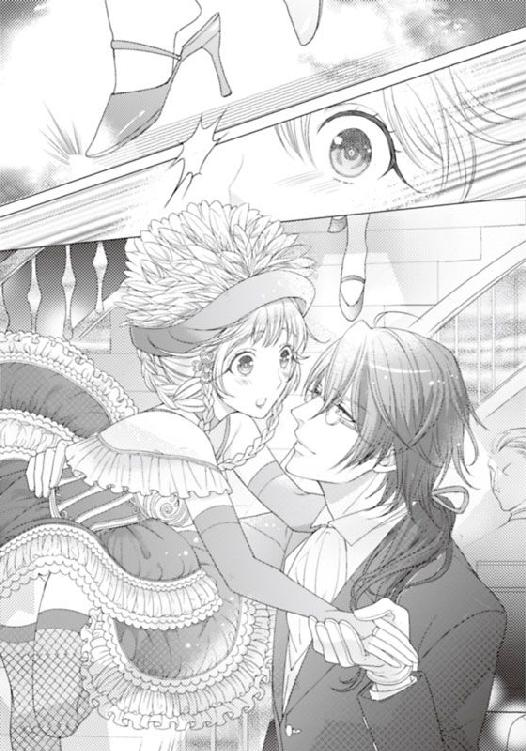
スイズルだった。彼はその客席の通路の真横に控えていて、とっさにライラの身体を抱き止めたのだ。そして、そのままライラを踊りのポジションに整えると。まるでそういう振り付けと演出だったかのように踊りを続けさせる。
他の客は、それが演出だと思っただろう。歓声を上げながら拍手を浴びせかけてきた。
そのほかの観客も踊り子たちの手を取って、簡単な踊りの輪を作り、二人カップルになってくるくると舞い踊る。
それがひとしきり続けられると、踊り子たちは器用に客の手を放して、また壇上へと戻るのだ。
音楽は終演を示すように次第に落ち着きを取り戻し、そして幕の下りる時間となる。
オーケストラの演奏はまだ続けられていたが、それでダンスショーは閉幕となった。
「───ねえ、足は大丈夫......？」
「ええ。なんとか......」
少し足をひねったようで、歩くと軽い痛みが走る。でもねんざというほどではない。
「部屋に戻って、冷やした方がいいわね。明日もまた舞台に出たいでしょう？」
「舞台に上がらないと、お給料が少なくなるのよ。大変な高給だもの、もったいないわ」
楽屋に戻ると、他の踊り子たちが汗を拭き、髪飾りを外しながらライラのことを気にしてくれる。
「では、補欠の場合も？」
「ええそうよ。あなたが入ってきたから、シャルロットはもうどうあがいても補欠ね」
だとしたら、ライラが入り込んだせいで、確実に補欠になってしまったシャルロットには、申し訳ない気持ちで一杯になる。素直に白鳥の湖を踊れば、彼女もダンスが踊れたのだ。
「あら。平気よ。そうしたら、お客相手に話をしたり部屋に行って相手をしたりすればいいじゃない？ ねえ。無理に明日も踊ろうなんてしなくていいのよ」
「え？」
「殿方に夜のご奉仕をするのよ、一夜のサービスを」
「それって......あの......まさか......」
「ええ。抱かれるのよ」
ライラは、目を点にして絶句したのだ。
３ 執事の調教・豪華客船オーナーの寵愛
（───冗談よね。あれはきっと、私を脅かすための冗談よ）
夕凪の風が心地よくなり、波音も静かな夜。窓の外から入り込むわずかな潮の音と匂いだけが洋上にいるのだと感じさせる。
「フェイ・グラン......。あの人も客席の片隅で、私の踊りを見ていたわ......」
そして、なぜか心に残っている。ライラが転びかけたとき、スイズルがいち早く助けてくれたが、フェイ・グランもライラの方に駆けだしてくれていたのだ。
（私を、助けようとしてくれていたのかしら......変な人......）
フェイ・グランのつかめない行動は続き、そしてライラに対して何を考えているのかももっとわからなくなってくる。
「絶対だ！ 絶対部屋を別にすべきだね。オレはそれを勧めるぞ。フェイ・グラン」
「わざわざ人をこんなところに連れてきて、いうことはそれか。ラドル男爵」
フェイ・グランは、ライラの部屋の前に呼び出されて、あきれ気味だ。隣室のシャルロットが一時そっと廊下を覗いていたが、今はもう中に入ったようだった。
スイズルは先ほどからライラの背後で忠実な番犬のようにたたずみ、こちらを睨みつけるような男に興味を引かれている。
ラドル男爵が、妹に聞いたのか、突然ライラとスイズルの部屋をわけろとフェイ・グランに直談判し始めたのだ。
「大事なことだ。いい年頃の男女が、同じ部屋とは」
「スイズル候は付き人だ。心配ない。離せばかえってライラが不便だろう」
「ダメだ。何かあっては遅い。ライラは処女だと聞いてるぞ。価値が下がったらフェイ・グラン、君が一番困るだろう。高く売れそうな美少女だ」
「売る？ ライラさまを、売るとはどういう意味でしょう？」
そして浅黒い肌のディスラートは、フェイ・グランの後ろでラドル男爵を睨んでいる。
ライラから見たら、四人が冷たい視線でにらみ合っているようにしか見えない。
「───ライラ嬢が一緒がいいというのだ。ずっと一緒に育ったと。だったら今さらではないのかな。間違いがあるなら、もうあっただろう......」
「フェイ・グラン！ オレは彼女が心配で言っているのだ。彼女にはもっと上階のいい部屋を与えるべきだ。一応は貴族なのだから」
「どうする？ 別にするか？」
フェイ・グランはライラを見つめ、そしてスイズルを刺すように見つめた。まるで仇を見るかのように鋭く深く。
ラドル男爵が、何を考えているか、恋愛やそういうことに疎いライラでもなんとなくは想像がつく。別々にして、機会があればライラの部屋に入り込もうというのだろう。
そんなのは絶対ごめんだ。
「私は嫌です。スイズルと一緒でなければ」
フェイ・グランの、目が光る。
「ではフェイ・グラン様のお部屋にライラ様を招待されてはいかがですか？ そうでしたら、私も安心できますが」
「ス......イズル？ なにをそんな......変なこと......」
ライラは、スイズルの予想外の言葉に驚き、スイズルはフェイ・グランを見つめ、フェイ・グランも見つめ返した。
何とも言えない居心地の悪い空気が、二人の間に流れる。
「ああ、ではこうしようよ。君がいらないならオレが彼女をいただくよ？ 彼女をクルージングの間、オレの部屋にご招待......」
ラドル男爵の言葉をフェイ・グランがぴしゃりと叩いた。
「ラドル男爵。男爵の部屋は、もうベッドに上れないほど令嬢だの踊り子だのが招待されていると聞いている。この船上でのあまりに淫らな行いは慎んでいただきたい。でなければ、フランスのワイン醸造所を紹介するのは控えさせていただくが、どうするか？」
フェイ・グランの冷えた声に、ラドル男爵は冷や汗を出してあわてふためいた。
「いや、そんな。今日のところはライラ嬢はあきらめる。ステージ楽しみにしてるぞ」
フェイ・グランのあとを、ラドル男爵は慌てて追っていった。
「まさに腰巾着、ですね。隙あらばフェイ・グランのおこぼれを狙っている男です」
「そ、う......ね。でもよかった。スイズル。あなたと引き離されなくて」
ライラは小刻みに震えている。スイズルと別の部屋になったら、あの男はきっとどこかから鍵を手に入れ忍び込んでくるだろう。そうでなくてもどこかで狙ってきそうで怖い。
「大丈夫ですよ。お嬢さま」
「全然、大丈夫なんかじゃないわ」
声が上ずる。身体が、がくがく震えている。なんだか、また頬が火照る。
「部屋に入りましょう。舞台まで少し横になってください。足のこともありますし」
「フェイ・グランに裂かれたドレス代のこと、言いそびれたわ。多すぎるって......」
「それは、またあとで大丈夫ですよ」
スイズルが抱きかかえながらそう優しく言ってくれる。
その彼の手が、かなり冷えている。
「ねえ、スイズル。私はさっきフェイ・グランの部屋に置いて欲しいって、甘えてみせるべきだったのよね。そうしたら、彼の私室に入り込めるチャンスだったのに。考えが至らなくてごめんなさい」
突然押しかけてきて、部屋を変えろと言ってきたラドル男爵が怖かったのだ。
「そんなことを気にしているのですか？ 大丈夫ですよ」
スイズルはそっと宥めてくれるが、ライラは様々なことがショックで、返事をする元気もない。
彼のシャツを握りしめ、口元に当てながら、今もまだ身体の震えが収まらないのだ。
さっきは、自分がついている嘘のどれかが、ばれたのかとも思ったのだ。それもあって、怖くて怖くてたまらなかった。
やはり自分には、こんな女スパイのような行動は無理があったのではないか。
ひとくせ、ふたくせありそうな大勢の貴族や事業家の集う豪華客船になど乗り込んでしまうなんて、無謀ではなかったか。船上は、何かあったり、怖くなったらどこかに逃げ出せるような陸地ではない。ライラはここでは囚われの身の上だ。
「おとなしく、アイスイルの城にいればよかったのかも知れない。クロフォード家の末永き安定と繁栄のためには、こんな私を好きだと言ってくれる、裕福な百歳の老貴族と結婚すればよかったのよ。たとえ、彼に百人の妻がいたとしても───」
だが、スイズルはライラの長いストロベリーブロンドを撫でながら叱咤する。
「お嬢さまは、お父様のため、城のため、我々使用人や国民のため、宝を取り戻そうとしているのではないのでしょうか。そんなに簡単にあきらめられることだったのですか？」
「スイズル......」
責めるような目で、心の奥を覗くような目でそんなことを言われたら、困る。困ってしまう。
ずっと、好きなように本を読んで過ごしてきた自分の罪だ。ツケを今支払わされている。
「お嬢さまは私が命に代えてもお守りします。ですから、弱音を吐かないでください」
スイズルが、そっと、髪を撫で、抱き寄せてくれた。
「スイズル......あなただけよ......」
「ええ。わかっております。お嬢さま。私にもお嬢さまだけですから」
二人の契約。主従関係。深い信頼。切っても切れない、心の繋がり。
できるなら、ずっと静かに城の部屋で本を読んでいたかった。誰にも傷つけられることなく。傷つけることなく。部屋の隅に膝を立てて、夢想の世界に飛んでいたい。
本の中の、すてきで優しく男らしい騎士や王子様の出てくる話の中で、ヒロインと心を重ねて恋愛するときめきを与えられるともっといい。
「スイズル。この船は今度はどこの埠頭に着くの？ まだアイルランドのタブリンの埠頭には戻らないわね？」
スイズルは表情を変えず、冷静なまま、答える。
「お嬢さま。まだこの船は出たばかり。フェイ・グランは、ときとして一年以上かけて世界一周をするそうですよ。今回の旅はそれに比べたら遙かに短く目標がわかりやすい」
「───一年以上......すごいのね」
ライラは愕然と肩を落とした。
「彼は大英国やアイルランドをあまり好きではないのでしょう。海上や他国の方が気が休まるのです。きっとお嬢さまのように、社交界は嫌いなのですよ」
「本当に？ そうなのかしら。嫌いな人がこんな豪華客船で、大勢の貴族を招いてクルージングなんてする？ 誕生日だからって浮かれすぎよ」
「───浮かれているようには見えませんが」
スイズルはかすかにほほえむ。
「まあ、そうね。確かに......見えないわ。あの人も笑っているところを見たことないわ」
彼のことは、ここに来てからよく観察するようにしている。
でも女性に囲まれても、踊り子たちのショーを見ても、少しも楽しそうじゃない。
どこかビジネスだと割り切って、とても冷めているように見える。
お付きのものに対してですら、心を開いているように見えないのはなぜだろう。
『他人を信用できず、ひねくれ者。彼はきっと寂しい人間です』
その上、得体の知れない二重の顔を持つかも知れない人物の、気に入られるようになれなど、スイズルは無茶を言いすぎだ。
自分はお茶会も夜会も、ダンスパーティーも、ほとんどさぼってお断りをしていた引きこもりなのだから。
「───スイズル......。どうしたら私、彼に......気に入られるかしら」
「お嬢さま？」
「フェイ・グランの心を開かせて、部屋や図書館に、招待されるにはどうしたら......」
ライラの髪を丁寧に、もつれないようブラシで梳かしながら、うなじを撫で、背中を撫でてくれていたスイズルが、鏡の中のライラに問いかけた。
「本気ですか？」
ライラはうなずく。
「でしたら、肌を許しなさい。この船の踊り子は、陸に上がる前までにほとんど全員が客に肌を許すそうです」
まるで、今も何かの書類を読み上げているかのように無表情に、スイズルが答える。
「スイズル......！ ひどいわ。そんなサービスは、まるで......まるで」
「娼婦のよう、ですか？」
スイズルは、ライラの反応など分かり切っていたというように落ち着き払っている。
「わかりますが、人というのは基本的に寂しがりです。優しく触れられ、ぬくもりを感じるとほっとし、愛を感じるものなのです。それで......フェイ・グランを落とせれば、願ってもないことなのではないでしょうか」
じっと心の深淵を覗いてくるスイズルの緑の目。その目が淡い若葉の色から、今深い森の緑に変わった。
「ライラ様でしたらきっとできます。お気づきでないでしょうが、お嬢さまはとても知性的で美しく、機転に富んでいるのです。きっと、フェイ・グランもお嬢さまを気に入って、気になって仕方がなくなります。部屋に導き入れ、片時も離したくなくなるような女性になりますよ。この私が保証しましょう」
スイズルは、柔らかに深い瞳で、鏡越しのライラに魔法でもかけようとしているようだ。
「無理よ......私に暗示なんかかけたって無理。筋金入りに社交性はゼロだもの」
父でさえ、遠い昔にさじを投げてしまったのだ。
『ライラ、おまえはちゃんとすれば、その辺のどの貴族の令嬢より美しく可愛らしいはずなのだ。大輪の薔薇にもなれる。少しは遠出して、パーティーにでも行かないか？ 同年代の友達もできれば楽しいだろうに』
父は心の底から嘆いていた。でも、ライラ自身を、それほど強く非難したこともなかったし、責めて理由を訊いてきたこともない。
『スイズル。あの子は......まだあれを気にしているのだろうな。昔は子供部屋や中庭で、皆の先頭に立って遊ぶ快活な子だった。あの年にいろいろ起こった恐ろしい出来事のせいで、君たちが傷ついたせいで、あの子の心にもまだ深い傷が残っている。せめて......妻ローズマリーや、彼が生きてここにいてくれたら、ああはならなかっただろうに』
『伯爵。ですがお嬢さまは、ダテ眼鏡をかけていても、豪華なドレスを纏わなくても、いつも図書館の片隅で本ばかり読みふけっていても、可愛らしく、素直です。このまま大人になるのが、怖いほど汚れていません』
『君が......永遠にあの子のそばにいてくれることだけが、私の心の救いだよ』
二人が、そんな会話を交わしているのを、ライラは以前こっそり聞いてしまっていたのだ。
あの年。母が死んで、子供たちが大勢死んだ。
流行病と、対岸からの爆撃のせいで。建物も一部分破壊された。
そのことはわかっている。当時は幼心にあまりに強烈すぎて、ライラは一時期そのあたりの記憶をすべて失っていた。最近は、ぽろぽろと古いかさぶたがめくれるように、少しずつ何かを思い出してきたけれど───。
（私、子供の頃はもっと明るく社交的だったのかしら？）
そういえばいつの頃からだろう。
昔はこれほどひとりが好きだったわけじゃない、本のムシだったわけじゃない。
いつからだろう。何かきっかけがあった気がする。思い出したくない、いやな記憶。
それを思い出そうとしたことが今思えば何度かあった気がする。ただ、そのたびに〝それ〟がライラの心を苦しめる。のしかかる罪悪感の重さから、逃げて生きてきたのだ。
今では、辛い思い出を封じることに慣れてしまって、すっかり記憶から消去されている。
「どうかしましたか？ お嬢さま。少しデッキに上がりませんか？ 島の向こうに太陽がとても美しく輝いていますよ。皆さん、見に上がっていますよ」
「太陽を？」
「ええ」
冷ややかな声が、ライラの記憶をくすぐりかけた。
嫌な記憶。冷たい瞳。太陽のような人を傷つけた記憶。
『おまえなんか、何も知らないくせに......ただのライラのくせに。俺を誰だと思ってる』
誰かがライラをののしっている。
泣きそうな声。泣きそうな青い瞳。
海が映り込んでいるかのように澄んだ瞳は、鋼のように強靱な光をぎらぎらさせている。
怒りをあらわにしている瞳。この苦しみを誰にも理解などできないのだと、氷の壁で自分の周りを囲っている。
『そんなに簡単なことじゃない』
何を言われているのだろう。
何を言ってしまったのだろう。
ライラが、彼をこれほどの怒りに駆り立ててしまったのだろうか。
『無邪気なつもりか？ ああ、おまえは可愛いさ。だが可愛ければ何を言っても許されるわけじゃない。俺は母親に殺されたんだ。そしておまえの母親も......！』
『ごめんなさい......ごめんなさい......私わからなくて......ただずっとここに一緒にいて欲しくて......』
どうして、こんなに怒られているのかわからない。
よけいな口出しをしなければよかった。そっと、抱きしめるだけにすればよかった。
そうしたら、彼を怒らせなかった。傷つけなかった。
『おまえにはわからない。子供だから。俺の気持ちなどわからないんだ』
激しくののしられて、ライラはただ、ぼろぼろと涙した。
それを誰かが優しくぬぐって、そして強く抱いてくれた。
何かひと言二言、彼が......そう。涙を拭いてくれたのは、少年だった。綺麗な手の、ほっそりとした慎ましやかな少年だった。
荒ぶる少年と相対して、ライラをかばった。
それから何があっただろう。
何か、嫌な、悲しいことがあったのだ。
だから、そのときの胸が詰まる苦しい感覚だけが、今こうして、過去と対峙しようとするライラにまだのしかかってくる。
「お嬢さま。どうかしましたか？ 苦しそうですよ」
───夢だった。ときどき見る嫌な夢。でも、目覚めればそこにスイズルがいてくれる。
ベッドの傍らにスイズルの金の鎖がちらちらと光って見える。パールの鎖も光って見える。
「───スイズル。あなたはずっと私のそばにいてくれるわね？」
「ええ。私は契約執事ですから。私はあなたの奴隷ですから......」
そっと髪を撫でてくれる。
そっと頬に光る涙を指先で拭いてくれる。
だが、しばらくして、睫の先にも光るものを見せているライラの顔にそっと唇を寄せると、スイズルは舌先でその雫を舐め取ったのだ。
「───スイズル......」
「失礼を。お嬢さま」
「ううん......いいの。もっと......して......」
もっと、触れて欲しかった。
言葉より、もっと抱きしめて、もっと撫でて、もっとぬくもりを感じたかった。
大事にされている実感を、そこに自分を気にかけてくれている人物がいる確信を得たい。
スイズルは、求められるままに、ライラの額に口づけ、頬に口づけ、鳥の羽毛が撫でるように愛撫してくれる。
「スキンシップは......大事よね。あなたの......指先はすごいって令嬢たちが話してるって」
「お望みなら......味わってごらんになりますか？」
「───え」
「お望みなら、この指はいつでもお嬢さまのもの......」
なんていう快感だろう。
他の大勢の女性たちが、好きだと言っているスイズルが、自分だけのものなのだ。
自分だけを愛してくれて、自分だけに永遠に仕えてくれる。強く自信を持たせてくれる。
「スイズル......教えてくれたら......私はフェイ・グランも落とせるかしら」
「ええ、お嬢さまならできますとも。教えて差し上げます、女身の喘ぎというものを」
スイズルは、とても有能な執事で、指先は優秀な官能師だった。
（フェイ・グラン、寂しがりで、人を信用していなくて、ひねくれている。大金持ちで、でも世界の夢のあるコレクションを盗んで手に入れることも、大金持ちから宝を奪い取ることも趣味としている。そんな人物を私なんかが籠絡なんてできるだろうか）
「お嬢さま。フェイ・グランを籠絡できたら、きっとお嬢さまの将来は輝かしいものになります。失われた宝は取り戻せ、そして、他にも多くのものがお嬢さまを......」
囁く唇が、ライラの唇に載る。
甘く吸ってくるスイズルの唇、舐め上げてくるベルベットのような舌先。
「あっ、んん......ぅっ」
それ以上、普通の思考も普通の言葉も、ライラの中から生み出されはしなかった。
スイズルの、慣れた甘い舌先が、ライラの首筋を這い、吸っては甘く歯を立てる。そしてすぐ、ふっくらともりあがった胸元をあらわにして、薄桃の乳首すら視線の下に晒しだす。彼の吐息で乳首はあっという間に立ち上がり、その薔薇の棘のように尖る先端を何度も何度も行き来して、味わうように舐め始める。
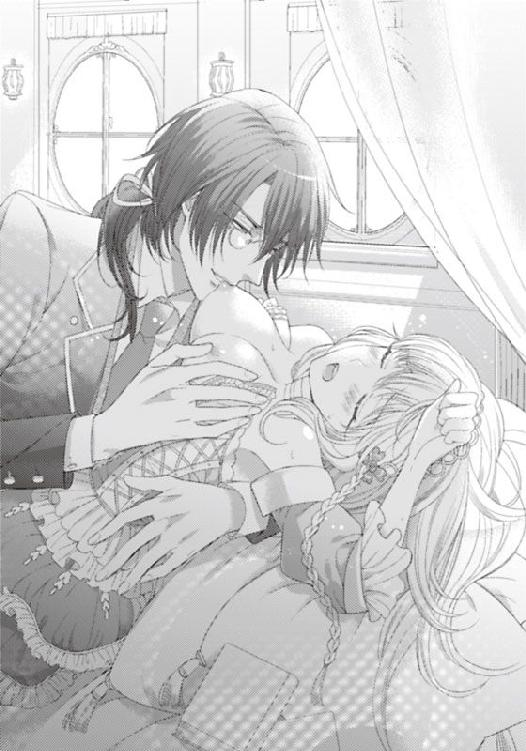
唇はむさぼるように白い肌を吸い上げ、そして歯を立てて甘がみする。
それがエスカレートしたのか、最初からそのつもりだったのか。彼の舌が、乳首を乱暴にたたきつけ、なぶり続けていたかと思うと、飢えた赤ん坊のようにそれを吸った。
強く吸われて痛みさえ覚えかけたライラだったが、顔をしかめただけで容認する。
いつしか痛みさえも快楽の一部になっていたのだ。
それが愛の行為であれば、痛くても平気だった。
痛みに代わる深い愛を今得ていると思えば、言いしれぬ従属感さえ覚えてくる。
痛みがかえって心地よい。
ふっくらと爛れたように赤く色づいた乳首は、ねっとりと濡れ、いやらしく輝いている。もっといじって欲しいと懇願しているようにそそり立つ。
「ああ、もっとして欲しそうですね」
そんなようだから、スイズルにすぐに気づかれた。そしてまた彼の舌先でころころと先端が転がされ、押しつけられて、乳輪に沿って尖った舌先がいたぶり続ける。
「あ......、ああ......」
押し殺した声が、快感を漏らしていく。
「お漏らしですか？ もう、ですか」
いつしか、ライラの足の付け根がしっとりと、そしてすぐにぐっしょりと濡れていた。
「あ、ぃや......恥ずかしい......」
「シルクの布がすっかり汚れてしまっていますね。困ります。こんなに淫らなお体では」
「───っ！」
恥ずかしさで、顔から火が吹きそうだ。
「ここまで、淫らなお嬢さまにした覚えはないのですが......」
「スイズルが......してる......のに......」
「なんでしょう。今何かおっしゃいましたか？ お嬢さま」
人をこんなに熱くさせておきながら、スイズルはその肌も声も表情さえも冷えたままだ。
「あなたが......私を......こんな......こんな身体に......こんないやらしい身体に......」
なじるように訴えながら、ライラは足をもじもじとこすり合わせた。
彼の指先が、舌先が離れると、寂しくてたまらない。
もっと欲しくて、たまらなくなる。
「もっと、して欲しい？ そうおっしゃるのですね？」
スイズルは、涼しい顔で聞き間違う。
嫌がらせだろうか。こんな言葉、こんな近くで聞き間違うはずがない。いくらライラが喘ぎ声で、はっきりと言葉を告げていなかったのだとしても、ここまでの曲解は論外だ。
「い、いや......」
起きあがろうとするライラの身体を、スイズルが強い力で押さえつける。
「もっと、ですか？ お嬢さま。私はお嬢さまのご要望に従います」
「いや......やめ......」
「〝もっとひどくして欲しい〟......ですね。承知しました」
スイズルの男根がいつしかライラの双葉をなでつけ、ぬちゃぬちゃと音を立てている。
挿入される前の前技だ。そしてすぐ、めりめりと音が立つほどに硬くそそり立った熱い棒がライラの中を侵してきた。
それはあまりに硬く太くて、まだ処女のライラにはとてもすんなりくわえ込めない。
「あ、あああんっ！ あう！ ふ、んんぁ......んっ！」
必死にのけぞり、それから逃れようとするも、スイズルがしっかりと太ももを押さえつけ、大きくそこを割っている。秘芯が見えて、肉塊にこすられるたび、快楽が、そして奥の肉襞を貫かれるたび苦痛がライラの身体を襲う。気持ちよさに蜜があふれ、その蜜は肉棒の挿入を少しでも楽にしようとするかのように陰門へと流れ落ちる。
ぬちゃぬちゃと激しい淫音がライラの耳を襲い、恥ずかしさにいっそう蜜が滴る。
「あ、ああ。いやあぁ......んっう」
「いい声です。こんなに色っぽく啼かれては、どんな男もお嬢さまの虜ですよ」
「あ、ああ......あなた......も？ スイズル......」
汗が肌に滲んでくる。身体が熱い。貫かれている芯はもっとひどく、焼けるようだ。
「ええ、もちろんです」
「ほ......っ、ほん、とう......に？」
喘ぎながら、激しい熱に耐えながら、スイズルの背中に爪を立てながら尋ねる。
「本当です。何度でも挑みたくなるほどそそられますよ、お嬢さま。ほら」
ぐぐっと一度に奥深くまで推し進められた。細い肉体の、まだまだ調教されていない細い膣道は、少しのことでも痛みと快楽の両方を敏感に感じ、悲鳴を上げる。
襞をこすりながら少しずつ奥に、しかも腰を激しく小刻みに振り続けるというテクニックを駆使され、強い刺激を与えられて、ライラはどくどくと蜜をこぼす。
その滴る蜜と、彼の下半身の振動が、部屋中にくちゅくちゅと激しい隠微な音を立てて、ライラは恥ずかしくて白い肌を赤く染めた。
「こんな......音......恥ずかしい......」
「それも、お嬢さまがいやらしいからですよ。もう痛みより気持ちよさが増していますね」
スイズルの言葉は当たっている。
気持ちよくて、蜜がこんなにあふれている。
ふさがれていてなお、これだけ滴って来るのだから、抜かれたとき、どうなるのか。
「ぬ、抜かないで......ね。もっと......ずっと入れて......ひどく......してね......」
「ええ。あなたなしでは、私はもういられないのです。お嬢さま」
体内に暴れまくっている巨大な肉棒は、熱く、痛いほど硬く熱いのに、スイズルの肌はやはり冷たく感じる。
「いき......ますよ」
喘ぐライラの耳元に、低い囁きが漏らされる。それまで小刻みだった抽挿が、突然えぐるように大きく強くなって、ライラの腰はスイズルの腿の上で飛び跳ねんばかりに突かれた。
「あ、ああ......んっ！ ひ、ぅあああああぁん......っ!!」
ぐいぐい突かれて、萌える肉襞が、こすられ突かれてびくびくとわなないている。
気持ちよくて気持ちよくて、ライラのそこはスイズルのものを堅く締め付けからみつく。
「もっと、可愛く啼いてください、お嬢さま。どこを突きますか」
「もっと......もっと、そこ、そこ、そこよ......ああ、あああっ......！」
細く絞った膣壁を、スイズルの猛った長剣が深く激しく突きまくった。
卑猥すぎる音も気にできないほど、ライラは真っ白な恍惚の世界に行きかけている。
「ああ、あああ！ あん！ スイズル......スイズル！」
激しい揺れは、ライラの硬めの乳房さえ、痛いほど上下に揺らし、スイズルの身体にこすられて赤く立ち上がっていく。
「───いきます」
今度こそ、最奥に突き上げられたその先端から、スイズルの欲望の固まりが放出された。
ぐぐっと、彼の腰が、ライラの腫れたように熟れている双葉を押しつけ、淫芯にまでこすりつけられる。
「あ、ああっ！ あふ......んっ！」
ライラも喉をそらして、ぶるぶると電流が走ったような激流の快楽に全身を震わせた。
硬直していた身体が一気に弛緩する。
スイズルの身体も、一時ライラにのしかかるように倒れかかったが、まもなく、腰を少し動かしてライラの肉を犯していた雄の刃を一気に抜いた。
「あああああっ」
一度放出されたと言うのに、まだまだ、ライラのそこを強烈に刺激できるほど激しい雄は、一度抜かれて、その瞬間に様々な欲望と愛液とが混じり合った白濁が、乙女の太ももに噴出される。
どぴゅん、という音が響いて、淫らな液体が下腹部を、足を濡らした。
シーツもぐしょぐしょに汚れてしまって、ライラは羞恥心に濡れて目をそらす。
「お嬢さまのここは......すごいですね」
スイズルは意地悪なのか、心底の賛辞なのか、ライラの陰門を妖しい指先でなぞりまくり、再び愛液を滴らせた。
あんなに熱く燃えたのに、まだ、ひんやりとさえ感じられる、美しい指先で───。
４ 姫君は調教されて華となる
「ステージを重ねるごとに美しくなりますね。ライラ嬢は」
「色っぽい表情をするようになった。腰つきも......色っぽいかな」
客席からそんな声が聞こえるようになっていたのは、きっとスイズルの毎晩の激しい調教のおかげだろう。
恥ずかしいような、すこしだけ褒められて嬉しいような。複雑な気持ちで、ライラはステージに立ち、足を上げ、短いドレスで開脚し、腰を振って踊り続ける。
でも、肝心なフェイ・グランが最近ライラのそばにいない。
忙しいのか姿を見かけることもない。
「どこにいるのかしら......まさか、宝物庫とか、噂の図書館？ それともこっそり陸に上がってまた貴族の宝物を奪っているとか？」
それはあり得ないことではない。スイズルの調査では、彼がクルージングに出れば、その寄港地で、その時期まず六〇％の確率で大貴族が盗難に遭っているのだそうだ。
（彼が船にいない場合は、警備も手薄かも知れないわ。探索ができるかしら？）
スイズルは、今日もマデラ嬢のお世話に出かけていて、ライラはほったらかされている。
だから一人で密かに階上に行こうとしていたライラの前に、突然黒い影が踊りでた。
フェイ・グランの腰巾着の一人、カーネル・ラドル男爵が現れたのだ。
「これは、踊り子のライラ姫」
ライラは〝踊り子〟と呼ばれることにこそばゆい悦びを覚える。長年、ダンスパーティーに出向くこともほとんどなかったのだから、ある意味名誉的な呼ばれ方ともいえる。
きっと、ラドル男爵も自分が引きこもりで、本ばかり読んでいた非社交的な生活を送ってきていたなど思いもしないだろう。
だが、彼にとっては、ライラが踊り子であろうと、メイドだろうと、貴族の令嬢だろうと無関係なのかも知れない。突然、腕をつかんできた。
「ラドル男爵......さま？」
「この船の踊り子は、接待もしてくれるはずだな？ 個人的な接待...さ。なあ、来いよ」
「───あ、あの......」
個人的な接待。それはおそらく性的な意味のものだろう。
男爵は逃げようと踵をかえしかけたライラの腕を強く引いた。
ライラの身体は、ラドルの胸板に顔をぶつけるほど密着させられ、そして背中を押さえ込まれて、身動きを封じられる。
熱い息がライラの頬を、そしてアルコールの強い臭気が鼻を襲う。
「ほら、来てくれよ。お姫様。接待してくれるんだろう？ 部屋に来て、酒をついでくれよ。こんな服も脱いで、ステージの色っぽいドレスでさあ！」
肩に手をやったラドルは襟元を大きな指で、ドレスを裂いた。
絹のドレスは、小気味いいほどの音を立てて、びりびりと引き裂かれる。
ライラの鎖骨が、次いでしなやかな二の腕が覗き、たわわな乳房がぽろりと零れる。
「あ」
「ああ、いい体だ。さすが、あのフェイ・グランの気に入りだっていうだけのことはあるな。でも奴の部屋には入れないだろ？ この僕ですら入れない部屋だ。私室にはどんな女であっても入れないんだと。あの浅黒い肌の紫の目のディスラート以外はな。だからあきらめてオレさまの部屋に来いよ。この胸に、高額のチップをねじ込んでやるからさ！」
いやらしい、歪んだ笑みだ。
怖かった。でも、彼の腕は鋼鉄の武具のように、堅くライラの腕をつかんでいる。
ライラがどれだけ力を込めて逃げようとしても、無理な腕力だ。
「わ......私は、踊り子です。この船上で、お客様方の目を楽しませ、感動していただく踊りを踊ることがこちらに採用されたものの勤めだと......」
「がたがた理屈をこねるなよ。この船で雇われたからには、見た目がそれなりで、男の好みそうな若い女だということだけだろう。ダンスが下手だろうと、男が喜ぶ身体をしていたら、それでいいんだ」
「そんな......」
「逆に、ダンスが下手でも、おまえのように可愛い顔をして、胸をもませてくれる女なら雇い主はかえって大喜びだ。接待用の高級売春婦でいいのだから」
「───っ!!」
ライラは、あまりの言われように、憤然として男の腕にかみついた。
「いて！」
カーネル・ラドル男爵は顔をしかめ、悲鳴を上げる。
だがそれでライラを解放しはしなかった。しかも周囲に彼の仲間が集まってきてライラの身体を取り囲んだ。一人がワインボトルを片手にしていて酒臭い。酔っているのだ。
「生娘だという話は本当かもな。威勢がいい」
「放してください」
「おまえも、この船に乗り込んだからには、男相手の商売をするつもりだったんだろう？」
「私は......」
もしや、あのとき劇場の支配人がフェイ・グランに囁いたのは、こういうことだったのだろうか。年齢や、妊娠、恋人の存在などを訊いてきていたのは、ライラが処女かどうかを確認するためだったのかも知れない。
「この船の乗客は、みんな金持ちばかりだからな。病気持ちかも知れない、町中の売春婦などは好まないんだよ。フェイ・グランが、そこそこ育ちのいい、そして下手に男ずれしていない可愛い少女や美人、または身体つきのいい女を踊り子としてこの船に乗せるんだ。だから、この船に誘われた男たちは大喜びだ。フェイ・グラン様の誕生日パーティーだからといって、退屈な船上生活につきあわされるのはまっぴらだからな」
カーネルは、隣の男に耳打ちする。
「まあ、あんたはフェイ・グランの今回の切り札のようでもあるから高いだろ。いくらなら部屋に来る？ 一晩中たっぷり相手をしてもらおうか」
「私は......」
「金に困った落ちぶれ貴族だと聞いているぞ？ お高くとまるなよ」
いやらしい男たちに囲まれて、どう振る舞えば、ライラは本来の目的を早くかなえられるか逡巡した。
「───お金は......欲しくありません」
「ほう？ ではこの指輪か？ これはルビーでとても上等なのだぞ」
どうしよう、ライラは迷う。
この男爵に、もし本当にライラが求めているものの名を告げれば、それを手に入れて来てくれるだろうか。
そこまで自分を欲しいと思うか。フェイ・グランを出し抜きたいと思っているか。
「いいえ。エジプトのミイラや黄金を積んだまま沈んでしまったというカーミラ号の、先日、英国のオークションで落札されたという羅針盤。それと、古い聖堂の書物。アイボリーの箱に収められた、〝黄金の花園〟をいただけるなら、一晩中、お相手いたします」
「それは......なんだ？」
ミイラと羅針盤のことは、あの新聞記事の中でそんなようなことが書かれていたという、うろ覚えのもので、内心、間違ってないかどきどきしながら一か八かで口にした。
だから、ラドル男爵の友人がそう話に乗ってきてくれたときは心底ほっとしたのだ。
「ああ、新聞に載っていたな。確か五〇〇ポンドで落札された黄金でできたコンパスで、海底からサルベージされたばかりの品物だそうだ」
「ああ、なんだか嫌なことを思い出してきたぞ」
ラドル男爵が口をへの字に曲げる。
「カーネルも欲しがっていたのに、結局フェイ・グラン様がフランスの有名オークションで落札したのではなかったか？」
「フェイ・グラン！ あいつ、なんでもオレの欲しいものを奪っていく。腹立たしいにもほどがある」
うなるラドル男爵の口に、他の男が手を立てる。
「おい、彼に聞かれたら、海に落とされるか、寝込みを襲われるぞ。冗談でなく、フェイ・グラン氏は恐ろしい男だからな。敵対関係になったら、ラドルは確実に抹殺される」
だがラドル男爵は、かなり酔っていて気が大きくなっている。
「オレに何かしようっていうなら、こっちだって手を打つさ。あいつ、気に入ったコレクション蒐集のためなら、持ち主を政治的、金銭的に追いつめて、破産させてまで手に入れる恐ろしい男だぞ。俺の叔父も奴に陥れられ財産全部を奪われて、自殺したんだ」
「カーネルのその叔父さんも相当な悪だったからなあ。ちょっと同情できないよなあ」
酔っぱらった取り巻きが、へらへらと大笑いして言うのを、ラドル男爵は睨みつけた。
そして怒った口ぶりで、ライラの腕をきつく握る。
「くそ。ああ、じゃあわかった。おまえが欲しいといったもの、奴のコレクションにあるんだな？ なら奪い返してやる。絶対に！ だが、時間がかかる願いだぞ」
「実は、この船の中に積まれていると聞いたのです」
「この船に？」
「数々のオークションでの戦利品、そして追いやった貴族の城からの略奪品などをコレクションしてはこの船のどこかにしまい込んでいるそうです。フェイ・グラン様は、お仕事柄、ご自身の主城にはおられないので、移動する船に宝物庫を作られて、そこにすべて収蔵していらっしゃるとか、お友達のカーネル様はご存じだとばかり思っておりました」
普段は友達の皮を被っているラドルだが、酔いが回っている今、実はフェイ・グランに敵対感を抱いているのをはっきりと表している。憎んでいるのだ。
「そうか、そうだな。そんな場所があるのなら、突き止めて、警察を呼んで家捜しさせれば、他の貴族から奪ったものも出てくるか」
「警察署長の叔父をたきつけて、フェイ・グラン氏の家捜しをしてもらったらどうだ？ あれだけ手広くもうけているんだ。いろいろあざといこともやっているだろうし、叩けばホコリの一つも出てくるって。そうしたら、カーネルの天下になるかも知れないし？」
同じく酔っている男たちは調子に乗りやすいカーネル・ラドル男爵をおもしろがってたきつける。
「だよな。そうなったらこのオレさまの天下だよな。奴のデパートも買収して、世界各地にどんどん出店してやろう。もう誰にもオレをフェイ・グランの腰巾着だなんて言わせないからな」
ラドル男爵は、〝取らぬ狸の皮算用〟を想像しているのか、にやにやと嬉しそうだ。
「おじさんに、伝書鳩でもとばせよ。警察の優秀な伝書鳩。この船にも乗ってるだろ」
「ああ、二十羽ほど乗ってるはずだ。だがフェイ・グランの私室のある階にいるんだよな」
「ラドル、おまえ、あんなにフェイ・グランに尽くしてついて回っているのに、私室にも入れてもらえてないのか？」
「ああ。ひどい奴だろ、フェイ・グラン。よし、なんとかディスラートを追い払って、フェイ・グランの秘密を暴いてやろう。そして奴が理不尽な方法で手に入れた宝物を、オレが奪い取ってやる。ライラ、おまえが欲しがっているものも、すべて手に入れてやる」
「本当ですか？ ありがとうございます」
ライラは嬉しそうに、可愛らしくほほえんだ。
そのほほえみに、ラドル男爵は、またいっそうめろめろになったらしい。
鼻息を荒くして、ワインボトルに手をかけた。
「昼間からあまり飲まれるとお体に悪いですから、ほどほどに」
どうやら、スイズルの考察は鋭い。
この様子なら、ラドル男爵はきっと騒ぎを起こすだろう。
そのとき、フェイ・グランにも警備にも隙ができる。スイズルとライラが、船内の宝物を探す絶好の機会になりそうだ。ならば今は早く、この場から離れた方がいい。
「さあ、そうと決まれば酒だ。ライラ、飲め。今度フランスに着いたら、あいつに紹介してもらうワイン醸造所。そことつてができたら、あいつの食料品店とデパートが買い付けている価格より少しだけ上乗せして、うちが独占販売してやろうと思ってるんだ」
「あの......私......ワインは......」
「なんだ？ 酔いが回って、ベッドに行きたくなってきたのか？」
ラドルがろれつの回らない口で口説くように、ライラの太ももに手を伸ばしてくる。
「きゃ」
「きゃ？」
「あ、の......いえ......。私船酔いで気分が......夜風に......当たってきます」
「オレに任せろよ。いいところに連れていってやるからさ」
薄暗い紫の光に包まれるデッキでは、他の客がいるのかすらわからない。
もしいたとしても、他の客のことには口出ししないのが、こういうところの鉄則だろう。酒の席で興醒めさせてしまうことは、きっと誰もが避けたいところだ。
ライラはひとりでこの窮地を乗り切らなくてはいけない。
（スイズル......やっぱりスイズルに行き先くらい行ってくるのだったわ......）
ラドル男爵の手が、ライラの足の付け根に下りてまさぐりつけてくる。下着の上から淫芯がいじられ逃れることができない。もう彼の玩具にされそうになったとき。
「おや。楽しそうだな。こんなところでなんの会合だ？ ラドル男爵」
いつの間にいたのだろう。突然背後にフェイ・グランが立っていた。
恐ろしい迫力で仁王立ちするフェイ・グランに、ラドル男爵は言葉もなく震えている。
「ライラ嬢。こんなところで油を売られては困るんだ。さあ、来い。ステージの準備をしろ。君だけだぞ」
「はい......すぐに。すみませんでした」
彼の腕に掴まれ、デッキから連れ出され、そして荷物のように荒々しく緋色の絨毯の上を引きずられた。ラドル男爵は慌ててどこかへ逃げていくのがちらりと見えた。
（───私......助かった......の......？）
だがやはり恐怖で歩こうにも歩けないほどだ。よろけながらも自力で歩こうとしたライラを、フェイ・グランが今度はそっと抱えて歩いてくれた。
「馬鹿だな。あんな奴らのところに行くなんて。それとも奴らに犯されたかったのか？」
突然、怒ったように言われて、ライラは驚き青い目で彼を見つめる。そしてさっきまでの恐怖と今の言葉の乱暴さに、目から大粒の涙をぽろぽろとこぼした。
「お、おい？」
驚いたのは、今度はフェイ・グランだった。あわてふためき、おろおろと今ライラから放した両手をどうしていいのかわからず右往左往している。
こんな姿を見せるなんて少しも思わず、驚いたライラの瞳からは涙も引っ込んでしまった。
「あの......」
「なんだよ。なんだ？ もう涙は止まったのか？ 脅かすなよ。まったくもう！」
フェイ・グランはライラが自分を見つめて来るのをうっとうしいと思ったらしい。ひょいと抱え上げて抱くと、そのままどこかへ連れ去っていく。
その行き先は、同じフロアで、すぐそこの管理室だった。
「ちょっとここで休め。ここは今は誰もいないから安心しろ」
フェイ・グランが器用に開け放った扉の中。室内入ってすぐの空間は、ソファセットに観葉植物、壁には城のある風景を描いたエッチングの絵画がかけられた明るい室内だったが、奥の磨りガラスのパーテーションで仕切られた奥の方は、壁に無数のランプが灯り、白い電源ボックスのようなものがいくつもかけられていて、機関室の一種のように物々しい。
電力や鍵の管理をしているらしく、壁には多くのキーボックスも覗いている。
ライラは、ここに誰もいないことが気になって、フェイ・グランの腕から降りるべきか否か、少々悩んだ。
「おい、俺はおまえなんか襲わないぞ。いくらでもちゃんとした相手がいるからな」
「それは私なんかですみませんでした。あなたが見込んで私をここに誘ったのに」
「誘ったんじゃない、あのときあまりに落胆していて、哀れだから船に乗せてやっただけだ」
「まあ、ひどい。今はがんばって人気の踊り子になっているのに、そんないい方って」
抱えられている腕から降りようと、ライラはじたばたと暴れまくる。
「わかった。わかったって」
ふと、ライラの手が彼の脇腹に当たり、そして手に生暖かな濡れた感触があった。
軍上層部の黒い上着だ、色味的にわかりにくいが、ふと目をこらすと血が滲んでいる。
「え？ あの、この血は......どうしたんですか」
ソファに下ろされるや否や、ライラは気になってフェイ・グランの上着をめくった。
白いシャツに深紅のシミが付いている。血の臭いが鼻を刺す。
「怪我をしているじゃないですか。いつ、どこでですか？ 船内で決闘でもしたんですか？ とにかく、いつものお付きのディスラートさんはどこに？」
「今、用事で出かけている。これは放っておけば止まる」
「でも、こんなに血が......」
ライラは、慌てて部屋から外に出ようとして、フェイ・グランに止められる。
「ディスラートがそのうち戻ってくる。どこにも行くな。命令だ。ここにいろ」
フェイ・グランの声は命じることに慣れているもので、抗いがたいものがある。
でも、ここで、この男と二人きりになるのは嫌だったし、この出血は放っておけない。ライラは、その声を無視して、部屋を出ようとしたのだが、さすが海軍船員を率いていた軍人の素早さで、フェイ・グランは素早くライラの身体に手を伸ばし、そして扉を閉め切った。
「何を......」
彼の暴力的な行動に、先日の、せっかく着飾って採用試験に臨んだドレスを引き裂かれた恐怖と恨みが蘇って来る。
「ここにいろと、命じたはずだ」
「嫌です。と申し上げました」
「たいした踊り子でもないのに、態度だけは大きいな」
「そういうことをいうと、ここを蹴りますよ？ キックはかなり練習させられましたから」
ライラも、侮辱され、つい真っ正面から思った言葉を口にする。
だが、さすがにこの獅子のように強そうで凛々しくたくましいフェイ・グランとはいえ、怪我人に言うべきことではなかったと思い直し、目の前にいるフェイ・グランの顔をおそるおそる見上げる。スイズルと話すときより、さらに目線を高くして、その黄金の髪の赤毛の部分を見つめて、染めているのではなさそうだと変なところを確認してから、表情を見つめる。
予想外の痛々しい顔つきだった。男らしい眉は眉間に寄せられ目はゆがんでいる。はっきりとした口元はへの字。痛みに耐えている顔つきだ。
青ずんだ白色のズボンに、鋲飾りがずらりと並ぶロング丈の革ブーツ。
いつも通りの彼の姿だ。だが、その胸元はボタンがきちんとかけられておらず、血に染まった白いアンダーシャツが見える。
ライラは、どうしようか逡巡したものの、ここには自分しかいないのだからと、彼の上着をさらに開き、そしてシャツを引き裂いた。
「おい。おまえは、男を脱がす変態か」
「何を言ってらっしゃるのでしょうか。フェイ・グラン......様、怪我の手当です。これは......切り傷と打撲ですか？ いったいどこで。ろくに手当もしてないじゃないですか」
たくましく日焼けした肌だったが、脇腹に青っぽく、どす黒い、打ち身のあとがある。そして鋭いもので刺されたのか、脇腹が裂けている。
「縫わないと、血が止まりませんね」
「放っておけ、これでもずいぶん収まってきたんだ。息を止めて、あと二分もこのまま動かなければ傷も塞がる」
本当だろうか。いや、たぶん嘘だろう。
「この船のお医者様は？ 医務室はどこでしたか？ 確かこの上の階の......グランドデッキから下の階で......でも、歩くとまた出血しますね。私お医者様を連れてきますね」
「よけいなことをするな。ライラ」
「でも......死にますよ？」
「不吉なことを言うな。俺は丈夫だ。それに神が俺に託した使命があるからな。そう簡単にはまだ死なない」
「使命ですか？ それはどのような？ まさかこの接待クルーズではないですよね」
「違うが、あながちはずれでもない。とにかく、ここにいろ。よけいなことをしたら、ここから海に放り込むぞ」
「それは困ります」
「ではじっとしていろ」
そういわれても困る。この人は怪我をして血の臭いをぷんぷんさせながら、どうしてこれほど偉そうだろう。血の臭いにライラが気分が悪くなって、青ざめてくる。
もともと出不精で、馬車の乗り心地もそれほど好きではないのだが、船も揺れると苦手となる。そのせいか、今血の臭いでライラはかなり気分が悪くなっていた。
ソファにもたれかかるようにして、吐き気を押さえる。
「おい。大丈夫なのか」
「は......い」
「ああ、そこに座れ。ここで吐くなよ。いいか」
もしかしたら、案外優しいところもあるのかと思いきや、次の言葉が台無しにする。
「吐いたら掃除が大変になるからな。それに部屋も匂う」
「心配なのはそちらですか。大丈夫です。ほとんど食べていませんから」
「なんでだ」
「緊張して......」
それに外出歴の少ないライラは、長年仕えてくれている自分の城のコックが作るもの以外、今ひとつ、味付けになじめなかったのだ。とはいえ、そろそろそんなことも言っていられないほど飢えてきていたのだが。
「何か喰え。そうでないと踊り子としての体力が持たないぞ。サービス業としても失格だ」
これはきっとライラのことを心配してくれているのではなく、自分が接待用に雇った少女が、ろくに働けないことを危惧しているに違いない。
「───あの、その傷は一度縫った傷でしょうか。それが開いたんですか？」
「ああ、わかるか」
「なんとなく。でも昨日、おとといあたりの新しいものですよね」
「いざこざで......刺された。卑怯にも密航しようとした盗人がいて、そいつと戦った。不意打ちだったから、不覚にも怪我をしたが、相手は死んだから、まあよしとする」
「殺したんですか......。警察に......」
「この俺様の豪華客船に密航した輩だぞ。死んで当然の報いだ」
噂に違わない短気で流血沙汰が好きで、喧嘩早い、この男なら、そう言いそうだ。
「ではあなたのこの怪我も、もしかして当然の報いなのですね」
「なんだと？ いちいち気に障る言い方をするな」
「───息を止めていないから、二分たっても血が止まっていませんね」
「───おまえがいるからだろう」
「あなたがここにいろと命じたんです」
「そうだったな。だが、生意気な口をきけとは言った覚えはないぞ」
「───」
「今度は黙りか。まったく、素直じゃないな。だから......」
「〝だから〟？」
その言葉の次に何が来るのか身構える。
だが、フェイ・グランは以外にも照れたように頬を赤らめ、口ごもった。
『〝だから、家が落ちぶれた〟？ それとも〝だから踊りが下手なんだ〟？ それとも、〝だから男がいないんだ〟？ どれかよね』
「あのスイズルとかいう付き人の方が、素直で何でも器用にできそうだな」
「私もできます」
ライラはガーターベルトをはずし、そこに取り付けてあったポーチを取り出す、その中には、何本かの液体の入った小瓶と、薬草が粉薬になっている小さな銀ケースが十個ほど入れられているのだ。
その中から一つの液体を取り出すと、ライラは自分のペチコートを裂いて、それに液体をしみこませる。そしてそれをフェイ・グランの脇腹に押し当てたのだ。
「おい、痛いぞ。毒薬でも塗ったのか？」
フェイ・グランは、その湿布薬を取り除こうとあがきながら、男らしい眉や口をまた歪めて、呻いている。
「そんな！ これは血止めで消毒薬です。我が家秘伝の薬でよく効きますから」
ライラはフェイ・グランの両手を押さえつけ、彼の大きな手が湿布をはがさないように必死だ。
「おまえの家の秘伝だ？ ききっこない。薬屋じゃないのだろう？」
「ええ。普通の城です」
「落ちぶれて、それから怪しい薬草栽培や薬品を作っていたのか？」
フェイ・グランの顔がどんどん不愉快そうになっていく。
「違います。でも、薬作りのうまい執事......若年寄りがいましたから」
「そんな素人の薬を俺に使うな。実験台か」
吐き捨てるように言って、腕を払いのけるフェイ・グランに、ライラはとうとう業を煮やした。
「あなた......私が親切にしてるのに、この薬だって。陸で薬草を煮出して抽出しないと手に入らないのに......あなたなんかに使ってあげるんじゃなかったわ」
もともと、失礼な奴だ。この男が城の宝を盗んでいった可能性が高いのだ。これだけ野蛮で、暴力的で、そして人に失礼を働く男ならば、盗みだって平気でするだろう。そして私服を肥やすために、金持ちの繋がりを保ち、こんな接待クルージングも行うだろう。
もしや、こういう浪費をするために、よその宝を次々盗んでいるのかも知れない。そう思うと、彼の豪華な上着すら、憎たらしくなってくる。
この船の踊り子に支給されている毎日変わる新しいドレスや靴といったものも、もしかしたら、ライラの城の宝〝黄金の花園〟の記述から、金鉱山を掘り起こしていて、もうけている金で買われているのかも知れない。
「あの、では失礼します」
「おい。ライラ」
「なんでしょうか」
この男に、自分の名前を呼ばれるのも嫌だ。この豪華客船には潜入のコードネームを用意して、それで書類を作ればよかったと、今さら後悔しても遅い。
「食事を......食べていけ」
「結構です。これからダンスの練習をするのに、思うように動けませんから」
フェイ・グランは、珍しく、一瞬押し黙った。
さすがに愛想がなかっただろうか。
スイズルに、この船の権力者には気に入られるように言われたばかりだ。フェイ・グランは、最高の権力者だ。しかも、宝物庫を持っていて、その入り方や鍵を所持しているのだし、ライラが行ってみたくてたまらない、大量の蔵書がある図書館、〝グランドライブラリー〟をこの中に隠し持っているかもしれない。
今、フェイ・グランに気に入られるような言葉の一つも言えば、図書館の中にくらいは入れてもらえるだろうか。
何か気の利いたことをいえるだろうか。
女性が嫌いではないとスイズルの情報だった。だからといって、ここでキスをするとか、絶対に無理だし、抱きつくなんて、わざとらしいし、やはり無理だ。
ライラはこびる手段を真面目に考えてしまった自分を恥じ、顔を染めて部屋を出る。
だが、またしても男の腕が細い身体にのび、立ちはだかったのだ。
「食事を食べていけと言ったぞ。どうしておまえは主の命令を聞けないのだ？ クビになりたいのか？」
「食事をとるかとらないかで、クビだなんて、労働法に違反しています。昔はともかく、最近は、そういうことを扱う弁護士や団体も......」
図書館で得てしまった、無駄な知識を、つい、ムキになってまくし立ててしまった。
ライラはまた落ち込んで、うつむいたまま、苦悩する。
「おまえはよけいな知識だけは持っているようだな」
「起きあがって、息をしていると、また出血が止まらなくなりますよ。私がここに粗相をするより先に、この部屋やソファが血だらけになって、このお部屋が使えなくなってしまうのではないでしょうか」
彼がライラの前に立ちはだかっていると、脇腹の血が見えてしまう。匂いでライラはまた気分が悪くなってきた。
「おまえ、座れ。顔色が悪いぞ。それでダンスの練習など無理だろう」
「ダンスを練習して、マシな踊り子になりますので、ご安心ください」
「稼ぎたいのか」
「はい？」
「そんなにこの船で稼ぎたいのか？ それとも、他の多くの使用人と同じように、玉の輿に乗りたいのか？ 独身貴族の男に見初められて、身体を気に入られて、妻になる気でここに乗り込んだのか」
「───違います......」
「では、羽振りのいい大金持ちの愛人になるつもりか？ 六〇歳ほどだが、アラブの石油井戸を持っていて、何百回生まれ変わっても使い切れないほど財産持ちの男がいるが。紹介して欲しいか？ おまえがダンスで下着を見せながら、客席を回るときその男のテーブルを回れるように手配しようか」
「───お話はありがたいのですが、結構です。私、ダンスを練習して、お客様に喜んでいただきたいですから」
「───本当に甘い女だな」
また、気に障る言い方をされた。
世の中に嫌な男は山ほどいるのだろうが、このフェイ・グランは、ライラの感性と本当にそりが合わないらしい。
さっきから、かちんと来ることばかり言ってくる。
「この船に招待されて来ている男は、壇上の華やかなダンスを見るよりもっと楽しみにしていることがあるのだ」
「もしかして......図書館に入れていただくことですか？ グランドライブラリー」
「は？」
虚をつかれた顔をした。その純朴な顔が、たくましく雄々しく獅子のごとく美しいフェイ・グランに少々似つかわしくなかったので、ライラはつい、彼の顔をまじまじと見た。
「あの、こちらの客船には豪華な図書館が併設されていて、フェイ・グラン様のお気に入りだけが自由に出入りできるのだという噂が......」
彼がこれほど唖然とするからには、この船にはそんな図書館などないのかも知れない。
そもそも、この粗野で短気で怒りっぽいところのある武人が、誰もが度肝を抜くような豪華な巨大図書館を作っているとは思えない。
彼がそれほどの費用と場所を費やすならば、銃の試し打ちの場とか、フェンシングの試合が一度に二十人でできるような試合場などだろう。
「そんなところに入りたい人物がいるわけがないだろう」
「ではあることはあるのですか？」
「ああ、ある」
「どこにでしょうか」
「噂では〝俺が気に入ったものだけが自由に入れるグランドライブラリー〟なのだと言ったな？」
「はい......確か」
「その話はほぼ百パーセント当たっている。だから、気に入ったものでなければ場所も教えたくはない」
フェイ・グランはけんもほろろに言い放って、ライラの腕をつかむと部屋の中に引きずり込んだ。
「あの......どうして図書館などあるのですか？」
聞くべきはそういうことじゃないはずだ。
ここでせっかくフェイ・グランが、ライラだけに様々なことを教えてくれているのだから、今、聞くべきことは宝物庫があるかどうかだ。そこに様々なところから蒐集したコレクションをしまい込んでいるのは本当か、と聞かなくてはいけないはずだ。
しかも各国の大きな有名オークションでも、書物や古地図や、コンパスなど、海賊が求めるようなものを集めているのかさりげなく聞かなくてはいけない。それが聞けたらば、きっとスイズルに褒められる。
「おまえは図書館が好きなのか？ 何か調べたいことでもあるのか？ もしや、俺に塗り込んだ毒の解毒剤を探そうというのではないだろうな？ 俺が死んだら、おまえはすぐにでも俺の側近たちに海に投げ込まれて、フカのえさにされるのだぞ」
「───毒ではありませんから」
「ああ、違うな」
フェイ・グランはライラの動じない態度を見て、提案を覆す。
「このままの姿で放り込んでも、しばらくはフカが見つけられないな。甲板で刻んで五等分にしてから海に投げよう。血の臭いでフカがすぐにやってくる。おまえも、生きながらフカに食われるより、死んでから喰われた方が心地よいだろう」
「───心地よくはないと思います。どのみち殺されるのですね」
「この俺を裏切るもの、嘘つきは死刑だからだ。この船に乗船するとき、使用人の心得を読んだだろうな。ディスラートが手渡したはずだ」
「踊り子読本と、使用人の心得は確かにいただきました」
「それに記載してあるが、この俺や側近たちを出し抜こうとしたり裏切ったり、客船の備品を盗もうとしたら、即、死刑だ。その罪の重さによって、甲板にローブで縛り付けて鳥のえさにするとか、海にロープで引っ張りながらおぼれさせる、船底で飢え死にさせる。最地下のボイラー室で燃料として燃やす。など、決めるからな。楽しみにしておけ」
「はい......」
「それで、おまえがどうも痩せてきているのは、食事が口に合わないからか？ それとも船上だからか？ 英国風の香辛料や食材になじめないのか、どれだ？」
フェイ・グランは、突然料理のことを口にして、ライラの腕を枷のようにしっかりとつかんだまま、改めてソファに座らせた。自分がどっしりと座るその隣に、だ。
もうこれは彼の言うことを聞いてからでなくては、ここから解放はされないだろう。
ライラはあきらめの境地で、されるがままになっている。
「どれも、全部......当てはまっている気がします」
「そうか。ではおまえの出身地域の食材でおまえ用の料理をこれから出すことにする。それでいいな？ ちゃんと食べるだろうな？」
「え」
すごむように見据えられて、ライラは頷くしかない。
「なんだ？ 今の」
「あの、はい。いただきます」
「俺が言うから無理矢理に言うことを聞くと言った感じだな。そうだな？」
「いえ。まさか。こんなにしていただいて、申し訳なくて......」
「気にするな。これくらい、たかが知れてる」
「でも大変ではないですか？ 私だけ別のメニューだなんて」
「それほど大変ではない」
それは、作るのがフェイ・グランではないからだ。作るのは料理長や料理人だ。
「あの北地域の料理は......俺も好きだ。山羊のチーズ羊のチーズ。牛のチーズ。アルパカのチーズ。ラム肉や鮭のバター焼き。ギネスシチューも食べるよな」
「はい......」
アルパカのチーズなど食べたことはなかったが、これ以上よけいなことを言って、この部屋から出られないと困る。ライラの城では食さないが、もしかしたら農民たちは食べているのかも知れない。アルパカは結構な巨体だ。
「───適当な奴だな」
「え」
「アルパカのチーズなどあるものか。どれだけ珍味だよ」
彼はもともと泰然自若とシルクの織り地ソファに座っていたが、より長い足を広げて、腕を背もたれに大きく広げてふんぞり返った。
「珍味......ですよね。我が家では滅多に食べられなかったですけど......」
「好きなのか？ 喰ったのか？」
「え？ ええ。ほんの少ししかとれないので、ショットグラスに一杯ほど」
「ほほう」
その反応にライラは困った。
面白がられているのだろうか。フェイ・グランが微笑しているようにも見える。
そして彼が少し窓の方に視線をやって、そのときにディスラートが大きな銀のトレーを携えて戻ってきた。
フェイ・グランの言うとおりに、ライラのテーブルの前にトレーごと置かれた。
「さあ、食べろ。ライラ」
目の前で銀の蓋が開けられると、とたんにいい匂いが鼻先まで漂ってきて、ライラは一も二もなくトレーの中のフォークとナイフを握りしめる。ギネスシチューにソーダブレッド、とてもいい匂いだ。
アイスイル城で出てきていたのと同じアイリッシュ料理だ。
ライラはかりかりに焼かれているパンにバターを塗って口に運ぶ。
とてもおいしい。
固形物をちゃんと食べるのは何日ぶりだろう。
ふっくりと柔らかで、ジューシーな鮭のムニエルをほおばって、そして付け合わせの黄色いジャガイモと、マッシュポテトを口にした。ジャガイモはライラの国ではずっと主食とされている。
ライラの父の治める地方のジャガイモはとても黄色く、胸焼けするほどぽこぽこだ。
そしてギネスビールと真っ赤なトマトソースで煮込まれた、鶏肉と羊肉。
あまりにおいしいので、そこにいるディスラートとフェイ・グランの視線も気にしないように食べていたライラだったが、やはり隣のフェイ・グランの存在感は強い。
「あの......フェイ・グランさまは召し上がらないのですか？」
「ああ。豪快な食べっぷりだと思って見ていた。こっちも食べた気になるほど、豪快だ。俺の前でそこまで豪快に食べた女は初めてだ。男でも萎縮してしまうからな」
「あ......」
思わず、手にしていたフォークとナイフを白磁の大皿の上に下ろした。
「あの......すみません。これは元々フェイ・グラン様のお食事ですよね」
「なんだよ。せっかくいい喰いっぷりを見て心が爽快だったのに、やめるなよ。足の裏がむずがゆくなるだろうが」
「あ、あのでは、フェイ・グラン様も......召し上がりますか？」
ライラは、そういって、フォークに刺した羊肉のトマトソースを彼の口元に差し出した。
「は？」
「どうぞ。これは口を付けていませんから大丈夫です。私、変な病気は持っていません」
フェイ・グランは、しばらく怒ったようにライラを見ていたが、ややあって笑い出した。
「おまえは本当におもしろい奴だな。あの日、あの採用試験のとき、偶然俺があの支配人の前を通りかかって本当によかった」
「あ、はい。ありがとうございます」
「というか、踊り子の採用試験だというのに、あの貴族御用達の劇場の表玄関から堂々と入ってくるのは非常識なんだが、まあ、おまえなら仕方ないか。身分は貴族なのだしな」
ライラもとまどう。
この男はこんなに豪華な見た目を持ち、大金持ちでいながら鼻持ちならない危険な男だ。いきなり人の一番のドレスを引き裂き、キスをした破廉恥な男だ。
今だって、踊り子に下着同然の衣装を着せ、客に見せて、男たちにこびを売らせて、金儲けをしようという、悪魔と取引しているような悪い男だ。
おそらく、日々盗賊まがいのことをして成り上がり、豪華客船で豪遊し、そこで作ったコネで私腹を肥やしている男。曲がりなりにも貴族であり、軍人でありながら、道徳的な観念の抜け落ちた男。
なのに、こうして踊り子に気を遣い、屈託なく笑う姿など誰が想像できるだろう。
「あ、あの、どうしますか？ ソースが垂れてきそうですけど」
赤いトマトソースが、銀のフォークを伝って流れ出している。男の膝に落ちれば真っ赤なシミができるだろうし、ソファに落ちても怒られるに決まっている。
角度を必死に調整しながら、フェイ・グランの方にまだ差し出していたライラの手に、赤いソースが伝い落ちた。
「あ」
ライラは、喉の奥に詰まった声を立てる。
目の前に唇を持ってきていたフェイ・グランは、それを気にせず、フォークの先に刺さった羊肉を平らげて、満足そうだ。。
そして、ライラがトレーの脇に置かれてた白い布ナプキンで手を拭こうとしたとき、その手をフェイ・グランがつかんで自分の唇に持って行ったのだ。
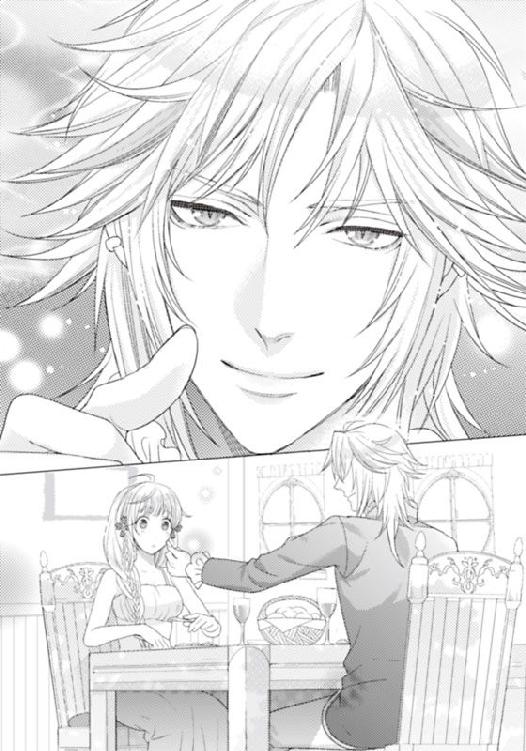
「え......？」
ライラが唖然としている隙に、フェイ・グランはライラの右手の人差し指についた赤いトマトソースを舐め取っている。赤いソースがなくなっても、ライラの人差し指を丹念に舐め、そして口腔に収めていく。
ライラは、彼が何をしているのかわからない。よほど飢えていたのだろうか。食べたくて食べたくてたまらない料理をライラが横取りをしてしまっていたから、一口食べて、抑えが利かなくなってしまったのだろうか。
「あの、この残りのお肉とソースも......どうぞ召し上がってください」
驚きながら、やっとそうフェイ・グランに申し出る。
だが、フェイ・グランは皿にチラリと目をやっただけで、ライラのもう片手にまで手を伸ばす。彼が握り取ったのは、今のフォークから流れたトマトソースが垂れ、それを受け皿代わりにしていたライラの掌。掌に落ちたトマトソースまで、フェイ・グランは舌を這わせて舐め取ってしまった。
「くすぐったい......っ」
思わず肩をすくめ、舐められた手を引っ込める。だがフェイ・グランはその手を放そうとしなかった。ライラの両手が大きな、長い指を持つ手に押さえ込まれ押し倒されたのだ。
「あ......っ、あのっ」
ライラは押し倒されて身体の上にのしかかかるフェイ・グランの顔を見上げて、これがどういう行為なのか考える。
まさか、彼の食事をほとんど奪った罪で、ここで切り刻まれて海に放り投げ込まれるのか。それとも、何か気にくわないことをしたのか。それとも──......。
「あの」
「ライラ......。おまえは、とても美味そうだ......」
「───っ！」
彼の空腹が、限界ラインを超えたのだ。さっきライラの指をしゃぶったり掌を舐め回していたときに、異常に気づくべきだった。
ライラがフェイ・グランの身体を押しのけようともがくが、どうしたって逃れられない。
「ちょっと......まってください......私......食べても生肉です......おいしくないと思います」
ディスラートは、助けてくれるでもなく、フェイ・グランを説得してくれるでもなく、興味がなさそうに部屋を出ていってしまった。
あとに残されたのはライラとフェイ・グランだ。
彼の腰の剣帯からいくつか下がる剣の鞘が、些細な動きでぶつかり合って鳴っている。
「あの......。フェイ・グラン様」
だがフェイ・グランは酔っぱらっているのか、話を聞こうとしてくれない。
まさか、空きっ腹にアルコールを入れたのだろうか。ギネスシチューで酔ったのか。そういえば、脇腹の傷は大丈夫なのか。それともこの豹変は、ライラの湿布した塗り薬が何か副作用をもたらすもので、それで彼がこんな風に凶暴になってしまったのではないか。
ライラは青ざめた。もし、薬のせいで死んでしまったら、どうしよう。
「スイズル......！ スイズルに私......！」
「またあいつの名か......やはり気に入らないな。スイズルは......部屋を変えよう」
「え？」
ライラは、フェイ・グランの身体を押しのけようとしているうちに、見覚えのある風景画を目にした。
それはアイスイル城だ。彼の肩越しに見える、あのエッチングで描かれていた絵画に描かれているのは紛れもなくアイスイル城だ。
（どうして......、どうしてあのお城が？）
有名な城だということだろうか。有名は有名だろうが、この豪華客船で、フェイ・グランの船になぜ、この絵がかけられているのかわからない。
「あの、フェイ・グラン様......、あの城は......あの絵画はどうしてここに......」
フェイ・グランは、ライラのドレスを脱がせ、今コルセットのリボンに指をかけている。
「ライラ......俺はずっとおまえを......」
フェイ・グランが、それまでにない熱い目差しでライラを見つめ、真剣な声で囁いてくる。そのとき。
「ライラ様。こちらですか？」
ライラの名を呼ぶ声が、部屋の外から突然聞こえ、耳元で囁く声と重なり合った。
外から扉が大きく開く。現れたのはスイズルだ。
「ライラ様！」
スイズルは部屋の中に足を踏み入れ、そして背を向けていたフェイ・グランの身体を強く押しのけるとライラの身体を救い出す。ライラはようやく起きあがりそして、突き飛ばされて顔を歪めるフェイ・グランの様子を見た。
「スイズル！ 彼、怪我をしているの......」
「ライラ......ここにいろ。オレのそばにいろ。そうしたら、おまえが見たがってるライブラリーに入れてやってもいいんだぞ」
「え......」
それは、とても魅惑的な言葉だった。
だが、スイズルはそれを許さない。
ライラの腕を取り、フェイ・グランに強いまなざしを向ける。
「ライラ様を、お部屋に引き取らせていただきます」
そうして一礼をすると黒髪をなびかせて、ライラを抱きかかえて、颯爽と去っていく。戸口で今戻って来たディスラートと鉢合わせるが、スイズルは道を譲ろうとはせず立ちはだかったままだ。
「ほら、ディスラートがせっかくライラのための、ココアを持って来たのにな」
主人とライラたちの、そんな状況を見ても、ディスラートは動じない。ただ、手にしているココアの載ったトレーをどうすべきか悩んでいる。だが、
「スイズル君。これを持っていき給え。ご主人が彼女のためにと作らせたものだからな」
浅黒い肌に、アメジストの目を鋭く光らせて、ディスラートはスイズルの肩に、そのカップを乗せたのだ。
「君の肩は、なかなかいい安定感だ。では部屋でゆっくり飲むといい」
「───どうもありがとうございます」
ディスラートは、侍従の地位にあるのだが、フェイ・グランの一番の側近だ。この豪華客船の主であるものの側近とあれば、自分の方が多少は下手に出るべき相手だと、スイズルは判断したのだろう。不作法をされても怒りもせず、反抗もせず、密やかに礼を述べた。
「スイズル。ちょっと待って。私が今......カップを持つわ」
ライラはディスラートがそのまま去っていってしまったせいで、スイズルの肩に乗るココアのカップを押さえようと手を伸ばす。
「大丈夫。結構ですよ。お嬢さま」
「でも、絶対にこぼすわ。そうしたら火傷してしまうわ」
今でも、カップはかなり熱いはずだ。
「スイズル......ねえ、お願いよ。私に持たせて......」
「うっかりもののお嬢さまが熱いカップを手にした方が、ずっと危ないと私は思うのですよ。これが私に課せられた使命です。お気になさらず」
気にするなと言われても、無理だ。
スイズルはライラを抱きかかえている。なのに肩にココアを載せ、それで階段を下りていくのだ。想像を絶する集中力で、ライラの不安に満ちあふれている青い瞳にそのココアの波は、ほとんど動いていない。
揺らさず、こぼさず、廊下を歩き階段を下がって、ライラとの部屋に到着したのだ。
「スイズル！」
「さあ、どうぞココアを召し上がってください」
「スイズル......どうして何も言わないの？」
ライラの着衣は乱れている。
ダンスレッスンに向かっていたそのドレスは純白の肩ひも付のキャミソールタイプのもので、肩ひもが下がり、コルセットの紐まで乱れていたのだから、どう見ても犯される直前だと思うはずだ。
それでいて、あの押し倒されたシーンに遭遇したのに、『大丈夫か』とも聞かれない。
「私は......ライラ様を信じております。それに私は契約執事。あなた様の奴隷です。奴隷は主人が無事ならばそれ以上の口出しはしないものです」
スイズルの凪いだ海のような冷静さは、ライラの今の動揺した心をすうっと冷やした。
「それより、もし、お願いしたいことがあるとしましたら」
「なあに？ なんでも......言ってちょうだい」
「冷めないうちに、ココアをお召し上がりになられた方がよろしいかと存じます」
それで、スイズルの願い通りライラは熱いココアを飲み干したのだ。
５ 踊り子のベッドのお値段
翌朝。ライラが自主練習に訪れた広いダンスレッスンルームには、まだ誰の姿もなかった。
「みんなはとても上手だもの。ちゃんと踊れないのは私だけだわ」
ライラは、鏡を見ながらバーレッスンを行い、いつもバレエの練習をしているときと同じように上体を傾け、片足をバーに載せ、ストレッチを繰り返す。
大きくストレッチをしていると、身体の筋が自由に伸びて気持ちいい。
軽くピルエットをして、それから広いダンスレッスンルームの中を斜めに空中開脚を四回しながら、横断する。それを十往復ほど繰り返しただろうか。
バーに掴まって、そして足を振り上げ始めた。
ハイキック。ハイキック。ターン。ターン。ハイキック。小刻みにステップを踏み、中心軸を同じにしたまま、角度を少しずつ変えて回転する。
そして足首をつかんだまま足をまっすぐに伸ばして頭上に持ち上げ、指先はその足先から扇情的にゆっくりと太ももの方に下ろしてくる。
そこで、またスカートを振り回すのだ。
少女たちは背丈のばらつきも少なく足の長さもそれほど差がないように集められているらしく、ステージで並ぶとずいぶん映える。
ライラは、少しでも自分の特技を出せるようにと、側転を入れてみようと考えた。もし、綺麗にできたらプログラムに追加してもらうのだ。
そんなライラの側転を、扉の陰から見ていたものがいて、小さくため息を漏らしてきた。
「誰...ですか？」
珍しく傍らで練習を見ていたスイズルが、戸口に寄ってその隙間を押し広げた。
「あ、ごめんなさい......見るつもりはなかったのだけど。お願いがあってつい......」
マデラ嬢だ。遠慮がちなほほえみは、とてもあの兄と血が繋がっていると思えない。
「お願いとはなんでしょう」
「スイズルさま......あの。今度...男性に贈り物をしようと思うの。それで......どのようなものがいいか。一緒に見繕っていただきたいの」
のぞき見しているところを目撃されて、マデラ嬢は真っ赤になって失神しそうだ。
「私は、招待客の扱いではありませんから、陸地に上陸することは禁じられておりますゆえ、そのご要望にはお応えできかねます」
「ああ、港のお店ではなくていいの。この船の中のショップで十分よ。素晴らしいものがたくさんあるプロムナードがあるの」
「そうなのですか、ですが私は......」
スイズルは、昨日の今日ではライラのそばを離れられないと言うように見つめてくる。
「スイズル。ついて行ってあげて。あげるわよね？」
「お嬢さまがおっしゃるのでしたら」
「ええ、お願いね。いいものを買ってあげてね」
スイズルは、ライラの許可が出るとマデラ嬢の手を取り、船上で多く見かけるような貴族紳士のように、立派にエスコートして去っていく。
なんとなく、うらやましいような、複雑な気持ちを抱きながらも、ライラは再び側転の練習に邁進する。
「ちょっとバレエができたからって、やっぱり勝手が違うんだもの。人より練習しなくては。高額なお給料をあのフェイ・グランから取るわけにいかないわ」
そして、ふと窓の外に何かがよぎった気がして、ライラは視線を外にじっと注いだのだ。
「何？」
長いリボンが泳いでいる。
窓の外はテラスだった。ダンスレッスン室のテラスで、そこには日光浴用の白の長椅子がいくつか並んで置かれている。
その下にむつみ合う男女がいて、ライラはぎょっとしたのだ。
白い肌の少女が男にのしかかられて、そして喘ぎ声を上げている。その声は切なくて、でも悲鳴のようで、ライラは身体がぞくぞくしてくるのを感じていた。
はあはあと、熱い喘ぎがずっとそこから聞こえてくる。嫌なのに聞いてしまう。
「そうだ。いいぞ。もっと腰を振れ、もっとだ」
男の声は、馬でも調教するかのように無礼でいて欲望を感じさせるもの。
何をしているのだろう。気になって仕方がない。ライラは窓を小さく開けてその向こうに顔を覗かせた。
「あ......」
獣がもつれ合っていた。
半裸の男女だ。四つ這いになって折り重なっている。女性の裸体の上に男の裸体。牛追いでもするかのように臀部に男は腰を押しつけ、激しく前後に振っている。
女性は耐えきれないように、苦しげに黒い髪を振り乱し、赤い唇から透明なしたたりを見せながらも、官能の喜びにもだえている。
頬を染め、肌も桃色に染め、男の身体が激しく突いてくるたびに、身体を前後して、かすかに左右に腰を振り動かす。
「ああ、ああ......もっと、もっと！ ラドルさま......ぁ......ん」
男はラドル男爵だった。女性の方も、この船の客だろう。それがわかると、ライラはなんだか身体が熱く火照ってくる気がして、その場をこっそりと離れようとする。
だが、組したがえられた女性の髪のリボンを見て、それが見覚えのある少女のものだと確信した。
（シャルロット？）
あのおとなしく、控えめで、小さな話し声にも慎み深さを感じる聡明な少女。今、男と四つんばいでもつれ合っているのは彼女だ。彼女の周囲には、車一台買えそうなほど紙幣がまき散らされ、彼女は大量の札の中で、嬉しそうに、切なそうに喘いでいたのだ。
「う......そ......」
彼女があんな風に自分を忘れたように呻いて、恍惚とした表情でいるのを初めて見た。
ライラのことなど見えていないようだった。
なんという声だろう。あの表情。あの唇からあふれる液体と喘ぎ。そして、ライラの中で、苛立ちのような、羞恥心が渦巻いている。あの可愛らしい彼女が、あんな風に男に弄ばれていていいのだろうか。ラドルという男は、本気で彼女を愛しているのだろうか。
どくん！ と、ライラの下半身で、今まで感じたことのない、焦燥ととろりとした熱を感じた。
ライラは、思わず下半身を指で押さえる。特に何か、起きたわけではなかった。でも、この感覚はなんだろう。胸が激しく動悸を打つ。唇を指で触れ、そしてなぜか痛みを覚えた胸元を両手で覆った。
まだ、耳にあのシャルロットの子猫のような喘ぎがついて残っている。
でもそこから、立ち去ることもできずにいるのだ。
あの光景。あれが、フェイ・グランの言っていた、シャルロットの言っていた、踊り子の男性客へのサービスだろうか？
「ううん。そんなことはないわ。だってあんなの......」
「───お嬢さま」
スイズルがやってきて、ライラの方へ呼びかけた。ライラは慌てて窓を閉め、スイズルへと駆け寄っていく。
「スイズル......お買い物は......もうすんだの？」
「ええ。簡単に決まりましたよ」
「そう、よかった......」
何に決めたのか、誰への贈り物なのか。聞いてみたかったが、今はショックでそれさえ口に出てこない。
踊れない踊り子は、男性に抱かれるべきなのだろうか。
男性がそれを望み、ラデル男爵がそれを望むのなら、やはりもっと利用すべきだろうか。
フェイ・グランは、自分をどう思って雇ったのか。あのときの行為は何だったのか。あのとき何を言おうとしていたのかわからない。
でも、時間は刻々と迫っている。
フェイ・グランが本当に〝ブラッドレッド〟なのか。この船のどこかに〝黄金の花園〟が隠されているのか。何もまだつかめていない状況では、違う試みをするべきではないのか。
「どうかしたのですか？ お嬢さま」
顔色が悪かったのだろうか。スイズルが心配そうに訊いてくる。
「あのね。部屋に帰るわ」
「そういえば先ほど部屋に二人分の料理が届きましたが、いったいどういうことでしょうか。まさか、何かがばれて、毒薬入りの料理を出されたのでないといいですが」
「あ、いやだわ。それはフェイ・グラン様が......届けてくださると約束してくださった、お料理なの。おいしいのよ。あなたの分もあるのなら、食べて......ちょうだい」
そういえば、様々なことがいっぺんにあって、ごちゃごちゃになってしまったから確かめられなかったけれど、彼の傷は大丈夫だっただろうか。
「お嬢さま......」
物憂げだったライラにスイズルは、窺うように声をかける。
「お嬢さま。しばらく私はお嬢さまのおそばから離れていなくてはいけません」
「え？ どういうこと？」
「情報収集の機会を増やすつもりです。ラドル男爵のことも、フェイ・グランの行動も。彼は、おそらくこの船の中に秘密の隠し通路を持っています。その通路を使うので、神出鬼没。そして寄港地に船が着いたときも、部屋にいると見せかけて、こっそり船外にも出ていけるのではないでしょうか。そのときに、自由に行動しているはずです。〝黄金の花園〟を見つけるには、その通路を見つけ出し、彼の居場所をわかるようにしなくては」
「そう、ね......。ええ、私なら大丈夫よ」
スイズルは、ライラの手の甲に唇をつけた。
いつもの行為だ。スイズルの親愛の情の口づけ。なのに、なぜか、いつもより彼を男らしく感じてしまって、彼の唇を激しく感じてしまって、ライラは慌てて手を引っ込めた。
（私、変だわ......）
身支度のときは、スイズルがいないととても困る、コルセットが結べない、ほどけない。
だから彼がいないと困るし、スイズルがいないと嫌なのだ。だから人に取られたくないと思う。そうでなければどうしてこれほど彼がそばにいないことが不安なのか。不満なのか。
（でも、他の女の子たちはみんな、自分で身支度ができるのよね......すごいわ）
彼をここまで意識したのは初めてだった。そして彼が他の女性たちに囲まれて、ちやほやされているのを見ると、胸が焦れて妬けそうになる。
「スイズルさま。スイズルさま。いらっしゃる？」
今も金の巻き毛を肩や背で、ふわふわと弾ませながら、美しい少女がスイズルに飛びついたのをライラは離れて見つめている。サーモンピンクの大きな髪飾りと大きなリボンと、たっぷり使ったギャザーフリルのドレスを翻している少女。マデラ・ラドル嬢だ。
（これが独占欲なの？ 私の執事。私の奴隷。彼が他の人とばかりいるのが辛いの？）
スイズルは、自分のために働いてくれている。決して、彼が女性にもてたいと思っているわけじゃない。なのに嫉妬している自分が嫌だ。見苦しいにもほどがある。
ライラはそんな思いを振り切ろうとして、踊りに専念する。
「きゃ」
もしかしたら、専念しているつもりでいて、うわのそらだったのかも知れない。ハイキックとターンの練習中に、思いきり床に転んで、足をひねった。
すぐに駆けつけてくれるスイズルもなく、ライラはしばらく呆然と床に倒れ込む。
だが、「バカか。おまえは！」そう罵倒しながら、ライラの肩と腕を担ぎ上げてきた男がいた。
フェイ・グランだ。どこかに出かけていたのか、肩からマントを翻して、怒った顔を突きつけてくる。
「何を見ているのか？ 我が踊り子は。ちゃんと食べてちゃんと集中してやれ。そういったな？ 怪我をする。怪我でもしたら、すぐ海に突き落とすから、そう思え」
口では思う存分ののしりながらも、フェイ・グランはライラを抱きかかえて、医務室に駆け込んでくれる。そして自らライラに湿布を貼って、包帯を巻いてくれたのだ。手慣れたものだ。
「何をぼうっとしている？」
「ありがとうございます......お上手......ですね」
プロ並みの仕上がりの足首を見て、ライラは感嘆した。
「───今度は逆だな」
「え？」
「この前はおまえが俺の手当をした。今度は俺が手当をしている」
「あ、すみません」
「謝らなくていい！ 付き人はどうした。あいつがすぐに飛んできそうなものだが」
「あの、彼は今は......マデラ嬢に......」
「ああ、浮気されたか？ マデラ嬢は兄よりはずっといい人物だからな。俺も海に落として消してやることはできないな。残念ながら」
「消すって......そんなこと、私......望んでいませんから！」
冗談だろうが、本当にしそうで少し怖い。だが彼はわざと怒っていたような表情をふっとほどくと、
「───グランドライブラリーに連れていってやる」
そう囁いたのだ。
フェイ・グランからは、とても甘い香りがした。虜になりそうなココアの香り。
（フェイ・グランは、ときどき氷のガードが溶けたような人になる。そんな人をずいぶん昔知っていた......気がする......）
（〝ブラッドレッド〟。本当にフェイ・グランなのだろうか。彼が犯人だったとき、私は本当に嬉しいの？）
ナイトステージの舞台袖に、着替えを整え、髪飾りをつけ、出番を待ちかまえている間も、ライラの中はスイズルとフェイ・グランのことで一杯だ。
でも今日は伝説の、グランドライブラリーに連れていってもらえるのだ。
スイズルにはまだ話していなかったから、いつ話せばいいのかタイミングが難しい。
「さあ、踊り子たちよ。用意はいいか？ 毎晩お客の目は肥えていく。その期待に応えてくれ。いいな」
司会進行兼任のマジシャンが、ライラたちに景気づけの声をかける。
頭上に煌めくライトが虹色に周囲を照らした。
暗い舞台裏に集まった踊り子たちが、緊張にざわめき合う。
乗客たちは、ワインやスコッチなどの高級酒に酔い、極上のフォアグラや海老など世界のオードブルをつまみながらマジックを見て、オーケストラを聴き、そして最後に美しく愛らしい踊り子の少女たちを観覧するのだ。
その順番にはショーの興行主であるフェイ・グランの思惑が潜んでいることに、ライラは遅ればせながら気づく。
最高の料理人（シェフ）による最高の食材。最高のワイン。そして最高のオーケストラにマジック。そういった出し物に身も心も満たされた客たちが、あと欲しいと思うのは、この豪華客船で優雅に愛でる美しく可愛らしい少女だ。
ナイトショーの最後に踊り子たちが一列に並んだり、足を振り上げたり、うぶな胸のふくらみを見せたりすれば、そこが少女を買うショーケースになる。
そして、ライラは、そういうものなのだと知っても、その中でひときわ目立って美しく身体の柔らかな踊り子の少女とならなくてはいけなかった。
指先のひとつひとつ、気を配って白鳥の湖のオデットを踊る気持ちで舞台に立つ。
ショーには常に一番の見せ物となるフレンチカンカンが入っていて、それで幕が下りるのだが、どこか一ヶ所でも強い印象をつける努力をライラはしていた。
一つ一つの動きを正確にし、優雅にし、止めるポーズはひときわ優雅に見えるよう指先まで気を遣う。
その成果が早々に上がり、男性客も女性客も、ライラに釘付けになるようになったのだ。
もしかしたら、艶めくストロベリーブロンドが舞台映えすることにも、注目される要因があったかも知れない。
でも、とにかくライラは人気になった。
舞台上での側転を終え、踊り子たち全員で客席のテーブルを回る。花道を通っても、ライラに手を伸ばす男性客は他の誰よりも多くなった。
自然、そのままテーブルの男の膝に引っ張られて抱きかかえられることも増えたが、情報収集の人材確保のためならそれも仕方ない。
この場でいきなり、あのとき目にしたシャルロットの濡れ場のようなことにもならないのだから、恐れることもないだろう。
ライラは、常に背筋を伸ばし、表情に張りを持たせ、瞳を輝かせる努力をする。
人に声をかけられれば、爽やかな笑みを見せたり、少し卑猥な言葉を投げかけられたときは、はにかんだ笑みを見せたりした。
舞台に上がっていない、自由時間の昼間でも、デッキを散歩していると多くの男性貴族がライラを見つけ、話しかけてくる。
夜の誘いを受けることも多くなったが、ライラはそれはまだ受け入れなかった。
どの客が、一番よい情報を持っていそうか、見極めなくては、この豪華客船の内部のことやフェイ・グランのこと、彼が普段どこにいて、時間を使い、夜、何をしているかそれとなく知っているような、格のある、それでいて情報通の貴族を捜す。
「ずいぶん、人気の踊り子になったようだな」
デッキを歩き回るのは、男性客に自分を売り込むためもあり、そして、どこにどんな部屋があって、どこが誰の部屋かを覚え込むためだった。
だから、淡く滲んだような空の下、突然目の前にココア味のアイスクリームを差し出され、ライラは驚いて足を止めた。こともあろうに金の髪をそよがせて立つ、フェイ・グランだった。
「つい数日前に足を痛めたとは思えない、見事な踊りだな」
「ありがとうございます......」
よもや、こいつに褒められるなんて、思わなかった。
褒められて、嬉しいと思っている自分がいて、複雑すぎる。
この人がいなければライラはこんな苦労していなかったはずなのだ。
「あの、フェイ・グラン様は、〝ブラッドレッド〟という盗賊をご存じですか？」
わずかに、間があった気がする。だが彼は「ああ、聞いたことはある。赤いカードを残していく、悪徳貴族からしか宝物を奪わない義賊だろう」そう、驚きもしないで答えた。
「え......本、当......ですか？ 義賊？ 悪徳貴族からしか奪わないって......？」
驚きのあまり、つぶやいたライラの顔を、フェイ・グランは奇妙なくらいじっと見つめ訊いてくる。
「どうする？ 図書館へ行く約束だが、本当に今から行って大丈夫なのか？ あの付き人はどうした？」
「はい、今すぐ行きます。スイズルは、今は別件で忙しいので私だけで」
（義賊なの？ そんなこと聞いてない。でも私の父は悪いことはしてないわ。お金儲けなんてできない人よ。どういうことなの？ 今のはただの言い訳なの？......）
スイズルにいて欲しかったが、もう一分だって、待ってはいられなかった。
図書館でも、私室でも、入れてくれるというなら、すぐにでも乗り込みたい。
フェイ・グランは、しばしロイヤルブルーの目をふっとそらしてからライラを見つめた。
「滅多に人を入れない場所だ。特別な人間しか入れない場所だ。一人でいいのか？ この破廉恥で節操のない、得体の知れない貴族になどついていっては危険かも知れないが」
ライラは彼の顔をじっと見つめ、そしてややあって唇を開いた。
「───一人で行きます。喜んで」
ライラがフェイ・グランのあとについて、グランドライブラリーへ向かう途中、階段の踊り場から見つめる人影があった。
スイズルだ。
スイズルは、フェイ・グランと共にいるライラを見て、氷のようなレンズの奥から何も感じないような瞳で、ただじっと見送っていた。
「───ライラさま。どちらへ......お出かけだったのですか？」
「どちらって？」
「さきほどどこかへお出かけのようでしたから」
部屋に先に戻ってきていたのは、ライラだった。だから、ライラは、スイズルが図書館へ向かう自分の姿を見ていたなどとは思ってもいなかったのだ。
「とても......いいところ......よ」
答えていいものか、それともフェイ・グランの言うとおり誰にも、スイズルにすら内緒で通すべきか、とても迷った。
まだ、ふわふわして、夢見心地だ。
（そう、あそこは......本当に夢のような理想郷だったわ。私の憧れが凝縮されたような場所......）
「───あの、フェイ・グラン様。どこまで行くんでしょうか」
階段をずいぶん下りたような気がする。そして廊下をずいぶん歩いたような気がした。
「不安になったか？ この怪しい噂がつきまとう俺に、たったひとりでついてくるのだから、それなりの覚悟があるのだと思っていたが？」
フェイ・グランは、振り返り、ロイヤルブルーの目を妖しく輝かせてライラを挑発する。
「覚悟はあります。でも......」
こんな方には来たことがなかった。スイズルが、迷わないよう、そして知らない場所がないよう、立ち入り禁止の上流階級層以外は連れて歩いてくれていたはずなのに、この地階は来たことがない場所だ。
どうしてだろう。
スイズル曰く、貨物室ばかりが並んでいると言っていた、地階四階まで降りてきていた。
そして目の前には今、立派なツタが浮き彫りにされている扉がある。貨物室の扉とは一線を画した、豪華で趣のある扉。フェイ・グランはその扉の獅子の形のノッカーを叩いた。
まもなくして、中からディスラートが姿を見せる。
先端にクローバーの葉を模した葉のついた、大きな鍵を携えていた。このライブラリーの重要度が一目でわかるような、巨大で、複雑な形をしているブロンズの鍵。子供の腕ほどの長さがありそうだ。ディスラートはそれを腰の剣帯に差して、ライラを中へ導き入れた。唖然とした。そこには驚くほど壮麗で、白亜の宮殿のような光景が広がっている。
美しい白い大理石の床。天井はドーム状で、遙か彼方まで吹き抜けだ。白い書棚。白いアイアンレースでできた螺旋階段が、いくつも美しく頭上へ伸び並んでいる。
棚の数は左右に数え切れないほどで、こちらから一番向こうまで走ったら、何秒ほどかかるだろう。
書棚の高さも圧巻で、梯子を使わなくては身長五メートルの大男でも手の届かない。書物ばかりが並ぶ光景。古そうな背表紙から、割と新しそうなものまでおそらくきちんと分類され並んでいる。特徴的な書物の香り。たまらなくいい書物の匂いだ。
「どうだ？ これで満足か？」
嬉々として、書棚の間をくるくる踊るような足つきで回っていたライラに、フェイ・グランが声をかけた。
「すごいです。夢のような......図書館です。王宮みたい。素晴らしいわ。ここも船の設計士さんが作ったのですか？」
白い繊細なアイアンレースでできた四階分ものテラスの手すり。くるくるとレースのリボンのようにカールしながら天井へ駆け上がっていく、螺旋階段。
窓のない図書館内に下がっているのは、豪華で甘い光を放ついくつものシャンデリアだ。
「そうだな。俺が作らせた」
「フェイ・グラン様が！」
「なんだ？ その異常な驚きようは。失礼な奴だな」
「すみません。才能がおありなことは気づいているのですけど、この繊細な美しさは......」
「ああ、俺の趣味ではない。ここは......かつて俺が愛していた人のために作った。その人の趣味だ」
「愛していた方......？」
「ああ。好きだったから、愛していたから離れた相手だ......」
なぜか、きりりと胸が痛んだ。
天使や神々が踊る天上。その絵が彩る天井の彩色画を見上げ、レース階段を見上げ、シャンデリアの甘い輝きを映す彼。いつも零下の氷のようなブルーの目をさせているフェイ・グランが、とても寂しそうに見えたからだ。
「あの......」
「なんだ？」
「もっと大勢の方をここに招待してはいかがでしょう。せっかくの書物がもったいないわ」
「俺が招く貴族連中は、派手なことが好きで金儲けが好きな金満貴族だ。本なんて、冬の暖炉の焚き火用としか思ってないさ。誰もここに来ようとなんて思わない。だから俺も誰も呼ばない。ここは俺だけのものだからだ。だからおまえもここのことは他言するな。いいな。約束を破ったら、酷いからな」
「───はい......」
そう言われたので、いつでも好きなときに来ていいか、訊けなくなった。突然、また彼の氷のシャッターが閉ざされたのだ。
（あの素晴らしい宮殿のようなライブラリーに、入りたがらないなんて、みんな変だわ）
あの豪華で華麗なたたずまいの中で本を読めるのなら、大金を払ってでも叶えたい。
その上何万冊も蔵書があるとなれば、ピクニック気分でサンドウイッチと紅茶を持ち込み、何日でもこもっていたい場所だった。
個人的には小説があると嬉しかったが、そうでなくてもあの空間は癒される。
大好きな本の香りを、胸の奥まで吸い込めるのだ。
「───お嬢さま。それで、フェイ・グランは......、何かおっしゃいましたか？」
「え？ 何かって、何を？」
ライラはその声で現実に引き戻され、スイズルの顔を見つめた。
「もちろん、自分の正体です。いろいろな秘密や〝ブラッドレッド〟なのか、アイスイル城から〝黄金の花園〟を盗んでいったのか、などを伺ったのかと。ずいぶん親しそうでしたので......」
「親しくなんてないわ。ただ」
「ただ？」
ライラはスイズルの顔を軽く睨む。
（スイズルは、ずるいわ。自分は情報収集のため、とかでマデラ嬢とデートばかりしているのに、私が普段踊り子として、全身労働にいそしんでいて、つかの間に図書館に連れていってもらっただけで不機嫌なの？）
足の親指の皮がむけ、爪が割れ、筋肉痛で、普通にしているのも辛いほど体中が痛い。スイズルはそんなことなど知らないのだ。
だが、スイズルは勘がいい。
「彼の図書館に入ったのですね。とうとう彼の特別な図書館、グランドライブラリーに」
「───ああ、これは内緒ね。フェイ・グラン様が堅く口止めしてきたの」
「そうですか......他には......何を......」
そう言いかけて、スイズルは目を一箇所に釘付けにして、言葉を静かに飲み込んだ。
「口づけをされたのですね。その首筋に。その唇に......」
とっさに首筋を掌でこすりつけ、それと同時にかあああっと頬が染まった。なぜかそれを指摘されて、目の前が真っ赤になった。
「や！ そんなところ、見ないで......」
どうしてなのか、思いがけなく大きな声が出た。
「スイズルだってしているのに、私だけダメと言うことはないわ。そうよね？」
自分でも、興奮していると思う。支離滅裂だ。スイズルはまったく責めてなどいないのに、言い訳をしている。しかもいかにも当てこすりのようになじっている。
なんだかすごく子供っぽくなっている自分を感じる。他人に自分の大事なものを取られそうだから。他人に傷つけられそうだから。一番大事な人に、裏切られそうだから。
「別に、私はお嬢さまを責めたりしません。ただ、危険な男に惹かれることにはお気をつけください。特にラドル男爵には......」
その名前を彼の口から聞いて、またライラはなんだか無性に悲しくなる。
「どうしてラドル男爵なの？ 違うわ！」
「違いましたか？」
「違うわ。それもこれもスイズルが、私のそばにいないからよ、だからこうなったの。だから足首を痛めたの......！」
「お怪我を？ どこですか？ さあ、早く私に見せて。手当いたします......」
ライラは突然無性に腹が立って、悲しくなって、スイズルの首に腕を回して締め上げんばかりに抱きついた。
「馬鹿っ......もう、今更なんだから。ばかばかばかばか......！」
「お、嬢...さま......。危ない......です......」
テーブルにスイズルの背中がぶつかって、そこに載っていた料理が跳ねて飛び散った。
「お嬢さま......」
「ごめんなさい。私......せっかくのフェイ・グラン様からのお料理が......」
今日もちゃんと、フェイ・グランから美味しい料理が届いていたのだ。
「いいえ。私はこの料理よりももっと......私の口に合うのは、本当はこちらの方です」
スイズルの声に、いつになく、艶っぽさがあった。
突然、スイズルの手がライラの身体を引き離すと、目の前にスイズルの顔があった。
「私がずっと、毎日でも。毎食でも、いただきたかったのは、お嬢さまですよ」
唇が、ライラのたった今まで罵声を浴びせかけていた唇から言葉のすべてを奪い取ろうとするように、唇が合わせられた。舌先は、ライラの何もかもを吸い尽くすように赤い口唇を撫で、それから十分舐め上げると今度は口腔に忍び込む。
そしてしっかりと肩を背中を、ピンクがかった甘い赤色の、長い髪ごと抱きしめたのだ。
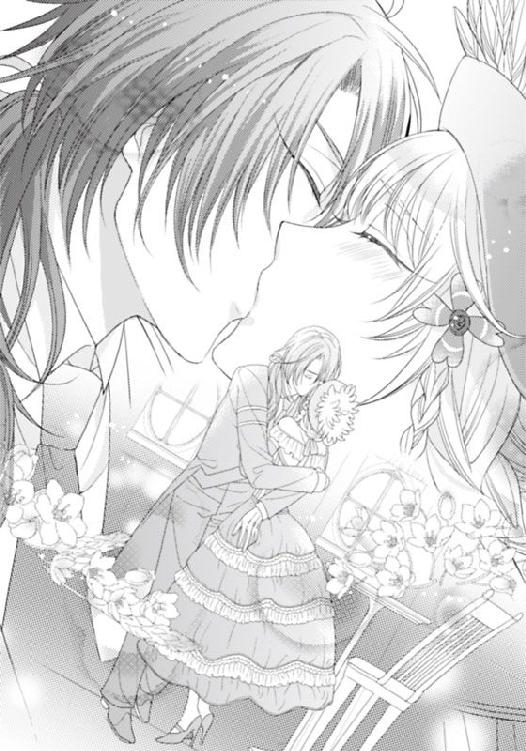
「甘い......ですね。お嬢さまの唇は......とても甘い......」
そういえば、この二日ほどスイズルはライラの素肌に触れてはこなかったのだ。
「スイ...ズル......ね、どうしたの......」
少し怖い。なんだか怖い。彼の腕に抱きしめられて、ライラはなんだかいつもの彼ではない気持ちを抱く。
誰なのだろう。彼は昔から知っている、感情を押し殺し一歩距離を置いて、何でも器用にこなしてくれる執事の彼ではない気がする。
どちらかといえば、この客船に乗っている他の男性貴族と同じ匂い、フェイ・グランと同じ匂いがするのだ。
スイズルはライラの身体に触れ、いとおしそうに胸のふくらみを揉んでくる。
「あ......」
「ずいぶん、感じやすくなってきましたね。そして大きくなってきました」
冷静に、瓜の形や成熟度を確かめるように触れられながら言われても、困る。
「そんなことはないわ......」
「いえ。わかります。私はずっと、幼い頃からライラ様だけを見ていましたから」
スイズルはもっと強く乳房を揉んだ。
そして、ぐりぐりと大きさと柔らかさを堪能するように揉みしだいてから、そのてっぺんの乳首の尖りを求めて指先を立ててくる。
「あ、ああ......あぁん......」
ライラの唇から、もう喘ぎが漏れた。
びくびくと感じてしまう。
なんていう、淫猥な刺激だろう。
「感じますか？ 私の指でも......私の愛撫でも......」
スイズルはキャミソールドレスの肩ひもを落とし、ライラの乳房をあらわにする。
そうすると、もう乳房は愛撫に硬く引き締まって、先端さえ、艶やかに色づいて尖りを際立たせているのだ。
「ああ、もうこんなですね」
スイズルがうっとりしたように囁く、その吐息だけでも、乳首はさらにきゅんと立つ。
「もうこんなにいやらしく......」
「感じる......わ。だって......スイズルの......指がしたのよ......あなたのは......長くてとても......繊細だもの」
細かく動いては長い爪を立てられて、そして爪の先で乳首の先端を揉まれたり、つままれたり、はじかれたりするのだ。
「あ、あああ」
もみくちゃにされたいほど、先端が感じてしまう。
胸を集中的に愛撫され、ライラは両足の間に熱い塊を感じて身もだえする。
身体の奥から、さらなる催促の足音が聞こえてきたのだ。
とくん......とくん。
（だめ......まだ......だめよ）
「お嬢さまの身体は...十分です」
スイズルは耳元に囁いてくる。
「...お嬢さまのここが......もっと男を入れる快楽に慣れてきたら......。フェイ・グランを誘惑しなさい」
「───何を......言うの？」
「情報を得るのは案外直球の方が......いいかもしれません......。そしてお嬢さまなら、彼はきっと......」
「スイズル......」
スイズルの思わせぶりな言葉。それに彼の愛撫が重なり、ライラは自分がフェイ・グランに抱かれる感触を想像してしまう。
『───ほら。腰を振れ』
「お嬢さま......腰を振って......」
ライラの中に、あのときシャルロットとラドル男爵の間で行われていた愛撫と交合がまざまざと思い出された。
白い肌の美しい少女を四つんばいにさせ、背後から攻め立てていた男。
貫く男根。
悩ましげに開かれる少女の赤い唇。
「シャルロットとラドル男爵......こうしてた......」
「どうしていたんです？」
「裸になって......四つんばいになって......そして......」
「四つんばい......ですか？ いいですね。お嬢さまも、してください」
「え」
ライラは驚いて、スイズルを見ようとする。その身を捩った瞬間、彼の手がライラの肩をつかんでそして、くるりと回して床に押しつけたのだ。
ライラは床に肘をつく形で、四つんばいにされ、その背中にスイズルがのしかかる。
「どうですか？」
「どうって......いやだ......わ。どいて」
だがスイズルはいっそうしっかりとライラの細い腰を押さえつけた。そして、四つんばいにしたライラのドレスをめくり上げると、艶やかに割れ目を見せている乙女の秘所を撫でまくり、中心を突いたのだ。
「う、ああ......ん！」
蜜壺で蜜がはじける音が聞こえる。
「ライラ様......あなたは今、こんな卑猥な姿勢をしてでも、男のものを求めているのですよ。私の雄を求めてる。そうでしょう？」
ライラは小さくうなずきかける。
「欲しいっておっしゃい。お尻を触ってどこをどうして欲しいのか。どこに何を入れて欲しいか」
そんな恥ずかしいことはいえない。
「入れて欲しいのはこちらですか？」
スイズルは、ライラの後ろの穴を爪の先でつんつんと突き、そして指先でゆっくり撫でるように愛撫してきた。
「こちらに入れて差し上げましょうか」
びくびくと、薔薇の蕾を震わせながら、『そちらじゃない』。そう思う。
欲しているのは、前の方だ。なのに、スイズルは後ろの方に何かを強く押し込み始める。
「や......ああ、やめ......て」
「やめますか？」
「───いや......です......」
「どちらなんです？ わがままなお嬢さまだ」
「いや......」
「ではこれを」
じゃらりと時計鎖の音がした。
スイズルの懐中時計の鎖の音だ。
彼の手が懐中時計から大粒の南洋パールの鎖だけを外したのだ。
「何を......する......の？」
おそるおそる振り向いて、スイズルを見ようとしたとき、突然ひんやりとしたものがライラの前の蕾に挿入される。
「ひああん......っ！」
「これを全部入れますよ。きっととても気持ちいいはず......」
「あああ！ いや......そんなの......やめ......っ」
悲鳴じゃない。明らかによがり声だ。
卑猥な喘ぎをスイズルに聞かせながら、ライラの中はどくどくと感じながら、そのつるんとした甘いパールを次々とを飲み込んでいく。一粒一粒、スイズルの指で押し込まれ、跳ね返そうとする体内はいつしか、束ねられた彼の指で強引に激しいほど突かれて、ぐいぐい中をこすりながら挿入されていく。
激しく、甘く、感じてしまう。
ころころとした快楽の粒が、すべて中に収まると、その鎖を操りながら、スイズルの太く集められた指は中を何度もこすり始めたのだ。
内側の粘膜を二本の指で撫で、奥に貫きかすかに引く、そんな動きを繰り返されて、ライラの肉襞は快楽におぼれていく。
つきだしたお尻の中に入れられたパールは中でぶつかり合って、想像以上の卑猥さだ。
少し鎖が零れるだけで、ライラの快楽に喘ぐ襞が吸い付いてくる。
「ああ、嬉しそうに疼いてますね。もっと、なにか欲しそうですね」
ライラは、四つんばいにされ、後ろからそこを観察される恥ずかしさに、首を激しく横に振る。
「いや......こんな......格好......いやよ......」
シャルロットだって、白い獣のようだった。
犬か何かのように床にはいつくばって、お尻をたかだかと上げ、男のものを受け入れて喜んでいた。あれは......とても恥ずかしい格好だ。
欲しくて欲しくて、ねだったあげく、取ったポーズにしか見えない。
犯して欲しくて、あんな風にお尻を上げて、そして自ら腰を振って感じていたのだ。
「いや......」
「どうして？ お嬢さまのここは、かなり私の指にしっかり絡みついてきていますよ？」
スイズルの響く冷たい声は、こういうとき、とてもいやらしく聞こえる。
「いや......私......」
身を起こそうとしたとき、スイズルの指が淫芽をくりくりといじりながら、他の指を束ね、そのひくつく蕾に突き立てた。
「んんんっ！ うく！」
背を歪め、猫のようにしなる腰を振り上げて、ライラはその強い快楽に反応する。
感じ方がそれまでと違う。挿入角度がそれまでと違う。違う肉壁をこすってくる。
「ん！ んあん！ あん！」
中を彼の指がこすりながら挿入するたび、ライラの中は快楽にもだえる。
「ほら。お嬢さまのこの部分は、気持ちがいいと濡れてきていますよ。いやなのですか？」
スイズルは、ライラの身体に覆い被さり耳元で囁いてくる。
片手はライラの蕾と淫芽をいじり、中のパールを、鎖を操りかき混ぜながら、もう片手はライラの尖り始めた乳房へと延び、荒々しくわしづかんだ。
「ふ......あんッッ！」
スイズルは、同時にライラの耳朶をかんできて、痛み、快楽、屈辱のすべての感覚がライラを襲う。
それらが一度にライラの敏感な肉体を攻めてきて、快楽を突いてくる。
「どうですか？ やめますか？ やはりよろしくないですよね、こんな......獣みたいないやらしいポーズは」
スイズルは耳朶を舐め、かじりながらそう冷静にいじめてくる。
もう気持ちがいいと感じていることを彼はとっくにわかっているのに、意地悪を言っているのだ。
「ん！ はう！」
「やめますか？」
じゅくん！
パールと共にかき混ぜられている、乙女のあそこが、とろりとした蜜を吹き出す。
「ああ、もうやめた方がいいですね。お嬢さまは、ここはあまり......」
「───い......や......」
胸を揉まれて、それでも感じているのにその部分まで激しくされて、ライラは言葉が出てこない。
（やめないで......やめ......ないで......気持ちいいの......すごく......すごく......）
「やめましょう」
スイズルの指が一気に後方へ抜かれていく。ライラの内壁は、それを止めようとするように彼の指にからみつく。
だが、すっと抜かれてしまったあとは、まるで空虚で、ライラの目からはぽろぽろと涙が零れる。体内に残るパールだけが、異質なものの感触で乙女の心をざわめかせる。
「や......いや......」
「ええ。だから抜きましたよ」
（嫌、早く......は......やく、もっと入れて......ねえ、早く）
パールの鎖だけでなく、もう何もかも、奥まで欲しくてたまらなかった。
指であれだけ感じるのだ。スイズルのものが奥まで激しく突いてきたら、どれだけ気持ちいいだろう。
「欲しいのですか？」
心ではこんなに強く求めているのに、どうしてもライラはうなずくことができずにいる。
「こんな格好はいやですよね？ 獣のように欲しがるなんてお嬢さまには屈辱的です」
再び強引に体内に挿入された彼の指が暴れ出す。大粒のパールが、かき混ぜられて、ライラの中で欲望を刺激する。
「ぁ、ああ......ん......んっ」
「素直におなりなさい。ライラ様。気持ちがいいはずですよ。この執事スイズルがお嬢さまを快楽に導いているのですから！ お嬢さまがより素晴らしい肉体になるように」
「はぅう！ うぁん！」
この悪魔的な快楽に負け、地獄に堕ちても、その言葉を受け入れられない。
「うう」
「どうですか？ やめた方がよろしいでしょうか」
ライラは、激しく首を横に振り続ける。
「どうして......他の人を......籠絡しろなんて......言うの？」
喘ぎながら、ライラは尋ねる。あなただけでいいのに。スイズルだけでいいのに。
それはとっても重要な問いかけだ。
答えてくれるだろうか。
ひどい答えだったら、どうしよう。
「〝どうしてか〟、ですか？ それはお嬢さまのおんためですから」
ライラはかすかに動きを止めた。
「お嬢さまのこれからの未来、すべてをその手中に収める男。フェイ・グランを落とすことが地位、名誉、権力、財産、その身の安全、すべての幸せに繋がるからですよ」
「黄金の花園の......在処......を......聞き出す......のね......」
「ええ」
「そのときだけだわ。私が......この身を彼に差し出すのは......」
「どうしてですか」
「スイズルは、私が他の男に抱かれても平気なの？」
突然、スイズルのひんやりとした手がライラの頬に顎に伸ばされた。
顎を強くつかまれ、顔だけきつい角度にねじられる。
詰まったうめきを上げ、苦痛に顔をゆがめるライラをスイズルは冷やかな視線でねめつける。
「いいですか？ お嬢さまの処女は、永遠に私のものです。それだけで私は満足です」
「ス...イ......？」
「あなたの初めての男は、永遠にこの私なのですから」
それはもう変えようのない事実。
天がひっくり返っても、ライラの処女はスイズルのものだ。
ライラの初めてはスイズルだった。
「あなたの初めての喘ぎも、私のもの......私だけの......ですから、私はもうお嬢さまのためにいつ死んでもいいのですよ」
誘惑的な声。
刹那的な快楽。
「お嬢さまと私とは、すでに我が分身のこの剣（ソード）で、永遠に繋がったのですから！」
スイズルの熱い長剣が、ライラの淫らにしたたりを見せるあの部分に突きつけられた。
そしてぐちゅりといやらしい音を立てながら、一気に奥まで貫いていく。
「ああ、ああん！ ひあああああああ」
一度いじめられて、萎縮していたその内壁が、スイズルのものに押し開かれ、貫かれていく。
気持ちよさに身体がしびれ、失神しそうだ。
奥の奥まで満たされる充足感。
深く繋がっている快楽をくわえ込んだまま、ライラはいつの間にか、自ら身体を緩やかに揺らし始めていた。
「───スイズルったら、赤く跡をつけないでって言ったのに」
「そうしたつもりでしたが。ついておりましたか？」
「ええ、ついているわ」
今日のショーのための衣装が、もうソファーにかけられていたが、着てみれば胸元が昨日の衣装より大きく開いているもので、ライラは鏡を見て悶絶したのだ。
「これで踊ったら......見えるのではない？」
「大丈夫。見えませんよ」
「何がだと思っているの？」
「お嬢さまの胸の谷間か......口づけの跡でしょうか」
また、かあっと赤く染まった。
「違うわ！ 乳首よ。スイズルのせいで真っ赤に尖って引っ込まなくなった乳首。どうしてくれるの？ も、ものすごくいやらしく目立つわよ」
スイズルの言葉を、そのときほど信用ならないと思ったことはなかった。
そのあとすぐに女性客の誘いにいちもにもなく飛びついてライラをおいてスイズルは姿を消してしまったのだ。
「お嬢さまは何もかも、可愛いですから。大丈夫です」
そういう台詞を口にするには、冷たい光を放つ眼鏡で。そして冷静すぎる上、少しも笑みのない顔で言って、彼は早々にどこかに消えていってしまったのだ。
「適当だわ。適当すぎるわ！ もう、スイズルひどいわ。また、マデラ嬢とデートでしょ」
「何を怒っているんだ？」
フェイ・グランだ。今日も艶やかな赤の入った黄金の髪を金刺繍のびっしりと施された黒地の軍服になびかせてそこにいる。
こうも立て続けに、ライラにキスをした男たちが入れ替わりで来られると、恥ずかしがっていいのか、穴を掘って入ればいいのか、わからなくなってくる。
「この衣装......どうかと思います！」
「可愛いからいいじゃないか」
まさか、フェイ・グランの口からまでそんな言葉が出てくるとは想像もしなかった。
「ライラには似合うだろう。俺がひいきで船に乗せた踊り子だものな。その身体を客に見せびらかせばいい。そうだろう。チップでも弾んでもらえ」
まったく気楽なものだ。この男は所詮、可愛らしい踊り子を入れ、可愛らしいメイドで男性客を釣って、チップを山ほど落とさせ自分の評判を上げることが狙いなのだ。
きっとそうだ。
「そんなに気にするほどではないと思うが？ 都会の演劇やショーからすれば、それは、ごく普通のレベルだ。おまえが田舎育ちで過敏すぎるだけだろう」
「田舎だからではありません。良識ある家に育てば、普通に露出が多すぎる衣装だと思うはずです」
「ディスラートに控えめにするよう言っておこう。詫びとして食事をどうだ？」
「え？」
「今夜のショーのあと、グランドライブラリーの入り口前で待ってる」
言いたいことだけを言って去っていった彼に、それ以上問いかけることはできない。
食事の誘い？
それは、かなり特別の扱いだろうか。ライラは、複雑な思いに胸を大きく弾ませる。
フェイ・グランに女性として誘われた緊張と嬉しさ。そして嘘をついて彼の船に乗り込んでいる心苦しさと、素性がばれやしないか。ばれたのではないかという緊張だ。
シンバルが鳴り響き、露出の高いダンスの音楽が、激しく打ち鳴らされている。
踊り子たちは、皆その露出の高い衣装を身につけて、そして立派に踊りきる。
足を左右に振り上げ、肩を組み、下腹部でそれぞれ隣り合ったものとの手を交差して繋ぐ。一列に並んだコーラスライン。
「とてもとても、すてきでしたわ。ライラさん」
幕が下りて踊り子たちが舞台を降りると、走り寄ってきたシャルロットは、艶やかなすみれ色の瞳を感激にゆがませて、もう泣きそうだ。
「私も早く一人前になって、こんな素敵な衣装を着て踊りたいです」
「なんだか心配だわ。シャルロットさん、本当にこんな衣装を着て踊りたいの？」
「ええ、ライラさんは、恵まれているのでわからないんですわ」
ドレスの露出度は日に日にエスカレートしていく。最終日には胸などもろになるのではないか、ライラは密かに心配しているのだ。
だが、シャルロットはますます可愛らしく薄い眉をハの字の形に落としていく。
「街の演劇やショーはもっと過激な衣装ですわよ。ご存じないのですか？」
彼女は過激な衣装も、客にお金で買われることも、平気なのだろうか。この可愛い唇が、あんな淫らな吐息を漏らしていたかと思うと、ライラは彼女を正視できなくなってくる。
訊きたくて仕方ない。
『ラドル男爵......あの人のことを愛しているの？』
でも覗いていたこと自体が、マナー違反だ。自ら暴露するのは恥ずかしい。
「胸とか、出ている衣装も普通です」
「え？」
「私、胸を見られると興奮します。綺麗な胸のうちに出しておきたいです。胸を触られるのも案外好きですし」
「ええええ？」
大げさではなく、ライラは目が飛び出そうなほど驚いた。
「あの......失礼かも知れないけれど、シャルロットさんは、ラドル男爵と恋人になったの？ 結婚するの？」
つい思いきって訊いてしまった。
シャルロットは、顔を真っ赤に染め、その色は首に、胸元にまで落ちていく。
「私とラドル男爵は......その場限りの間柄なの。私には親の決めたフィアンセがいますし」
その言葉は、ライラにとって衝撃的なものだった。そしてシャルロットも、ラドル男爵との関係が愛情ではないことを他人に告げることは辛そうだった。
「でも、愛されるのも愛するのも好き。人と繋がるのは、とても気持ちいいからいいんです。お金もとてもたくさんいただけるし。これで船を降りても両親と兄弟たちを一年間十分養えますから」
シャルロットの柔らかな笑みに、ライラは胸を突かれた。
「ご兄弟......多いの？」
「ええ、親戚の子も事情があって預かっているので、全部で八人います。まだ幼いのでよく食べますし。一応家は貴族ですが、本当に〝落ちぶれ貴族〟なので大変なんです」
（親戚の子を預かって......八人......兄弟......）
昔、子供部屋で大勢で遊んでいた。
木馬やトランクや、積み木や大きなテディベア。チェックのリボンをした乗れるような大きさのテディベアは祖父が買ってくれた。五つも六つもあった。絵本も貰った。みんなで暖炉の前や日向に集まって、輪になって読んでいたものだ。
（あれは誰......？ 大勢いたわ。みんな......病気と爆撃で死んじゃったの？）
何かを思い出しそうだ。
楽しい声。母が呼ぶ声。
爆音が響いて子供部屋の壁が、屋根が吹き飛んだ。
「ああ、アンコールです。もう次の舞台に出ないと。さあ、行ってください。ライラさん」
シャルロットの言うとおりだった。緞帳が開いて、客席のにぎやかな拍手と歓声が、袖の暗がりにいるこちら側にも、波のように襲いかかってくる。
ライラは、より拍手がもらえるよう、見事な踊りだったと褒められるように、踊った。
足を頭上高く上げ、床に開脚で座り込むときも、優美な肢体をめいっぱい伸ばす。
衣装は早替えで、たっぷりとしたロングスカートではなく、どうにか下着を覆うほどしかないものになる。ギャザーだらけのフリルが五段ほど重ねられて、アヒルのお尻のようになっている短いスカートは、ほとんどコルセットの延長のようなものだ。青と赤と黒のコルセットで、ガーターベルトで吊り、そして黒のハイヒールを履いている。手には、男物のシルクハットを持ち、踊りに合わせてくるくる回し、上空に高く放り投げては受け止める。小道具としてシルクハットは申し分ない。
普段は決して見ることのない、コケティッシュな乙女たちの踊りに、不道徳的なものに抱く好奇心的興味も手伝って、男性客ばかりか女性客の視線も、釘付けになっている。
ライラは、客席にいつもいるはずの、スイズルの姿がないことが気になっていた。舞台袖の客席の隅に、いつもいたディスラートの姿も気づけばない。
急いで着替えて、客席の中に彼らの姿を探す。ディスラートも、スイズルも、フェイ・グランもいなかった。
何かあったのだろうか。
スイズルがどこか危険地帯に潜入して、警備員に捕まったのだろうか。
どれだけ探し回っただろう。個人の部屋以外、そしてライラたちに侵入が許されている場所は、すべて探し回った。どこにもいないということは、女性客と一緒に部屋にいるのだろうか。それとも......。
「マデラ・ラドル嬢なら知っているかも。一緒にいるかも知れないし」
客席に彼女のあの豪華な金の巻き髪は見かけなかったような気がする。部屋だろうか。上流階級の貴族の部屋は皆、ライラたち使用人の入室が禁じられている。上階に上がることすらその部屋の主や、貴族と同伴ではないと許されていないのだ。
見つかったら、ライラは罰金を取られるか、もしくはフェイ・グランが言っていたように、最悪の場合、放り込まれてしまう。
逡巡しながらも、ライラは一等船室のある階上デッキへ上がることにした。
不安で胸が高鳴ってくる。
今までは見かけるだけで、足を踏み入れ、歩くことのなかった豪華なグランドステップに足をかける。見事な彫刻の施されたマホガニーの大階段。船というより宮殿に見るような大階段だ。
「ライラ。ライラ嬢じゃないか」
階下から声がかけられた。
ラドル男爵だった。
マデラの兄。シャルロットの情事の相手の、あの、ラドル男爵だ。
栗色の髪は自慢なのだろう。整髪油で流して形づけている栗色の髪。灰色の目は、ハンサムでおしゃれな紳士を気取ってはいるが、性格が悪そうな目つきと薄ら笑いを浮かべているような口元が苦手で、外見からもライラにとっては避けたい男だ。
「ライラ嬢。どうかしたのかな？」
「あの、ちょっと人を探していて」
「誰を？ この上は踊り子は招待客と一緒でないと入れない決まりだぞ」
声をかけられたとき、一瞬、頼んであった〝黄金の花園〟の情報が入ったのかと、少し心が踊ったのだ。だがラドル男爵はそれには少しも触れてこない。
「ええ、あの、その人が見つかったらすぐ戻りますので、見逃してくれませんか？」
「ならば、一緒に探してやろうか？」
「あの、ラドルさまはマデラ嬢のお兄様ですよね？ 彼女の部屋に、スイズルがいるかどうか見ていただきたいのです」
「マデラの？ あいつは、友達とどこかに行ったのではなかったかな。ディナーを食べにフレンチレストランかプールバーに......」
「いらっしゃらないのです」
そこはもう確認した。
「では一緒に行くか。マデラの部屋はこの大階段を上がってすぐそこだ」
「はい。すみません」
ライラは、ラドル男爵に肩を抱かれるようにして、一等船室の並ぶデッキに上がった。
淡いオレンジの明かりが灯り、とてもいい雰囲気のデッキだ。だが、夜風が冷たいせいか、乗客は誰もデッキにはいない。
「部屋はここだ」
ラドルが鍵を扉に差し入れ、開くと中にライラの背を押し込んだ。
「どうかな？ いるかな？」
「え」
暗い部屋だ。目をこらそうとして、ライラは腕を引かれて奥の暗がりに引きこまれた。
「へたな嘘はつかなくていい。本当は、僕を捜していたんだろう？」
「なんのことですか」
「隠さなくていい。いつも誘っていたんだろう？ ライラ嬢」
「違います。あの、失礼します。私は、スイズルのことを探していたんです」
「スイズル？ あの銀縁眼鏡の黒髪の長い奴なら、どこかの女の部屋だろうさ」
ライラは必死でラドル男爵の腕をはねつけようとするが、男の力はかなり強い。
「もうそんな男かまうなよ。従兄弟より俺たちと楽しくやろうぜ、チップは弾むからさ」
部屋の向こうで明かりがついた。
他にも誰かがいる。揺れるキャンドルの明かりに照らし出されたのは、男たちだ。
この部屋は、マデラの部屋ではなく、ラデル男爵の部屋のようだった。
「だまされたの......？」
男たちがこちらに酔ってきて、その手にされていたロープでライラを縛り付けようと拘束してくる。
「おい、押さえろ」
「口をふさげ」
「いや」
「口をふさいで縛り上げろ。暴れたら馬乗りになれ」
三人はいるだろうか。ライラは暴れて男の手にあったキャンドルを叩き落とした。
部屋の中は一瞬、真っ暗になって、男たちは何も見えずうろたえている。
ライラはその隙を縫って、扉から飛び出した。廊下を走るが、もう背後から追ってくる足音がする。
「助けて！ 助けてください！」
追ってくる男たちの足音がどんどん迫ってくる。
このままだと捕まる！ そう思って、地階に入って、あの図書館の方へと全力で走った。
扉が開いているとは思わなかったが、それでも彼らの知らない方へ逃げるべきだ。
地階に降り、貨物室と同じ並びの廊下を走る、誰も助けてくれない。誰も来てくれない。
自分でもどこをどう走ったかわからないまま、疲れ果てて速度を緩めたライラの前にあの、大きな二枚扉がそびえていた。
獅子の形のノッカーが光り、花綱の飾りの浮き出た図書館の扉だった。
「ついたわ、ここよ......」
ライラはノブを引いてみる。と、思いがけずにその扉は音も立てずに開いたのだ。
ライラは周囲に目をこらし、。聞き耳を立て、ラドル男爵たちの足音が聞こえないか確かめてから、その中に入り戸を閉め切った。
音にじっと耳をかたむけながら、図書館の一番奥の一番隅に身を丸くする。
鍵が開いていたということは、この中に今、フェイ・グランがいるのだろうか。
「フェイ・グラン様......誰か......いますか？」
しばらく経って、もう誰も追ってこないと思ったときに広い図書館内に呼びかけてみる。でも誰の返事もなかった。誰かがいる気配もなかった。
「誰もいないの？ でもきっと誰か来てくれるわよね......私......もう足が痛いから......」
ライラはいつしか眠りについていた。
どこかで誰かがお香を立てているのだろうか。甘い香りが漂ってくる。甘く隠微な香り。
なんの香りだろう。ココアのようなほろ苦さのある甘い香り。
『私はあなたのもの......あなたは私のもの......。私だけのいうことを聞いてください。他の男の言葉など一切聞いてはいけません。秘密を話しては......いけませんよ......』
何度も、何度も、呪文のように囁かれた言葉が、現実なのか夢なのか、もうはっきりとわからない。
いつしか甘い香りに全身を浸されて、翌日になっていた。
６ 追憶の甘い部屋では、監禁を
ライラは、ふと身体の痛みから目が覚めた。
あれから何時間たっているのだろう。外の天気も空の明るさもわからない地階だ。蜂蜜色のシャンデリアだけはいつも皓々（こうこう）と照っているから不便はないが、時間がわからないのは不便かも知れない。
時計もないし、誰も来た形跡はない。フェイ・グランですら、来ていないのだろうか。
おなかかが空いていたけれど、むろん食べ物などはない。
だが、ライラは、周囲の書架のことに視線を奪われている。
やはりこの空間の見事さは圧巻だ。
吹き抜けの四階分の高さ。横幅はどれだけあるのだろう。上階のグランドデッキの広さと同じほどあるような気がする。
白いアイアンレースに彩られた様々な書物。
この空間だから、大ぶりで豪華なシャンデリアがとても似合う。
書物の敵は日光と湿気だ。だから、この図書館は光にも湿り気にも相当気を遣っていると思われる。
そもそも、この客船になる前から、船に図書を運び込んでいたのだろうか。これだけの蔵書を移動させるのは、それだけで相当の日々を費やすだろう。
「この書物は......元はフェイ・グラン様のお城にあったのかしらね？ この船は改装されたそうだけれど......。フェイ・グラン様が愛していた人のために作った、愛していた女性の趣味......。別れた恋人は、もう亡くなったのかしら......」
ここにいて、本を読んではいけないという理由はないだろう。ライラはやにわにたち上がり、書庫の間を縫うように歩き回る。
いい香り。素敵な装丁。重厚感あふれる革張りに、金の箔押しでタイトルが入っている。
グランドライブラリーの一階に当たる、大理石張りの床を歩き、興味を引くタイトルのものを引き出して見たが、その中身は小説ではなく、難しい専門書であることが多い。
白いレースの階段をくるくる回りながら、二階に上る。吹き抜けで、階下が見渡せるのは、最上階に上っても同じだ。
書庫は背が高く、移動梯子が取り付けられているから、どんなに高いところに本があっても取り出せないことはまずない。
ここに、船の設計図などあるだろうか。あればそこから宝物庫の場所が割り出せるかもしれない。
もしくは、ここにもあるであろう、様々な場所へ直に通じる秘密の通路の仕掛けがわかる。
『フェイ・グランは、その行動経路がまったくつかめないのです。この船の中に彼しか知らない秘密の通路があるはずです。その通路を使えば、こっそり自室に戻ることも可能であり、どこへでも神出鬼没に振る舞えるのですよ』
この図書館の、どこかに扉があるだろう。先日フェイ・グランに各階を案内してもらったときには扉の存在を感じなかった。だからきっと書架のどれかが移動したりする、ミステリー小説のような仕掛け扉が存在しているに違いない。
それなら、この図書館から宝物庫へ続く隠し通路もあるのだろう。
ライラは、誰かが来てくれるのを待とうとも思ったが、どれだけ待っても誰も姿を現さない。
大好きな書物に囲まれ、女性なら誰もが好むと思われるような、白のアイアンレースが交錯する美しい空間にいるとはいえ、なんの物音もしてこない。時間の流れもわからない場所にこれ以上居続けるのには息苦しさも覚えてくる。
外では今何が起きているのだろう。スイズルはどうしているだろう。あれからどれくらい時間がたっているだろう。
スイズルは無事だろうか。夕方のステージまでには階上に戻らなくては、舞台に穴を開けてしまう。そろそろ覚悟を決めて、外に出てみようか。
大きく嘆息して、周囲を見渡したライラは、ふと、見覚えのあるものをそこに見つける。
「あれは......」
絵本だった。
くたびれて、ぼろぼろになっている絵本。
どうしてだろう。それまでまったく忘れきっていたというのに、ライラの中に突然蘇ってきた思い出があった。
「この本......この本は......おじいさまが私にくださったのと同じ絵本......」
ライラがまだ四歳かそこいらの年齢だっただろうか。この本は、本好きだった祖父が、買ってくれたのだ。誕生日の贈り物かなにか、相応特別な日に、今は亡き祖父がくれたものだった。当時、絵本などとても珍しくて、ライラの周囲にいた大人も子供たちも、大喜びしてみんなで暖炉の前でそれを囲んで集まっていたものだ。
今見ても、とても素敵な生き生きとした絵だ。めくるページが朽ちかけていても、ウサギや野ねずみ、ハリモグラ、かえるにアヒル。そういったものたちが洋服を着て、まるで人間と同じように生活している様子は、鮮やかで、今、緑の陸地に上がったならば、こんな光景が繰り広げられているかと思うように、不思議に現実味もある絵本だった。
「この本、私も持っていたのに......もうずっと十年以上、見てなかったわ。図書館のどこかにしまい込んでしまったのだっけ？ それとも昔の子供部屋においたまま？」
ライラが四歳の頃、アイスイルの城下町でははしかが流行って、城内でも祖父や母が亡くなり、いとこや、子供好きな母が預かっていた子供たちの数人が亡くなったりと、様々な辛いことが重なって、いろいろなものが変わってしまった。
城では当時一年以上喪に服し、子供部屋も封鎖されてしまったのだ。
部屋一杯のおもちゃがあり、トランクがいくつあってもしまいきれないほどだった。木馬もあって、祖父がときどきみんなに買い与えてくれた絵本も小さな棚に何冊かあった。
胸がきゅうっとして、そしてほろ苦い思い出に、目頭が熱くなる。
ぎゅっとその薄い本を抱きしめた。
この本をフェイ・グランがあえて蒐集したとは思えない。
だからやはり、ここは彼以外の人の好みが大きく混じった図書館なのだろう。
その本が、一番隅に置かれた書棚の、一番下の、一番端にひっそりと刺さっていたのが、またライラの視線を奪ったことは、奇跡的な偶然だった。大人は見落としがちなところでも、小柄なライラの目にはとても目立つ場所だったのだ。
ライラはほんわりと懐かしく、幸せな気分になって、その本の周辺に目をこらす。
よく整備されている書棚なら、分類ごとの同じような本が近くにあるはず。
その考えは当たっていて、その周辺には同じような趣味の本、同じ動物の絵本が何冊も並んで刺さっている。
ライラは頬を染め、夢中になって懐かしい幼少時分の本を抜き出しては開いてみる。
しかも、開く本、開く本、見覚えがある。昔読んだことのある本ばかりだったのだ。
「すごい偶然？ それとも、偶然じゃなくて......？」
その頃は、金持ちしか子供用の本など買い与えてはいなかった頃だ。文字を読めない子供や大人も多い時代。
フェイ・グランも貴族だから、こういったものを買い与えられていたのだろうか。
「愛する人の趣味だって......フェイ・グランは言っていたけど......」
船が揺れた気がした。気のせいだろうか。
でもシャンデリアが、ほんの少しクリスタルのパーツを不安げに揺らしているようにも見える。
「どうかしたの？ 何かあったの？」
揺れないことで定評のある、最新式タービンの豪華客船だと聞いている。ここにいては外の物音が一切聞こえてこないし状況もわからない。
唯一この空間に、小さな明かり取りとして開いていた天井の丸窓も今は閉じられている。
「どうして？ 何があったの？」
嵐でも来たのだろうか。でもあれから揺れは感じられない。
とにかく、ここにいてもスイズルもフェイ・グランもやってこない。
ライラは不安に駆られて、ここから一度出ることにした。
入ってきた中央通路の向こうへ走り、大きな二枚扉の取っ手をひねる。
だが、開かない。外から誰かが鍵をかけてしまったのか、扉が閉まると鍵が下りる仕掛けなのか、中から開くようにはできていないこの扉から外に出ることはできなくなった。
「うそ......どうして......」
だが、普通の人には足を踏み入れさせないというフェイ・グランの特別な場所だ。普段、誰も入れないようにしておくのはきっと彼らにとっては普通なのだろう。
ここに、フェイ・グランしか使えない秘密の通路が張り巡らされているならなおさらだ。
「秘密の通路......それを見つければ......」
通路ならば、中から開けられないようにはしていないのではないか。そう思って、ライラは一階の壁をじっと見つめながら隠し扉を探そうとして歩く。壁際に寄せてつけられている書棚が何かすると動くのではないか。書棚の中の本を抜くと、向こうに扉があるのではないか。
そんな小説のトリックめいたことを考えながら、両手を書棚に、壁に当ててみる。
〝黄金の花園〟が隠されている場所がわかればもっといい。
「この書庫の壁は......何でできているのかしら。木製？ それとも鉄製？」
軽く叩いてみても、重厚な感触で、向こうの音も、叩いたその反響音もしない。頑丈なもので作られていて、叫んでも外に聞こえないかも知れない。
「あの！ 誰か出して！ 誰か、ここにいませんか？」
フェイ・グランの部下たちが、この客船には大勢乗り込んでいるのだと、スイズルが言っていた。
そして特に、フェイ・グランの居住階やこういった秘密の場所に不埒な奴らが入り込まないように巡回警備しているのだとも。だとしたら、ここの外の廊下には、警備のものが頻繁にやってくるのではないか。そう思って叫んでみたが、自分の声がこのグランドライブラリーの内部にさえ響かず、書物に吸収されてしまうのを聞いたときは、ライラの全身が緊張感で引き締まった。
もしかしたら、外の人物に気づかれなかったら、ここで死んでしまうかも知れない。
そんなことが、この船では普通にあり得そうだ。
ライラは、いっそう必死で壁を見つめ、低い位置、高い位置を触ってみるが、どこで同じことを試してみても、それらしき扉はいっこうに見つからないのだ。
「ないわ......ない......」
スイズルの言っていたことが、当たっていないのだろうか。
ライラは次第に余裕がなくなってきて、書棚から取り出した本を戻さず、そのまま床に放置していく。放置していくのも乱暴になってきて、重ねて積んでいた本が今は崩れて、床の上に散らばっている。
まさか、ばれていたのだろうか。
「まさか......よね」
まさか、この客船に潜入していたなどということが、ばれているとは思えない。
もし、調べて嘘がばれたとしたら、亡くなった母の旧姓を使って書類に記入したことだろう。
〝ライラ・クロフォード〟ではなく、〝ライラ・ミンスター〟。そう書いたのだ。
でも、ここではそれほど実際の素性は吟味されていないはずだ。
「でも、スイズルは......私よりずっとたくさん、この豪華客船の内部を探っていたはず。きわどいところまで侵入してしまって、それで私も仲間だとばれたのかも。だからスイズルも私を探しに来てくれないし、それにここに閉じこめられたのかも」
偶然ではなく、最初から、ここをえさにして、ライラをおびき寄せたのかも知れない。
ライラは、疲れ切って一番上階の一番隅の、壁と書棚の間にずるずると座り込んだ。
こんなときでも、部屋の隅は心が落ち着く。
すうっと、微風が流れ込み、ライラの背にかかるストロベリーブロンドの髪を揺らした。
最初、透けるような白いドレスの上に舞う自らの髪を、呆然と見つめていただけだったライラは、ふと、この微風がどこから流れ込んできているのかと顔を上げる。
この窓の一つもない地下では、風が入り込んでくることなどないはずだった。だが、風はかざした掌に確かに感じる。
書棚の奥の壁と壁のコーナーの部分。そこからほんのかすかに微風が流れてきていた。
でも、力一杯押してみても、そこが扉のように開くことはないし、取っ手もない。微風が来るとはいえ、隙間だって、目視はできないほどささやかなものだ。
「偶然なのかしら......。地階も空調は動かしていないと空気が悪くなるでしょうし......」
だが、もう一度、へたり込みそうになったとき、向こうからかすかに〝わあん〟という不思議な音が聞こえた。
〝わあん......〟もう一度、聞こえた。
「もしかして、やっぱりここには違う部屋か通路に通じる何かがあるの？」
壁に何か仕掛けがないか、もう一度じっと見つめ、触れてみる。
子供の頃、板の継ぎ目にコインを滑らせ、遊んでいた記憶が蘇ってきた。
小さな木の節を見つけると、その節に指先を突っ込み取れなくなって泣き出したり。ペンの先端を突っ込んで、ペン先を台無しにして、乳母に大目玉を食らったことも思い出す。
ライラは、髪飾りを髪から外し、壁と壁の合わさりをなぞってみる。なんの変化もない。もう一度、強くなぞってみる。溝を押しつけるように、傷が付いてしまうかも知れないと不安になるくらい、強く。
「あ......」
隅の隅、もう溝の最後という床に接している場所で、髪飾りが何かをはじいた。
ビ、イン......ッ！
指先に感触が走る。そのはじかれた感じのところをライラはもう一度押してみた。
軽く、そして今度は力を込めて。
壁がくるりと回って。隙間が生まれた。普通の扉ではなく、回転式の扉だ。だからよほどの隅を押さなければまず開かず、扉だということすら気づかないだろう。
「ここが......隠し通路なの？」
真っ暗で、明かりはない。
どれくらいの広さなのかもわからない。人の気配はなく、ひんやりとした空気が満ちている。この冷気がさっき図書館の方に流れてきていたのだ。
ライラは、隙間を通り抜けられる程度に押し開いて、奥に身を滑らせる。
次第に目が慣れてきて、おおよそのものが目視できる状況になると、そこには不思議なものが置かれていた。
古そうな革のトランクや、木の大型トランク。古びたテディベアや、巨大な木馬。
子供が描いたような愛らしくも稚拙な絵画が壁に、立派な額に入れられて飾られているかと思えば、黄金と煌めく宝石の冠を載せた、どこかの女王のような豪華な出で立ちの女性の大きな肖像画も壁にかけられている。
王錫を手にしているから、女王だろうか。
子供部屋のようであり、豪華な貴族の古い書斎のようでもある、ちぐはぐな部屋だ。
何が輝いているのかと思えば、黄金の飾りの付いた立派な椅子が部屋の中央に置かれていて、そしてその椅子の周囲にぐるりと白テンの毛皮が敷き詰められていた。
まるで玉座だ。
部屋の周囲の壁は、書庫になっており、さっきまでのグランドライブラリーのものよりいっそう古そうな、曰くありげな書物で埋め尽くされている。
こちらには、黄金の獅子飾りもなく、上方の本を取るための梯子も至って朴訥な木の梯子だ。
あの白いレースと金のシャンデリアの優雅で豪華な趣はかけらもない。
重厚さと歴史と、そしてまがまがしい不思議がここには詰まっていた。
これは少年の宝だろうか。少年時代から誰かがここに閉じこめられていて、それでこの雰囲気の部屋になったのなら納得がいく。
ライラはゆっくりと広い部屋に足を踏み入れ、もっと何かつかめないかを見つめていく。
「でもまさか〝黄金の花園〟がここにあるなんてことは......ないわよね......」
つぶやいて、書棚を見上げた。
すり切れた革の背表紙。
かすれて読み取りにくくなっている金の箔押しの文字。
英国王室の歴史。
英国王室の変容。
闇に隠蔽された王国の血の歴史。
決して楽しそうではない歴史書が多く並ぶ。まがまがしい空気はこういうところからも来ているのだろう。
肖像画も多い。ヘンリー王や、チャールズ王。古そうな油絵が壁にかけられ、まるで英国王室のファミリールームだ。
「変な部屋......だわ」
ライラは恐ろしくなって、一度、そこから出ようとしたのだ。だが、スイズルの言葉を思い出して、〝黄金の花園〟を探してみなくてはと、逃げたくなる気持ちを押しとどめた。
「〝黄金の花園〟......子供の頃、一度でも見たことがあったかしら。タイトルが書かれているかも怪しいものを私が見つけられるのかどうか。アイボリーの箱に入っていれば......」
こんなとき、どうしてここにスイズルがいないのか、悔やまれる。
でも、ここで一族に伝承されている大切な宝物を見つけてこそ、一人前のクロフォード家の跡継ぎだ。
「私はそのためにここに来たの。秘密を取り戻すために、そのためにあんな努力を......」
木の大きなトランクに両手をかけて力を込めたとき。恐ろしいことが起こった。
「そこにはないと思うがな」
突然、闇の中から声がしたのだ。低く嘲笑するような声。
ライラが触れていたトランクの、ふたの上に置かれていたドクロの置物が、ごろんと重たい音を立てて落下した。
それにもライラは心臓が縮み上がって、まさに、床から足が離れて飛び上がった。そして心臓さえも、飛び上がって。息が詰まる。
「あ......」
ライラはトランクから手を放して、おびえた目で周囲を見つめた。
何もない。何もいない、今まで見ていたこの不思議な部屋のままだ。さっきと何も変わるところはない。なのにまた声が聞こえた。
今度はもっと近い。ライラのすぐ耳元でその声がして、飛び上がったライラは、すかさずその腕を捕まれた。
「ああっ」
「可愛い声だな。本当に、いつでもおまえは可愛いよ」
顔を動かすこともできない。すぐそこに男の髪が揺れている。吐息が耳にかかっている。たぶん、絶対にあの人物だ。そうわかっているのに、確かめたくて仕方ない。でもそれが現実だと確信したら、もっと恐ろしいことになりそうで、ライラは顔をほんの少し巡らせることもできずにいる。
そんな思いを察してか、男はライラの腕を強く引いて、自分の方を向かせたのだ。
ぎゅっと瞑った顔に、男の手がかかる。頬に触れ、顎に触れ、輪郭を確かめるようなその動き。
おそるおそる歪めながら開いた眼に、男の白い手が見える。手袋をはめた手だ。白い軍の手袋。もう、間違いはない。これはあの男。ライラもスイズルも、怪しいと踏んでいたあの男が目の前にいるのだ。
ライラは覚悟を決めて、その男の姿をゆっくりと見つめ、見上げていく。
刺繍でびっしりと詰まった黒い上着の胸元。きっちりと立ち上がった襟元。
そして少し日に焼けた浅黒い肌に獅子のたてがみのように降りかかる黄金の髪。こめかみには血に濡れたような赤いメッシュがはいっている。
湖水のように鋭い青い瞳が、目の前で、じっとライラを刺していた。
怖い。腕を掴まれ、顔を掴まれているのに、後ろに逃げ出そうとしてしまう。
もちろんそんなことはできなくて、かすかに上体が後方へ下がったのを気づいた彼が、さらに強引に手前へと揺さぶりかけた。
「あ......」
「だから、いちいち可愛い声で啼くなよ。もっといろいろしたくなるだろ」
フェイ・グランは不機嫌だ。ここは彼の秘密の場所。そこに入り込んだライラは、彼に取って裏切り者。この船に乗せておくべきではない、排除すべき邪魔者になったのだ。
でもここに入り込んだことになったきっかけは、フェイ・グランが助けに来てくれなかったことだ。誰も来てくれなかった。そして誰かに閉じこめられたのだ。
そう思うと、怒りは、ライラにだってある。
「いつから......ここに......？」
かすれた声を振り絞って、そう尋ねた。
「最初から」
ふん、とばかり、傲慢な声。
「最初からって......私を何時間も......閉じこめておいて......どういうつもりで」
「どういうつもり？ それは俺が聞きたかったな。どうしてこの船に踊り子として乗り込んだのか。本当はまだ〝落ちぶれてない〟貴族の姫が。本当はまだ金に困ってもいない貴族の姫が。クロフォード家の姫が、裸同然のいやらしい衣装でポーズまで取って、踊り子を務めたがる理由を知りたかったな。客船に乗りたかった風でもなかったし」
「お......お金には困っているわ。あなたのせいで」
「困ってるなら、さっさと金持ちの貴族に抱かれて、一晩分でも二晩分でも大金をせしめてしまえばよかっただろう。おまえの容姿なら、優しくして取り入って、みっちりと性のサービスでもしてやれば、億万長者の老人が、簡単に後妻に据えてくれただろうに」
ライラは、あまりにあけすけな言葉に、憤って顔を真っ赤に染めた。
「失礼だわ。私は......踊りを見せる踊り子として客船に乗せてもらったわ。でも踊りを喜んでお金を払ってくれるお客様を欲しかったの。すぐに身体をもとめてくるような人はごめんだわ」
「年寄りは嫌いなのか？ だったらラドル男爵でよかったじゃないか。あいつは偏った性癖だが、金払いはいいぞ。そういうところに変にプライドの高いおぼっちゃま貴族だからな。今まで実行した娘はいないようだが、変態性欲の証拠でも押さえて、上陸後に城に乗り込めば、もらえる口止め料で城が建つかも知れなかったのに。残念だな」
「私は、そんなことで......、人の弱みでお金を稼ごうとは思いません。卑しいわ」
「ほう？」
その言葉は言うべきではなかったかも知れない。
フェイ・グランは、眉を小馬鹿にしたようにつり上げ、ライラの顎を強くつかみ直して持ち上げる。美しい顔がすさまじいほど怜悧になって瞳はますます冷たく輝く。
「下着のようなドレスで踊って、金をもらうのは卑しくなくて、抱かれてもらう金は卑しいというのか。おまえは昔からおかしなことを言う」
「おかしくはないわ。仮にも一国の姫よ。お金が欲しくても、領地を奪われたくなくても、最低限身体は売らないわ」
恐ろしいフェイ・グランに対してこれほどに、強い口調で、思ったことが言えるようになるなんて、この客船に乗り込む前まで、ライラ自身も思わなかった。
「それならそれでかまわない」
「嘘、私のこと......商品として船が最終目的地に戻るまでに売ろうとしていたのでしょ」
「それをどこで聞いた？」
「本当......なのね？」
「俺じゃないな」
「あなたしか、いないじゃない。そんなことまで取り仕切れる人がどこにいるの？」
「俺がおまえを特別扱いしていると知って、手を出せなくなった小物がいるだろう。おまえを襲いかけたならずものたちが。あいつらがそれを勝手に、乗客に仕掛けたんだ。その計画をしたのは......おそらくラドル男爵だろう」
「え......」
ライラは驚いて彼を見る。むろん、あの男なら、それくらいしそうな卑怯者だ。だが、今そんなことをここで彼の口からだけ聞いても信用できるわけがない。
立場を守る為なら、言い逃れだっていくらでもするだろう。
「それが......本当なら、確かめたいわ。ここから出して」
ライラは、突然現れたフェイ・グランの衝撃から少し心をなだめつつ、肝心のことを切り出した。
「ここから出られると思っているのか？」
「私が何か......したというの？ 何も......してない......。何も盗ってないわ」
片手を拘束されながら、仕方ないのでもう片手を広げてみせる。
「残念ながら、あいつに俺のコレクションからあるものを奪ってこいと命じた女がいると聞いたのだ。黄金羅針盤と〝黄金の花園〟とかいう、アイボリーの箱に収まった古書だそうだ。心当たりはあるか？」
ライラは、びくんと心底震えた。
どうしてそれがフェイ・グランに伝わってしまったのだろう。ラドル男爵がしゃべってしまったのか。やはり、彼のスパイがこの豪華客船には大勢潜んでいるのだろうか。
「俺は嘘つきが嫌いだと何度も言っているが、おまえはその書を知っていたか？ ライラ」
「───私は......そんなものは......知りません......」
知っているなどとは、とうてい言えないことだった。
「服を脱げ」
「本当に......何も......」
「服の中に隠しているかも知れないだろう？ この前下着に毒薬を仕込んでいたように」
「あれは......薬です。ちゃんとあなたの傷は治ったでしょう......？」
ライラはなんとか彼の手から逃れようと、片手で腕をつかむ彼の手をふりほどく。
だが腕を放したかと思われたフェイ・グランは、すぐライラの腕ごと腰をつかむと。手にした飛び出ナイフで肩紐を、コルセットのリボンを、それからおもむろにドレスのスカート部分を引き裂いたのだ。
「い、ぃや......っ！」
「脱げと命令したのに、脱がないからだ。言ったはずだろう？ 俺の命令は絶対だと」
「これは......とても理不尽な命令です」
「理不尽でも何でも、俺の命令は聞いてもらう。俺を誰だと思っているんだ？」
フェイ・グランは、腰からぶら下がっているドレスのチュールとシルクのタフタをもう一度強く横に引きちぎる。大きな音が一瞬響いて、彼の手に残骸となったドレスがぶら下がった。
ボロボロのコルセット。まるでバレエのチュチュ姿のような、薄布が、やっとあの部分を覆っている程度の姿にされたライラは、身を捩ってこれ以上の暴力から逃げようとする。
フェイ・グランは、それさえも許さなかった。
裂いたドレスでライラの手首を縛り上げ、拘束すると、小部屋の中央に引きずっていった。
白テンの毛皮の上を平然と歩き、あの玉座にも思える豪華な革張りの椅子の上に突き飛ばした。
「あ」
背中と腕が、彫刻でごつごつとしている木枠に当たって、思わず声を上げる。
フェイ・グランはそれくらいはまったく気にせず、ライラをその椅子の背もたれに背を付けさせ、手の拘束紐を、天井から引き下ろした鎖の鉄フックに引っかけた。
そんなものがあると思ってもいなかったライラは、吊られた腕を見上げて、驚愕する。
鎖は、向こうの壁から滑車にかけて吊られていて、レバーひとつで自由に獲物を上げ下げができる、拷問用具だったのだ。
「どう......して......」
「ここがこういう部屋だからだ。過去の追憶を封じ込めた部屋。罪人を封じ込めた部屋。これからの憎しみを増幅させるための部屋。そして欲望を叶えるための決意を新たにする部屋だ」
怖かった。それが具体的にどういう意味を持っているのかわからないだけに恐ろしい。
「なあ。ライラ。おまえはここに何かを盗みに来たのだろう？」
ライラは必死に首を横に振る。
「ではどうしてこんなところに入り込んだ？ ここには今まで誰も入れたことがないぞ」
「それは......閉じこめられて、このまま......放置されると思ったからで」
「待ち合わせをし、食事をしようと約束したのに、なぜ放置など？ 俺はずっと入り口で待っていたのに」
それを言われると、どう答えていいか口ごもる。
最初から、悪い噂を聞いていたり、先入観を抱いていたから、きっと、そうするつもりだと思ったのだ。
「でも......実際こんな風に......私を......」
「これか？ これはこの部屋に入り込んだものには宿命のポーズだな。すべてをつまびらかにさせるための、最高の図形だ」
フェイ・グランは向こうの暗がりに行って、そこから何かを手にして戻ってくる。
深紅のキャンドルだ。明かりを灯したキャンドルを手にして、彼はライラの顔の近くにかざした。白い肌がなまめかしく輝き、赤い唇がより濡れて見える。
「嘘をついたら、海に沈める。そういったな？」
「私は......嘘なんて......」
「嘘をついていない？ 本当に？」
フェイ・グランはわざとすごんだ声を聞かせる。
そして胸元の内ポケットから取り出した書類を振って、ライラの前に広げたのだ。
「この名前、嘘だな」
「あ」
それはさっきライラが一番危惧していたあの、履歴書だ。連絡先を書かされ、名前をフルネームで書かされた。あの書類。住所と名前には嘘が書かれている。
「嘘だな？」
「あ......」
「この住所はないものだ。そして、この名前も実在しない。おまえの名前ではない」
フェイ・グランは唇の端をつり上げて、ライラの前に顔を寄せる。
「本当の名前はなんだ？」
「───」
「本当の名前を言わないと......痛い思いをすることになる」
海のフカにやるために、ここで切り刻まれていくのだろうか。壁には豪華な作りの剣や銃がいくつもかけられ、飾られている。実用品でもあるだろう。
「あなただって......嘘をついたわ......」
「嘘？ 俺の嘘が関係あるのか？」
「あ、ある......わ」
ライラの中でどこまでの疑いを口にすればいいのか。ぐるぐる回る。
ここで、〝ブラッドレッド〟だと言えば彼が怒って、この場でライラは殺されてしまうだろう。
「食事に招待しておいて、何も食べさせて......もらってない...わ......」
「俺の問いに素直に答えろ。そしたらいくらでも食べさせてやる。で？ おまえの名前は？」
「ライラ......クロフォード......」
「ほう？ やはり全然違うじゃないか。知られたら困るのか？」
彼はクロフォードの名に記憶がないのだろうか。きっと何でも手当たり次第盗んでいるのだ。そんなこといちいち覚えていないだろう。それにあの城の名は知っていても。もうクロフォード家は知る人ぞ知る、という程度の影響力しか持っていないのも事実。過去の王族だ。
「ライラというのは本当なのかな？」
「本当です」
「では他に何を偽っている？ この〝ＱＬ３〟客船にどうして乗りたがった？ 踊り子をしてまで」
「クルージングをしてみたかったから......」
フェイ・グランは、おもむろに真紅のキャンドルを傾けた。
「ひあ！」
一滴の熱い蝋が、ライラの太ももに落ち、ライラは足を大きく弾ませる。
「嘘をいうと痛い思いをするといったぞ。まあこれは痛いうちには入らないが」
「いや......」
じんと熱い痛みが、柔らかな肌の上で焼けるように起きて、ライラは悲鳴を上げる。
「今のはほんの小さな一垂れだ。可愛い愛撫。嘘をつくたび、もっとたくさん蝋が落ちる」
「嘘なんて......」
「嘘だ。嘘つき、そんなにフカに喰われたいのか？」
ここで時間稼ぎをすれば、きっとスイズルが助け出しに来てくれる。
そう思い直して、ライラはかたくなに、名前以外のことを隠し通そうと決意する。
どうせ、真実を話せばここで切り刻まれてしまうのだ。それに比べれば、蝋が一滴二滴垂れたところで、そうたいしたことはない。
「気持ちよさそうだな」
不意に彼がそういって、ライラの豪華な椅子の膝掛けに腰を下ろした。
長い足をもてあまし気味に軽く片足に乗せ、本格的に座ると言うより、軽く寄りかかっているといった感じだ。
そして優雅に腕も組んで、蝋の明かりがちらちら揺れるのを見つめている。
「危うい炎だ。そう思わないか」
「───」
彼がどういうつもりでそう言ったのか。それがわからないのに、頷けはしない。
「おなかが減ってはいないか？」
おそらく昨夜、食事をするはずだったのだ。それを何時間も過ぎている。空腹にきまっている。
それに、この蝋の香りだろうか、とても甘くて、なぜだか空いた胃を刺激して来るのだ。
蝋の香りは、部屋にどんどん充満してきて、部屋中甘ったるい香りに満ちてきている。
嫌な香りではない、むしろいい香りなのだが、鼻の粘膜も刺激して、そして喉や胃の粘膜も刺激してきて、ライラはキャンドルの光のせいなのか、それともこの香りのせいなのか、朦朧とさえしてきている。
食事を抜いているせいかも知れない。もしくは、さっき闇からフェイ・グランが突然現れたときの恐怖と疲労感が、今、急に表れてきたのかも知れなかった。
「どうした？ ライラ。すべて本当のことを話せば、楽にしてやらなくもないぞ」
「嘘なんて......わ......た......し......」
「おなかが減ったのか？ そうだろう？」
だが、ライラはそこでもつい意地を張って首を横に振ってしまう。
「やはり嘘つきだな」
彼が、試すように言ったあと、すぐにライラの腹部から、か細い空腹を訴える音が聞こえてきたのだ。
「あ」
なんて恥ずかしいのだろう。
こんなことをされているのに。こんな男に辱しめられているのに、おなかが鳴ってしまったのだ。
「正直に腹が減ったと言えば、何か持ってきてやるが？」
「───」
ライラは、また首を横に振る。ストロベリーブロンドの髪がもつれて頬に、胸に張り付いた。フェイ・グランは、うつむいて、首を横に振るばかりのライラの顔を持ち上げると、その唇に指を這わせる。
そっと掠めるくらいに指を載せ、下唇を、上唇をなぞってくる。その感覚が、朦朧としてきているライラの中に、禁断の、隠微な感覚をわき上がらせてくる。
フェイ・グランの指は、次第に強く唇をこすり、そしてライラの口腔に差し入れてきた。濡れた口の中に彼の指が差し入れられ、そして舌の上を何度も何度も転がし滑らせるようにして来る、次第に舌のその付け根の部分まで指先で愛撫しだした。
最初は一本だった指は次第に増やされ、何本かの指がライラの口腔を犯している。
かみ砕いてやろうと思えばできるのに、ライラはなぜかそうしない。
歯と歯の間に指を入れられても、奥の方まで挿入されて、吐き気さえ催しても、ただされるがままだ。
「ライラ......いい子じゃないか」
フェイ・グランが、妙に驚いた風に言った。
『ライラ......いい子じゃないか......ライラ』
それは、本来最高の褒め言葉だ。
子供の頃に聞くのはとても幸せだった言葉だ。でも今こんな状況で言われるのは、不愉快だ。
不愉快なのに、どうしてこの指をかみ砕いてしまわないのか。この無礼な男の身体を足で蹴り上げてしまわないのか。
身体がだるい、腕をずっと吊られているからだろうか、次第にしびれて感覚がなくなってくる。
「ライラ......」
舌を、口腔を彼の指がまさぐるのが気持ち悪くないなんて。その自分自身の不思議に、ライラが少々とまどいを覚えている。
そんなときに今度はライラの唇に、違うものが入り込んできた。
ぬめつく温かな舌が、ライラの、薄く開き気味の唇に挿入されている。すでに唇がねっとりとしたよだれで濡れて、垂れ下がってきているのに、舌先が入れられてきたのだ。
「う......」
舌先が入れられて、唇が唇を覆ってくる。
なぜだか、それはとても心地よく感じた。
ふんわり甘いココアの香りが鼻先に漂ってきて、何もかも、甘く、真紅のキャンドルの明かりですら甘く感じる。
この不思議にノスタルジックで、奇妙な現実感と閉ざされた過去の中で、なんだか次第にわけがわからなくなってくる。
「ライラ。本当のことを話せ......」
何度も聞かれ、いっそ答えてしまおうかと思っても、どうしても唇は真実をもらさない。
「そうか。そこまで頑固だとはな。言っておくが、俺はあきらめないぞ？ 何度でも訊く。何日かかっても、何週間かかっても、おまえにここに来たわけを言わせてみせる。どんな手段を執ってもだ」
「受けて立つわ......。だって私だって......あなたの嘘を......知っている。本当の姿を......知っている......スイズルが......助けに来るから。スイズルも知ってるの...よ...」
「『俺の本当の姿を知っている』だと？ いや。おまえは知らないぞ」
フェイ・グランの表情が強張り、そして口元がきつく結ばれた。
「──知って......いる...わ......あな...たは...ひねくれもの...で...」
「強がりだな。強情だ。もっと可愛くてはかなげな少女だと期待していたが、思い違いか？」
ライラが強がるのを忌々しげに聞いたフェイ・グランは、その唇に唇を押しつけ激しく吸った。
「んっ！ ふぐ......う、ん」
口づけは激しくて、口腔を彼の弾力のある艶めかしいものが荒々しく舐めまくっている、とろける唾液が二人の口の中で混ざり合い、そして熱を帯びていく。まるでとろとろと甘くなる蜂蜜でも練っているかのような激しさだ。
そして彼は口づけでライラを籠絡しつつ、その手で胸を乱暴に回し、つかんでいた。
「う！......あぁあん......！」
ライラは胸に触られると、背筋が震え、腰が砕けそうになってしまう。
それだけ胸が敏感で感じやすいのだ。
（スイズルの......調教のせい......だわ......）
それをフェイ・グランはもうつかんでしまったらしい、執拗に、ライラの乳房を責め立ててくる。
わしづかみ、揉みまくり、ぐるぐると痛いほど乱暴にこね、そして尖る先端を指先で押しつぶした。その先端が、尖りすぎ、真っ赤に染まって何もせずともぴくぴく震えるほどに、またひどく調教されていく。
「ひ......あん、ん......っ！ やめ......て......や......」
しどけない声が漏れ、恍惚の表情をしたライラが彼の手の方に胸を強く押しつけた。
「───ライラ......そんなにいいのか」
「───っ」
恥ずかしくて身を引いた。正気に戻ると、どうしてこの男のすべてにいいなりにされているのかわからない。嫌なのに、彼の愛撫に感じてしまう。
「スイズル......。スイズル......」
小さく助けを求める声をフェイ・グランが聞き逃さなかった。
「なんだと？」
「あ、何も......」
「嘘だ。今何か言ったぞ、何者かの名を呼んだぞ」
責める瞳はやいばのようで、その視線だけでもライラの息の音を止めてしまいそうな鋭さだ。
「さあ、今なんて言ったかいえ。俺の命令がおまえのすべてだ。そうだろう」
「───スイズル......が、探しに来るわ。早く......私を解放して。私の奴隷よ。怒るときっと怖いんだから......」
悲鳴のように喘ぐライラを、フェイ・グランはあざ嗤う。
「おそらく怒ると俺の方が怖いだろうな。なあ、可愛いライラ、前にも俺はおまえを泣かしたことがある。ずっと死ぬほど後悔していた。そしておまえを傷つけるくらいなら二度と会わないと誓った。なのにおまえから近づいてきた。だから俺の後悔も、狂おしい激情の封印ももうおしまいだ。今度の裏切りで、帳消しだ！」
ライラは、過去を思い出そうとしてみるが、彼の愛撫が身体も脳も犯してきていて、明確な答えを探せずにいる。彼の指は、ずっと、開かせた足の間の淫芯をなで回し、押しつぶして楽しんでいる。その部分に刺激を施されるたび、中から男を求める疼きの蜜があふれ出す。
「ス...イズル......助け...て......」
「〝スイズル〟なんて名を......呼ぶな。ライラ」
「スイズルは......とても頭がよくて優しいの......」
「俺は興味ないな。男には。特にあのスイズルは趣味じゃない。綺麗な顔して食わせ物だ」
「スイ......ズ、ルは......きっと......」
「あんな男の名を呼ぶな。こざかしい。あんな奴、最低だ。陰険で最悪だ。あいつ、どれだけ俺の邪魔をすれば気が済む。ああ、そうだ。今すぐ、奴を殺してやろう」
「え？ や...めて......」
それまでは冷静ながら熱い言葉を吐いていただけのようだったフェイ・グランが、突然、怒り狂ったような身体の熱を放ちながら、ライラの腰をつかみ、そして己の分身をぶち込んでくる。
ライラは驚き、そして自分の体内に入り込んでくる、そのもののあまりの硬さと熱さに身震いした。
「あ、ああ......っ」
入り口を押し割られ、挿入される激しい痛み。巨大なソード。薄桃色の乙女の粘膜を。襞を、ぎちぎちと音がするほどこすられるその快楽の激しさは、フェイ・グランの怒りと比例しているようにすさまじい。
ライラの震える指の先が、彼の肌に食い込むほど強くつかむ。
何か、そうしていないと身体がはじけて吹き飛びそうだ。
自分の快楽を、これほど強く感じたことはなかった。
「俺がおまえを征服してやる！ 俺の愛で、おまえの口から、あいつの名が出ないようにしてやる」
「ひ......ぁう...っ！ ど......うし......て......そんな......っ」
「あいつが大嫌いだからだ。あの見透かそうとする緑の目も。あの含みのある口元も。偉そうな上から目線も。さも何でもわかっているというようなあの目。あの口ぶり」
言いつのるフェイ・グランを見て、なぜそれほどスイズルに詳しいのだろうと、ふと思う。でも、もしかしたら、ライラの知らない間にスイズルはフェイ・グランにとても近づいていたのかも知れない。
あのマデラ・ラドル嬢ととても親しくなっていたのと同様に。
「スイズル......」
「その名前を言うな。おまえがあいつとこの船に乗ってきて、それだけで、どれだけうっとうしかったか！ 邪魔だったか」
フェイ・グランは思いがけないことを言った。
「え......」
「おまえをあいつから奪う、俺が......長い間失っていた愛情を得るために。あいつから、おまえを奪う。本当に憎いと思ったからな。俺を押しだし、あいつが奪った。そうなんだ。おまえこそが俺の宝。俺の一番大事な宝物だ！」
フェイ・グランは、耳元で囁きながら、たくましい腰の動きを早めてくる。
ライラは、その内部を暴れまくるフェイ・グランの男根から逃れようと、身じろぎをする。あまりに激しく突いてきて、気が狂うか、腹部までそれが貫いてしまうのではないかと本気で怖くなったのだ。
「や、め......てッ。こわい......の。痛い、のぉ......」
「痛い？ 嘘を言うな。気持ちがいいくせに」
気持ちがいい......？
そうかも知れない。
こんなに乱暴にされているのに、乱暴なほどの口づけに、乱暴なほど、胸をつかまれて、揉まれているのに、いじられて、犯されて壊れそうなのに、それを許してしまっている。
もし拘束されていなくても、逃げないかも知れない。
逃げられない。
どうして？
「愛してる......放したくない。諦めたくない。渡したくない。もう誰にも！」
よくわからない。どうしてフェイ・グランが自分にこれほど執着しているのか。
「私......あなた......知らない」
「俺は知っている！ ずっとずっとおまえだけを......愛していた。おまえだけを愛していると気がついた。だから......他の男はすべて消す......！」
「困る......の。こんな......」
「おまえが嘘をすべて白状するならば、スイズルは殺さずにいてやろう」
「スイズル......」
そう言葉にしただけで、フェイ・グランは嫉妬に狂ったように、ライラの唇を自分の唇で塞いでくる。
どうしてスイズルにそれほど嫉妬するのだろう。どうして、自分にこれほどの思いを抱いているのか。
何かあったのだろうか。
ずっと引きこもりだった自分に、恋してくれる相手がいるなんて思ったこともなかった。
「こうされるのが嫌いじゃないことは知っている。おまえが好きなことは、全部してやる......だから......ずっとここにいてくれ......」
（ずっとここに？）
「おまえは俺の宝となって、ずっとここに......いるんだ！」
「ひああっ」
濡れた襞を、こすっていたフェイ・グランの男根が、一度わずかに引き抜かれ、そして再度、思いきり深く、ライラの膣中を貫いてきた。
ずずっと音が聞こえるほど。それは一気にライラの中を突いてきて、あまりに的確に快楽の壺を貫いてくる。
「ひぅ......あ、あああんっ......！」
体の奥底から痺れが生まれる、もだえ死ぬかのような快感。
自分でも考えもしなかったような、悲鳴のような絶頂の喘ぎが濡れた唇から放たれる。
フェイ・グランは、そこを知っていたかのように、口元に卑猥な笑みを浮かべた。
「ここか......ここが一番いいのかな」
ライラは一度だけ、快楽におぼれた顔をむっとさせ、フェイ・グランの顔を睨みつけた。
「そんな顔をしてもダメだ。気持ちいいって、最高だって書いてあるぞ」
「う......う......そ......」
「嘘なものか。ほら！」
ずずっと、一度腰を引いたフェイ・グランが、再び同じ角度で攻めてくる。
「ふ、う......ふああっ」
かみ殺そうとした声が、中途半端に漏れてしまう。
「我慢するな。気持ちいいって、腰つきだ。ほら、もうおまえのここは逃げてない」
腰をぐいっと寄せられる。
「う......！ ううう」
ライラは、快感を悟られまいと、顔を髪の中に埋めた。
「顔を見せろ。感じているおまえの顔を見るのはとても気分がいいんだ」
「変......たい......なの」
変態なのは、きっと自分だ。
縛られて、椅子に座らされ、これほど激しく責められているのに、感じている。
この快楽は、身もだえするほど気持ちいい。性の喘ぎはスイズルに教え込まれている。
こんな卑猥な言葉を投げかけられているのに。フェイ・グランを嫌いじゃない自分がいる。
犯されているのに、彼に対する恐怖感が今はないのだ。
フェイ・グランは、自分を愛している。愛しているからこそ、他のものから隔離して、縛り付けて、犯している。
自分のものにするために。
自分だけのものにするために。
「スイ......ズ......うんっ！」
思わず、喉の奥からその名が出た。純粋な乙女の理性のかけらが、自分を守ってくれるはずのお付きの名だ。だが、彼の名を最後まで言うより先に、またフェイ・グランが唇を襲ってきた。
どんどん獣のようになってくる彼の口づけ。唇を合わせたかと思うと、舌をすぐに挿入してきて、そして粘膜のすべてを開花させんとばかりにこすりつけてくる。
舌先で上あごを、そして舌と舌を蛇のように絡ませて、吸ってくる。
意識を手放してしまうほど、強烈なキス。
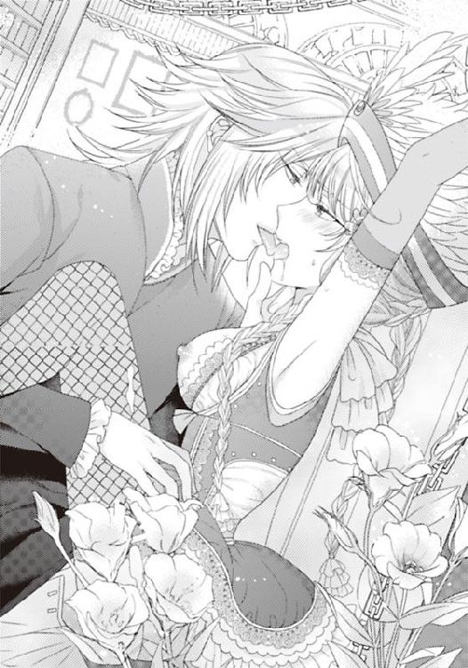
「む、もう......や......もう......」
「それは〝もっとして〟の合図だな」
口元がとても嬉しそうにほほえんでいる。
皮肉っぽいわけじゃない。本当に喜びを押さえきれないように、その雄々しい顔を歓喜に輝かせている。
黄金の獅子の髪は、汗ばんだ額に幾筋か張り付いて、ライラのストロベリーブロンドの髪も彼の首や胸元に吸い付いている。
「い......やぁっ」
もう、あそこがおかしくなりそうだ。
淫芯が欲望と愛撫にふくれあがって、痛い。膣道があまりに硬く熱した肉棒に犯され続けて、あの部分がひくひくと苦痛に喘いでいる。
「抜...いて......一度......抜い......て」
息ができない。
身体の中を巨大な異物が貫いている。
全身が、その異物に毒されている。痛みを全て快楽へと変える魔物に。
「この雄を、抜いていいのか？ 本当に？」
まだ少しも萎えていないそれを、フェイ・グランは小刻みに動かして、ライラの中を享楽に満たしているのだ。
「私......いや......」
こんな自分を、スイズルが見たらどう思うだろう。
彼が子供の頃から仕えてくれている人見知りのお姫様は、恐ろしいほど猛る男に見初められて、監禁されて、そして肉の奴隷にされている。
そう、奴隷。
今、ライラは奴隷にされていた。
言葉で責められ、敏感な乙女の部分をすべて、フェイ・グランのもので犯されている。
フェイ・グランのものを受け入れる乙女の器に。
フェイ・グランの愛を受け入れる、愛の女に。
性欲を開花させられ、彼なしにはいられないように教育されているのだ。
しつけられている。
こんなに有効なしつけがあるだろうか。
今までの一八年間、清く保ってきた乙女の身体は、スイズルの手ほどきもあってもう男なしにはいられないほど淫らにされている。
「ああ、もうこんなだな」
彼がライラの中から、まだイっていないそれを抜き出した。
「あ、あ！ あああっ」
悲痛な声。それは痛みではなく、今までに味わったことのない快楽を与えてくれる淫棒が身体から抜けていく、その苦悩の声だ。
抜いて欲しい、そういったのに、それがかなえられそうだというのに、肉体は、それを欲しくてよがっている。
ずっとずっと、中にいて、こすり上げていて欲しい。
そうしたら、この下品な快楽を永遠に感じていられる。
裸で、犯されて、あんあんとよがる自分は、冷静に見れば、淫乱な女だ。
ロマンス小説を読むだけでは飽きたらず、実際にこの肉体をハンサムで豪華で、強気で、傲慢で、独占欲の強い男に見初められて、否応なしに貫かれている。
犯されているのに、感じまくっているなんて、淫乱以外の何者でもない。
（これはまた、夢かもしれない......）
ずっとずっと好きでいた相手と結婚して、花で埋め尽くされたベッドで迎える初めての初夜。
そんな夢を抱いていた。
黒馬に乗った王子様。ハンサムな彼が自分だけを愛し。森の中や白亜の城の塔のてっぺんで、柔らかに抱き合って愛し合う。
「ほら。俺は知っている。おまえのこと......おまえがどれだけの熱を求め、男の何が好きなのかを」
嘘。知っているはずがない。
自分が好きなことは、図書館の隅で、淡い日だまりの中、しゃがみ込んで立てた膝の上に本を置いて読むのが好きだ。
柔らかな光と、頬をくすぐるほどの微風を感じて、本の中の話にとけ込んでいる時間がとても好きだった。
それは柔らかで、優しい日常。
他国からの侵略や、砲撃にあった城で、今はひとりでこっそり図書館で本が読める幸せだった。
こんな風に、肌がびくびくけいれんし、膣が自分の身体じゃないように激しくうねるなんて、想像もしなかったことが、好きなことなんかのわけがない。
城で、スイズルが肩掛けをもって来てくれたり、スコーンを焼いてクロテッドクリームを添えて紅茶と一緒に銀のトレーに盛ってきてくれる、そういうことがライラの幸せだった。
戦いも、喧噪もない、穏やかな時間。
なのに、ここにはそれらのひとつとして、ないのだ。
柔らかな日差しもないし、爽やかな微風もない。おなかも空くし、小説の本はない。そしてなにより、いつも片時もそばを離れないでいてくれる、スイズルがいない。
銀の眼鏡。黒い馬の尾のような見事な髪。毅然として、立つその優美な姿勢。
冷静でいて、ときとしてつっこみ放題つっこんでくる、嫌みなところもあるけれど、それは頭がいいからだ。回転が速く機知に富んでいる青年。
あの髪を束ねている鋲の革紐（ベルト）を、いつもとても不思議な気持ちで見つめていた。
懐中時計の鎖の輝きや、たまに彼がたてるその懐中時計の鎖の音も好きだった。
（スイズル......）
スイズルはどうしただろう。
どこにいて何をしているだろう。自分がいなくなったことを気づいているだろうか。
「スイ......ズル......」
「また言うのか。その名前を」
つぶやいた名は、フェイ・グランが体内に想いの丈を激しいまでに放出し、白濁した大量の愛の液体をライラの中で溢れさせたあとに唇に上った言葉だ。
無意識で、ライラ自身も、まったく気づかなかったのだ──。
朦朧とする甘い香り。脳内までもが蕩けてしまう、甘い香り。初めてここで囚われの身になってから、何日が過ぎただろう。もうわからない。気がつくと、いつしかライラはこの部屋で、縛られたまま、いつも彼の姿を待ちわびていた。
フェイ・グラン。この男は外見だけでも多くの人を虜にする魅力をギラギラするほどの力強さで放っている。
多くの令嬢にもてて、伯爵夫人にまで色目を使われるほどの色男だと聞いている。実際、彼が自分の仕事に都合のいい人物ばかり招待しているのだとしても、社交界の婦人たちは、皆こぞってフェイ・グランの豪華客船に乗りたがる。ステイタスでもあるそうだ。
（こんな......危険な客船なのに......誰も知らないのね）
「いつも......こんなことしてるの......」
「いつも？ おまえだけだ、この船を図書館に改造したのもおまえのせいだ」
またわけのわからないことを言っている。
ライラはここに来て、この図書館を見せて欲しいと言ったとき以外、この男に本が好きなどと告げたことはない、誰にも教えたことがない。
スイズルしか知らないことだ。
「あなた......おか......しい......」
「なぜ？ おまえのことが好きだから？ こんなに好きだからか？ ああ、そうだな。十分おかしいと自分でも思うさ！ 思い出してもくれない女を、これほど深く愛している！」
フェイ・グランはライラの両方の乳房を色づくほどに揉んでいたが、その乳房がまるで果実のように硬くふくらみ、先端が媚立していくのを見て、収まりかけていた欲情が再び頭を持ち上げていく。そして、ライラの濡れそぼっている足を大きく広げると、再び中央の爛れたように男を誘う淫唇の間に突き立てた。
ぬちゃりという乙女の蜜と、男の雄が触れあい、こすれ合う音が妖しく響く。
「う！ ああ、もう...むり......」
「無理じゃない。おまえだって、喜んでいるんだろう。ほら」
熱い声が言うとおりだった。たっぷりと濡れて、椅子の上までとろとろに濡れているその部分は、巨大な鬼頭を突き立てられても、はじき返すことはない。
めりっと隠微な音を立てて、ライラの中に先端を埋め込んでいく。
「ほら、入ったぞ」
先端が入ってしまえば、あとは抽送を繰り返しながら奥にそれを推し進めるだけだ。
「ああ、おまえの中は居心地がいい。熱くて......狭くて......締め付けてくる」
そんなことを口に出されると、恥ずかしくて死にたくなる。
「ま、また......な......の？ あ、ああっ」
中にはいってなお、それはさらに硬く怒張して、ライラの中を進んでくる。
内壁は十分に濡れているから、襞がこすられるたび、ライラの中にも痛み以上のとろけんばかりの快楽が大波のごとく押し寄せてくる。
この男にこれほどの快楽を教え込まされるなんて、屈辱的だ。
そう思うのに、どうしてか、身体はフェイ・グランを受け入れてしまう。
（どうして......私......こんな盗賊......嫌いよ......嫌いなのに）
「ああ、まただ。おまえが他の男のことを口にするたび、考えるたび、俺は嫉妬に狂って欲情する。欲情の悪魔になるから覚悟しろ！」
「あぅ......っ！」
ぬぷりと腫れたように色づく膣口を激しく割って、硬く屹立し、角度を持った巨根がライラのまだあまりなれていない細い内壁を激しく突いて削り始める。
太い男の雄が、ライラの淫芽を挿入のたびこすって、そこはそこで震えるほどの悦楽だ。
中をこすられ、雌心をいじられ、ライラは犯される喜びに熱く喘いだ。
「好きだろう？ これが」
低く囁く声は、本当に悪魔のように優しく、怖い。
「あ、は......う！」
動かれるたび、腰を強く押されるたび、ライラの腰まで覆う甘いストロベリーピンクの髪がもつれて、波頭のようにはかなく揺れる。
挿入されたふっくらとした唇が、震えてよがる。そしてライラの赤い唇も、その震えを音にするかのように、甘くとろける喘ぎを漏らした───。
どれほど長く彼の巨根を飲み込んでいただろう。
ライラのあそこは紅色に腫れるほど、その行為におぼれていたし、喘ぎ声を立てすぎて、喉はかすれ、唇はすっかり乾いている。
だが、今ここにフェイ・グランはいない。
ライラの白い両足を、桃色の突起が陰門から常に覗いているように開かせ、大きな玉座に縛り付ける。腕は手首をつかねたまま、またフックにかけて天井からの太い鎖に繋いだまま、彼は階上の仕事へと向かっているのだ。
ここには、ライラの身体を抱き、愛しいじめるためにやってくる。食事も彼が食べさせ、身体も彼が蒸しタオルで拭いてくれる。夜もたいがいここでライラを抱いて眠る。それで、おおよそ昼と夜がわかるようになっていた。
「───う」
甘い空気に浸されて、淫靡な快楽だけに敏感になる身体。意識はほとんどなかった。
敏感な部分を引き裂かれ、粘膜をこすられ続けた痛みと、そして柔らかな乳房やお尻を指で掴まれてはいじられ、感じた淫愛。その罪のように、罰のように、ひりついた痛みが残る。愛撫で熱く燃えるからか、裸で置かれても、寒さはほとんど感じない。
（───私......どうしたらいいの？ スイズル......助けて......あのとき声がしたのはスイズルじゃなかったの？ あのときあなた、図書館にいたのではないの？）
涙さえ、涸れている。喉も枯れ、唇も乾いて、ただフェイ・グランがここに来て濡らしてくれるのを待つだけだ。ひどい男なのに、抱いて欲しい、愛して欲しい。
彼がどうしてあれほど傷ついているのかわからない、ひねくれた形でしか、愛を示せない。
『───大丈夫......大丈夫...私は忠実なるあなたのしもべ。愛しています。命をかけて』
いつも、いつも、子供の頃から傷ついたとき、泣いたとき、そう優しく言ってくれていたのはスイズルだった。
なのにどうしてこんな肝心なとき、来てくれないのだろう。やはり、フェイ・グランに海に突き落とされてしまったのだろうか。
「スイズル......フェイ・グランがあなたに何かしていたら......私......ゆるさない......」
もう何を口にしていて、何を頭の中だけで思っているのか、わからなくなっている。
だから、その言葉を、〝短気で、流血沙汰が好きで、血の伝説に彩られた〟フェイ・グランに聞かれていたとは思いもしなかった。
「おもしろい、俺は何をされるのかな。俺をだまし、好意を踏みにじり、スイズルとの約束だけ守ろうというおまえが。俺に何をしてくれると？」
重いマントが翻る音がした。
ライラは彼が硬質のブーツのかかとを鳴らし、怒りをあらわに近寄ってくるのを感じて、恐怖と快楽に身を震わせる。靴音がすぐそこで止まって、髪の中に顔を埋めるライラの顎をおもむろにつかんできたのはフェイ・グランだ。
「ねえ、愛しいライラ、俺に何をしてくれるって？ もっと可愛い声で啼いてくれるか？ それとも十四年も昔から深く傷ついている俺に、優しくここで愛撫してくれるのかな？」
フェイ・グランはライラの乾いた唇に口づけ、舌に舌を絡ませてくる。愛撫に飢えたライラの唇は、すぐフェイ・グランの唇にむさぼりついて、そして舌を飲み込むばかりの勢いで吸い取った。透明な体液はすぐ、二人の口を濡らして、輝かせる。
「もっと......して......」
ライラはせがんだ。ここで愛され、甘い香りに満たされて、縛られていると誰かと繋がっていたくなる。肌が恋しくて仕方ない。
「嘘を認め、謝罪するのではなく、俺を断罪しようというのか？ 逆ギレか。え？」
ゆるゆるとライラは視線をぼうっと開けた。
恐ろしい声、怒った顔。なのに睫の先に見える彼は、なんという美しい顔をしているのだろう。どんなにあらぶっていても、人を殺せる盗賊ではなく、黄金の王子なのだ。怒れば怒るほど威厳を感じさせる勇姿になる。
「愛して......欲しいの？ 謝って欲しいの？ だったら普通に話してちょうだい」
「ああ、本当にうるさい口だな。もっと大きなものを咥えるか？ え？」
フェイ・グランは、忌々しげに舌打ちすると、おもむろにライラの腕をつっている鎖を手でわしづかんで引き下ろす。
「あ」
ライラの腕は少し自由がきき、少しだけ下ろせるようになり、顔の前に手首を持って来られる。つかねられ手首を縛られた手で、涙をぬぐうことができるくらいだ。
だがフェイ・グランは、またすぐ、ほっとしたライラの身体を自分の思い通りにし出したのだ。
「きゃ」
ライラの顔を玉座の背もたれから前面に下ろして、そして下ろしたズボンの中から引き出した肉棒を咥えさせる。
「う......っ」
まだ、柔らかく萎えていたフェイ・グランの肉棒は、すんなりと口腔に収まったが、だがライラの温かで、ぬめりのある舌と口腔で、丹念にこすられたそれは見る間に充血して、熱い欲望をたぎらせ始める。
「あ、うう」
ライラは呻いた。
男のものが、口の中でこんなにすぐに硬く、大きくなっていくものだとは思っていなかった。
（フェイ・グラン......スイズルとどういう関係があるの？ 私と......どういう......）
ライラは口に男根を収めさせられ、しゃぶらさられて、それでも、フェイ・グランに対する愛を感じずにいられない。なぜか、懐かしい。彼を知っているような気がしてきた。
ひねくれ者で、ついかっとして暴力的に言葉を吐くが、それはたいがい自己防衛。
弱い自分を見せたくない。だから後悔して、また愛して欲しくなる。
（愛してあげる......たくさん、たくさん。舐めてあげる。愛撫は......繋がりが信じられる最後の砦）
喉の奥に次第に硬く熱く燃えるものが張りつめていき。もう喉の奥を圧迫して息ができないほどになっている。
それでもなぜが、彼のそれを激しく痛めつけようとは思わなかった。
苦しくて舌を動かすたび、口を、顔を動かすたび、フェイ・グランは、心地よさそうに軽く呻いたのだ。
これが気持ちいいのだろうか。こんなことが。性器を舌で舐めることが、口で慰めることが？ 思えば、ライラの読んだ小説でも、そういうシーンはたくさん出てきていた。
ヒロインがヒーローのそれを舐めて愛してあげるのだ。
「俺の女になれよ。俺の命令には何でも従い、何でも言うことを聞くんだ。そうしたら......俺はおまえを......世界中の誰より幸せにしてやる」
「うぐ......んんっ」
彼がしゃべるたび、彼が手を置いているライラの長い髪が引きつれる。彼の手は、いとおしそうにライラの髪に指を絡ませ、そして、後頭部をしっかりと自分の方に押しつけている。
逃がしたくない、愛しくてたまらない女性にでもするように。
その視線はライラの喘ぐような切なげな顔を見つめていて、ライラはくわえ込んで、汁を流す姿が少し恥ずかしくて睫の縁を伏せている。
すぐそこのフェイ・グランのたくましいものや張りつめた肌を見て、胸が高鳴る。
「ううう、んぐ」
彼の中から、熱くとろみのある液体がほとばしった。
「───ん、ぐ」
そして一気に愛を極めた白濁したものが、ライラの中にほとばしる。本当に息が止まるかと思った。
「飲んで......くれ。それを......全部飲み込めよ。ライラ」
「───......」
恥ずかしい。そう思ったが、黙ってそれに従った。青臭いような、そんな香りがしてきたが。フェイ・グランの身体の一部。そう思えば平気、彼の性器をそっと舌で舐め取ってやる。
「ライラ、ライラ。おまえは俺を哀れんでいる？ そうなのか？ 心ではスイズルを求め、俺のことは負け犬だと哀れんでいるのか？ それとも、男なら誰でもいいのか？」
ライラには答えられない。
「──そうなのか？」
フェイ・グランの苦悩の声。そして、その言葉は自分自身にむけたようなものだったが、彼はいとおしそうに撫でていたライラの髪から指を離すと、突然、立ち上がってマントを羽織った。
「───わかった。ではしばらく俺はここにこない。このまま放置してやろう。それでいいな？ スイズルの方がおまえは愛しているのだろう？ ずっと、そばにいておまえを見ていたスイズルが」
ライラの唇からそれを拭き取り、喉をワインで満たしてやると、フェイ・グランはライラの腰を掲げ上げ、そして不思議な形のおもちゃをそこに装着したのだ。Ｕの字になっている突起が周囲を取り巻いている張り型だった。ディルドともいう性的な玩具。
「こんなに身体が欲していたら、男なしでは辛いだろう。俺の留守中これを入れてもだえればいい」
それは、身体に沈められていく途中、ライラの肉壁を妖しいまでに擦り上げ、突起が激しく中を乱す。
「ん！ うううううっ」
腹部が張り裂けんばかりの痛みと快感。その形は前の淫芽を妖しくはじき、女淫を太いもので貫く。そして後ろの蕾にも、それなりの形のものが同時に侵入して中で暴れるものだった。
「ああ！ ううっ！ ふっぅんっ」
可愛く目を閉じ切なげに眉を寄せ、唇からこらえきれない喘ぎを漏らす。冷たく中を冷やすのは、許し難い苦痛だった。人のものではあり得ない形。あり得ない無数の突起物が、ライラの膣を乱れた快楽に誘う。
フェイ・グランの手による、玩具の挿入は途中までだった。そこからはライラの自重で挿入が行われるのだ。
玉座に身を落とされたライラは細い腰をひねり、踊るように上体を激しく振った。
「ああ、あん！ あん！ あん！」
ぬぷぬぷと、蕩ける蜜を掻き出しながら、その二本の繋がりあった突起物は深く深く入り込んで中でぶつかり合っていく。先端は敏感な淫芽をはじきこすり、ライラは失神寸前だ。
（やめて......やめて......気が狂いそうっ......）
はあはあと、喘ぐライラは、両手を再び鎖で挙げられ、ぶら下がるような姿勢で身を捩る。
革のシートは、早くもたっぷりの蜜に濡れて、シミを作ってしまっている。
「───っ！」
「二七歳の誕生日がこんな風に迎えられるとは、俺はとても幸せものだ」
自嘲気味に言って、フェイ・グランはライラのしなる裸体をあとにする。
「誕生日......なの。おめでと......う......フェイ......ああっ！」
ライラは甘い声で、熱い吐息の中で、とぎれとぎれそう囁く。
「───！」
マントを揺らし、振り返ったフェイ・グランは震えが走りそうなほど、冷酷な笑みを浮かべた。
「ああ、やはりスイズルは邪魔者だな。いとおしいライラを独り占めするには、あいつは殺しておこう、探し出して抹殺だ。裏切り者は必要ない。嘘つきな弟は必要ない......」
「とう......と？」
心臓が止まるかと思った。
「───邪魔者は、殺す」
フェイ・グランは、またライラを睨んでそういった。
「今この客船の中のどこかに隠れ潜んでいるあいつを抹殺してやる。そうしたら、俺はこれほど嫉妬心に灼かれずにすむ。そうだろう？ 一人の姫を愛するのに、二人の王子は必要ない」
「───おとう......と......？ 一人の......姫に、二人の......？」
ライラの中で、何かはじけた。踊り子としての試験のとき。二人ともなんの反応も見せていなかった。初対面だとばかり思っていたのだが二人はときおり冷えた火花を散らしていた。スイズルだって、フェイ・グランのことを知っていたのだ。詳しいはずだ。兄弟。父親の違う兄弟だ。
「あいつは俺を知らないと言っていたんだろう？ だからもう兄弟でもなんでもないな。もともと同じなのは母親だけだ。あいつは母親そっくりの〝裏切り者〟だ」
ライラはディルドに二つの蕾を犯されながら、中を激しく動く突起に身を捩り、背中を弓のように反らしては耐えている。二人の恐ろしい過去が、蘇ってくる。辛かった過去の記憶がのしかかってくるようで、ただおびえてフェイ・グランの顔を見る。
「待って......あなた......名前......違った？ おにいさん......」
「俺はおまえの兄じゃない......会えずとも、ずっとずっと遠くから見守っていたおまえの恋人だ。母にも暗殺者にも怯えず負けない武力と権力と財力を身につけたフェイ・グラン。そして義賊〝ブラッドレッド〟。そしてこれからおまえを嫁にする。おまえがそれを望むのなら元の地位をも奪還してやる」
フェイ・グランはまた恐ろしい顔つきになる。
「奪還......まって......もしかして......スイズルとフェイ......フェイトラス・ミルト・デ・グランバルス......」
思い出してきた。
思い出せそうだ。彼らは確か──。
「奴のそういうこずるいところが嫌いなんだ。俺にだけやっかいごとを押しつける、大嘘つきの詐欺師」
フェイ・グランは鼻先で笑い、本心からスイズルを疎んでいるように吐き捨てる。
「───大嘘つきの詐欺師とは、ひどい言われようですね」
フェイ・グランが、きつく眉を張り振り向いた。
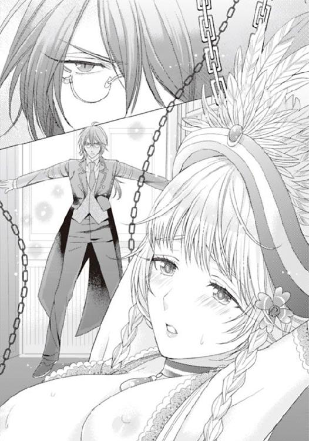
いつの間にか、あのライラがやってきた隠し扉が開いていて、そこに一条の光が差している。光を背に影となって現れていたのは、黒髪を背中に滑らせて立つ、スイズルだった。
「スイ......ズル......」
ライラは、身体を捩って背後を見ようとしたが、両手を上に掲げられたまま縛られて、そして下半身は椅子に杭打たれている姿では、身動きできない。
身を捩っただけで、頭上の滑車の鎖が鳴り、サボテンのようなディルドゥが、ライラの中を前も後ろもかき乱した。
「ああっ！ はうん......っ」
ライラが喘ぐ姿を、スイズルは冷静な目で見つめている。あきれているのだ。そう思う。
「ライラ様......」
乱れた姿のライラに近寄り、スイズルはためらいなく汗に沈み、桃色に染まる肌を抱きしめる。
「スイズル......私......こんな......」
突然、銃声が響いた。
スイズルの肩が裂けて、血がにじむ。
「スイズル......」
彼の背後で、銀色の短銃を構えたフェイ・グランが悠然と立っていた。
「ライラに、近づくな。それはもう俺のものだ」
それまであれほど体中が火照って、フェイ・グランを求めていたのに、彼に貫かれて、よがり声を上げていたのに、スイズルを前にして、そんな欲望の熱が流氷の海に浸けられたかのように冷えていく。
肌も。冷たく凍っていく。
「フェイ・グラン。ひどいわ......どうして......」
「かすり傷だ。騒ぐには及ばない。この私室に侵入してきたら、容赦はしないと誰もが知っているはずだが？ それにディスラートはどうした？ 彼がおまえをずっとマークしていたはずだろう？」
スイズルは酷薄の笑みを浮かべた。
「どうしたのでしょう。私もお嬢さまを捜すのに必死で、行動をよく覚えておりませんが。船内を何日も探索しつつ、警備の男たちに殺されないようするのに大変でしたから」
「ふん。本当に嫌みな奴だな。自分でライラをここまで連れてきて、そして今さら取り返すつもりか？ ダメだ。もうライラの身体は俺専用に仕込んだからな。そら」
銃を構え、スイズルを牽制しながらフェイ・グランがライラの頬をそして滑り落ちるように髪を触れながら桃色に色づく乳房をわしづかむ。
「ふうっ......ん！」
しどけなく漏れる声。止めようとしても、この部屋で、調教されてから、ライラの身体は自分の言うことを聞いてくれなくなっている。
「スイズル......わたし......変なの......許して......」
「信じておりますから。お嬢さまの心を。何があっても。ですから、私は命を賭してもお嬢さまを守ります。守り抜きます」
フェイ・グランは、スイズルを見て嗤った。
「そうか。それほど死にたいのか？ だったらどうだ？ ともに彼女を愛し合おうじゃないか。ライラは我が妻になる。おまえがもくろんだとおりにだ。そしておまえはここでライラを抱いたあと、消えてもらう」
「───ともに愛す......とは」
「迎え火を投げ合ってもお互い怪我をするだけだ。彼女はもう十分成熟してきている。ここも、ここも......」
「ふ、あ......っ！」
双葉の間に突然銃口の先を入れられて、氷のように冷たいそれで淫芯をいたぶられる。そのまま入っているディルドと合わせるように先端を挿入されて、ライラはのけぞるように艶めかしく身を捩りながら、はあはあ喘いだ。無茶をされればされるだけ、感じてしまう。そんな姿をスイズルには見られたくない。
「これは、この部屋に充満する、催淫剤のせいでしかない。すぐ、この香りを止めてください。フェイ・グラン。そうすれば彼女は正常な判断で、愛を誓うでしょう......」
「それはどうかな。もう手遅れだろう。開発された肉体は、もう処女には戻らない。彼女はもう十分に感じている。肉体は熟れてきているし、ありとあらゆる女帯が感じやすく、より敏感になっている、ほら、この垂れ流れる蜜を見てみろ。スイズル。これは前もって、君が開発していたおかげかな」
「───！」
フェイ・グランは双葉からしたたり落ちる蜜をすくうと、指先でその透明に艶めく蜜を見せ、舌先に落としている。それでもまだあまりあるライラの蜜を、今度はスイズルの唇に挿入した。
スイズルは、なされるがままで、表情一つ、変えもしない。
「彼女を一緒に愛してやらないか？ その方が彼女も喜ぶ」
「───それは、私に対する挑戦でしょうか」
冷ややかなエメラルドがフェイ・グランを見据えた。
「挑戦......ではないな。いうなれば、十四年ぶりの共同作業じゃないか」
「私は......くだらない争いは避けて通る主義ですが、お嬢さまが絡んだことは見逃せません」
「そうか？ それはいいね。好都合だ」
フェイ・グランが、また嗤った。嗤いながらライラの中にめり込んでいる突起つきの張り型を前後しながら抜いてくる。ライラははあはあ喘ぎながら身を捩った
「受けて立ちます。お嬢さまを愛することにかけては、負ける気がしませんから」
「スイズル......」
「いえ、必ず勝ってみせましょう」
「先にイカせた方が勝ちかな？ ルールはかなり難しいが、どちらが気持ちよかったか彼女の喘ぎの淫乱さで決めるのも、絶叫で決めるのもありかなと」
「承知しました」
「前と後ろ、どちらを取るか？ おまえはどちらが好みかな？」
だがフェイ・グランが訊くまでもなかった。スイズルはライラの背後に回り込んで、火照りつつある白い女体と玉座の間におもむろに身を滑り込ませ、ライラの太ももを担ぎ上げると、自身をその下にする。
そのときには器用に下半身は自由に解き放たれていて、ライラの後ろ側を攻めてきたのだ。
「あ......あ！」
スイズルの足の上で、ライラは喘ぐ。彼の身体が入り込んだ分、ライラの腕にかかる吊られた痛みは和らいでいる。
その腕の角度が変えられたことも、ずっと自重で貫かされていた張り型が抜けたこともライラにとってはほっとできることだった。
スイズルの方がよかった。
優しさのない、性の玩具より、男性自身の方がどれだけかほっとできる。
だが、そう思えたのもつかの間だった。
挿入され始めるスイズルのそれは、限りなく、巨大に、そそり立ってきていたのだ。
「───ひう......っ」
ほっそりとした少女の全身が、ひくりと震え硬直した。
「お嬢さま。私の、愛のすべてを、あなたの薔薇に注ぎ込みます」
ぬぷりと体内で音がした。
後ろの部分が大きく押し広げられて、今までにない感覚にライラは腰を引き気味にする。
だが、腰を引くと、スイズルの挿入している膣の媚肉が大きくうねった。
「う......はぅ......ああっ！ ああ！」
喉もかすれて、ひりひりしてくる。
なのに、あれほど巨大な雄で貫かれ、いたぶられているその部分は痛みよりも激しい快楽に覆い尽くされている。
「う......ふ......、あっあっ」
腰を動かされるたび、声が漏れる。
のけぞらせた白い喉に、スイズルが唇を押しつけた。
汗を舌先でくすぐるようにしていたが、途中からたまらないように、広げた舌で、白い肌を舐め回す。
ライラの感じてのけぞる白い喉は、ごくりとつばを嚥下した。
あらゆる部分が敏感にされていた。
スイズルに調教されて、性感帯はもちろんのこと、指の先から、内手首の関節、耳の中まで、舌で舐められればうちふるえる快楽が、襲ってくる。
「も、もう......」
「なんですか？ 我が姫君」
もう、ダメだと思った。失神しそうだ。
なのに、それまで、前方で二人の性技をじっと見つめてフェイ・グランまでもが玉座の前に立ちはだかり、マントをかなぐり捨てたのだ。
ライラの足を担ぎ上げ、玉座の肘掛けの上に足全体を載せてくる。
そして見るも恥ずかしい、その乙女の淫芯までもはっきりと見えるほどそこを押し開くと、自らの興奮でそそり立った猛々しいものをそのひくつく淫口に押し当てた。
「あ、ああ......ん！ う、ああああああああっ」
それまでもスイズルの性技でとろとろと流れていた蜜が、フェイ・グランの挿入で蜜口にたまっていた大量のものがあふれ出す。
くちゅくちゅと、彼のそれが入り口から攻め、入り込むたび、そこから妖しい淫音がほとばしった。
フェイ・グランのそれを、待ち受けていたかのように、ライラの甘く爛れた肉襞がからみつく。
襞がこすり上げられ、少し引かれては、また一気に貫かれる、その硬軟のある不定型なリズムに、こらえきれなくなって、びくびくと全身が激しくけいれんした。
「んん！ あ！ だめ......もう......ひあぁぁ......う......んっ！」
頭の奥から、てっぺんまで電撃が流れたように、快楽のしびれが蔓延する。
背後から挿入していたスイズルが足を激しく振動させ、膝の上でライラの身体を弾ませる。その弾みのたび、抜きかけて、落とされる媚肉はこすられ、突き抜かれて、失神寸前だった。
「いや......あぁ！ や、めて......もう......もう！ だめ......っダメなの......ぉっ」
ライラは悲鳴を上げて、大粒の涙をぽろぽろ流す。身体のしびれと快感が、絡み合い、体内ではスイズルの雄とフェイ・グランの雄が肉壁を貫いてぶつかり合っているかのようだ。
二人のそれぞれの振動が、ライラの中で見事に同調したとき、ライラは頭の先までけいれんを走らせ、甘い快楽の絶頂を味わった。
そしてライラは歓喜の悲鳴を上げ続け、汗で濡れた喉をそらし、背筋をくねらせ、縛られたままがくりと頭を落としたのだ。
「......お嬢さま。申し訳ありませんでした。頭より先に身体が動いてしまったのです」
「スイズルらしくない......わ」
フェイ・グランは、片足を立て、背をソファの背後に押し当てながら。考え込むようなポーズで果てている。
「目の前でお嬢さまが他人に取られようとして、どうして平静でいられましょうか。この冷えた身体が、燃えたぎるようになって、熱くて、熱くて、そして気がついたら......あなたを......フェイ・グランとともに、兄フェイトラス・ミルト・デ・グランバルスと......抱いていました」
「スイズル・テリウス......あなたはとても冷静に見えたのに......」
「そうでもなかったということですね」
やはりいつも通り冷ややかだ。いや、よくのぞき込めば、彼のその緑の瞳が、火種を持ったエメラルドのごとく強く光り輝いている。
「後悔は......していません」
スイズルは、黒髪を一筋、頬に張り付く、二筋、首筋とはだけた胸元に貼り付けながらうっすらと嗤う。
「こんな風にとらえられてしまったのに？」
「ええ」
ライラはもちろん、縛られたままだが、スイズルも椅子に縛られ、足には鎖のついた鉄の枷をはめられていた。
「もしかしたら、このまま海に沈められてしまうかも知れない。私たちがあの書物を取りに来たこと、ばれていたのよ。フェイ・グランは知っていて、私を図書室に誘い込んだの」
ライラの玉座の足下に座り込むようにしていたスイズルは、冷ややかな顔で告白する。
「違いますよ。誘い込んだのは私です」
「え？ でも......」
「あなたをグランドライブラリーに閉じこめたのも私です。そしてあなたがフェイ・グランを愛するようになればいいと、願ったのも私なのです」
「な......に？」
ライラは思わず顔を上げ、乱れたウエーブの髪の中からスイズルを見つめる。さっきまで二人の男に前後を抱かれ、差し抜かれて、喘いでいた不謹慎な自分だから、恥ずかしくて、目を合わせることができない。
「どういうこと？」
「私はお嬢さまの幸せを願っています。お嬢さまを愛しているからこそ、フェイ・グランにお嬢さまを預けたかったのです」
ライラはただ意味もわからずスイズルの顔を見る。
「私よりも、フェイ・グランの方が、お嬢さまを幸せにできる。愛していると素直にいえるようにしてやりました。フェイ・グランは昔から意地っ張りでみえっぱりで、痛いところを突かれるとすぐ虚勢を張ってわめいたり怒鳴ったり、逃げたりする。そういうところをすこしは直さないと」
「どうして......フェイ・グランなの？ 盗賊なんでしょう。私の城のものを奪って逃げているんでしょう？ 〝黄金の花園〟はまだ見つかってないわ」
ライラがスイズルにそう迫ったとき、白テンの毛皮の上に座るフェイ・グランがこちらを見上げた。
「やはり、ここには二人で何かを奪いに来たんだな。スイズル。女王の王錫か？ だがしかし密かに俺を突き止めていたとはな。本当に油断のならない奴だ。もっと早くに殺しておくんだった」
フェイ・グランがゆるゆると身を起こしてそしてシニカルな笑みを漏らした。
「──それで、一体どちらかな？ ライラ」
「え」
「俺とスイズルとどちらがおまえをいかせた？ おまえを感じさせた？」
真面目に見つめられて、何も答えられない、どちらを選んでも溝ができる。
母親の違う、兄弟に。
（兄弟よね......母親が同じ。父が別の......）
「弟殺し......ですか？ そうしておけばよろしかったと思いますよ。そうしたら、私にお嬢さまを奪われそうにならずにすんだのに」
「相変わらず大きな口をきく。その生意気さと強気さが俺は大嫌いだったが、十四年たっても治ってないようだな」
「治そうと思ったことがございませんからね」
「スイズル、どうして...」
スイズルが何を言っているのか、ライラにはわからなかった。
「どうして、私がお嬢さまを閉じこめたか、ですか。もともとこの船に乗るようにしたのも、私です。この船でお嬢さまの記憶を開花させたかった。このお体も、心も」
「はあ？ なんでおまえの思惑で俺の大事なクイーン・ライラ世に乗ってきた？」
「ライラ様が踊り子希望と聞いて、小躍りして乗せたがったのはフェイ・グラン様では？」
「なんだと？ 殺されたいのか」
フェイ・グランが立ち上がり、銃口をスイズルに向ける。
どうして、火花を散らせながらも、子供の口げんかのような言い合いを続けているのかわからない。
そんなことより、ライラは、スイズルの入ってきた空気の流れのせいで、身体に纏わりついていた、甘い香りが消えていっているのを感じて、身を捩った。
「いや......」
ライラの中で、また甘い香りが欲しくなる。欲しくてたまらない。この欲望はスイズルがいても収まらない。
「どうした？ ライラ」
「寒い。身体が寒い。頭が痛い。香りがどんどん逃げていく。早く閉めて。そこを......早く......」
甘い空気が身体の周りからなくなっていく。フェイ・グランがわずかに開いていた扉を閉めると、シャンデリアのキャンドルの明かりはまた、きらびやかに天を目指し、黄金の輝きを見せながら揺れている。そして燃えれば燃えるほど、甘い香りは元のように強くなってライラの花の中、肺の中一杯、満たすのだ。
「ああ、そう、いいわ......イイわ......」
どうしてそんなにその香りが好きなのかわからない。
でももうこの香りなしにはいられない。それほど愛する香りになった。
「ライラ。もっと香りを与えよう、ほら」
キャンドルを、ライラの足の間に立てて、香りを思う存分吸い込ませてやる。
足の間に蝋が垂れては熱いから、ライラはそれをきちんと立てていなくてはならない。
なのに、不意に、フェイ・グランは手にしていたディルドゥのスイッチを入れたのだ。
「ふあ」
いつの間にか、また挿入されていたあの張り型のみだらな震動。気持ちよくて腰が揺れる。
うごめくあの中に挿入されている張り型が、うねうねと内壁をこすりかき混ぜているのだ。
「ああ、あああっ」
声が漏れる。
甘い香りに包まれて、性の刺激を与えられれば、もう何も考えられない。愛されている幸福と、愛を深く肉体で感じられる隠微な悦びでライラは足にキャンドルを挟んでいることも忘れて、思いきり腰を振り動かした。
「ああ、いいわ......すごく......いいの......」
ぬるぬるとした張り型が、中で暴れるのが、これほど気持ちよくなると思わなかった。
「どうだ？ 我がライラは美しく成長しただろう」
「遊びの行為はおやめなさい、本当に愛しているものの神聖な膣内に、あのような玩具は......」
「ライラが挿れろというのだから、文句はないだろう」
「ライラお嬢さま」
はっとしてスイズルを見た。
スイズルがフェイ・グランから奪った張り型のスイッチを止めたのだ。
「いや......いや......」
ライラの中で何かがすうっと冷めていく。
身体を燃やす、熱い淫動が止められて、そしてちょうどわき上がりかけていた快楽の蜜も、行き場をなくしてとまどっている。
それなのに、そこにはスイズルがいる。
相変わらず冷たい目で、ライラのことを見下ろしているのだ。
「お嬢さま。淫らすぎではありませんか」
「───っ」
スイズルが、自分を見ている。彼の視線が、急にライラの思考を正常に醒ましていく。
張り型に身を置いて、自分で腰を沈め、快楽の壺に押し当てている恥ずかしい姿を、スイズルに見られた。ライラは快楽に慣らされて、いつも感じていたい身体にされている。
そしてライラは改めて、自分のいまのあられもない姿が恥ずかしいものだと正気づく。
腕を縛られ、フックで吊られ、それを鎖が頭上に掲げ、足は大きく広げられて淫芽を覗かせ、いつでも男を欲しがっているようなポーズをしているのだ。
実際に、フェイ・グランがこの部屋に来れば、すぐに口づけを全身に散らされて、そして巧みな唇が下半身に降りていくやいなや、ライラの淫芯は蜜を吹いて濡れ始め、腰は巨根を求めて早くもゆるゆると揺れ始めるのだ。
ここではライラは調教された愛姫だった。
男に愛されるためにだけ、部屋に囲われた存在。
男の愛を一心に受けるのだけを悦びとして、日々、それだけを悦びにして生きる、つながれた女。
とらわれ、囲われた、愛の乙女だ。
「どちらがいいか聞けないうちに、張り型に負けるとはな。スイズル。おまえの愛もまだまだ」
「あなたが、ここまでする理由はなんですか？」
「どうしてもライラは俺のものにしたい。おまえにはもう渡さない」
フェイ・グランはライラが火照りながら意識を失っているのを見て、スイズルに銃口を向けた。
「おまえには、大切なお嬢さまを抱く機会を与えてやった。心の広い兄だからな」
「そんなところを狙っても無駄です」
黒い上着ははだけ、白いシャツの胸元を銃口は狙っている。
「さっきのは、脅しだったが今度ははずさないぞ。どう調教しても、ライラはおまえを執事として求めるだろう。俺はそれさえ、もう我慢したくない。だからおまえの心臓を」
「そんなことはしない方がいいです。私がこれを手に入れているのだから」
スイズルの手には修道院の書類があった。過去、扱った特殊な子供の正式経歴。そして預け先の記録が、それには成人まで記載される証書なのだ。
「これ、やっとフェイ・グラン様の書類入れから見つけたんですよ。警察に見せるか、新聞社に売るか、それとも......王室警察に売ろうかな、と思いまして」
にやっと可愛らしく眼鏡の奥で嗤う瞳を、フェイ・グランはぎりぎりと歯ぎしりしながら睨みつけたのだ。
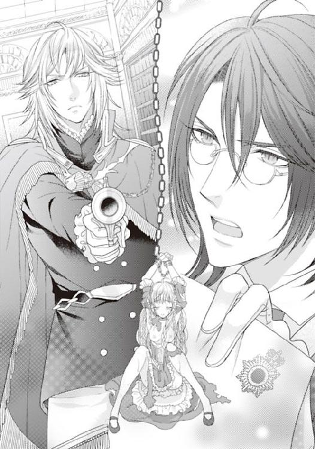
７ 秘密の過去には苦いココアで
『───ライラ......』
『───ライ......ラ......』
ぐったりと果てたライラは、甘い香りの中、何か懐かしい記憶の中に漂っていた。
クマのぬいぐるみが窓辺でひなたぼっこをし、大人も乗れそうな白馬の木馬が日差しをよけるように部屋の片隅で休んでいる。
ここは、本の香りがする子供部屋だ。
白いレースのカーテンから、かすかに差し込む細やかな光。そしてかすかに開けられている窓から流れる微風。
赤毛のライラは、膝に絵本を載せていた。
祖父にもらった、ウサギの絵本だ。
でもふと、喉が渇いて、そして少しおなかが減った。
『ねえ。お願い。ココアを......ちょうだい。甘くていい香り』
『ココア、もっと欲しいの？ ライラ』
『ココアなんて、まだおまえは飲んではダメだよ。それにはいやらしくなる成分が入っているって知らないのか？ ライラはものを知らないな。危なっかしいぞ』
『いやらしくなる成分って？』
『───』
二人のいとこが、顔を見合わす。緑の瞳。黒い髪のはかなげでどこか理知的な顔立ちの少年と、黄金の髪で、カリスマがかった存在感を放っている少年。力強いロイヤルブルーの瞳に、髪の一部に赤いメッシュが見えている。
『こういうことが毎日毎晩したくなるんだ』
そういって、黄金の獅子のような少年が、ライラの唇にキスをしてきた。
『あ......んっ』
『ずるいよ、フェイ。僕も』
『スイズル、おまえは後出しじゃんけんみたいなことばかりするんじゃない』
『これは後出しじゃんけんじゃないよ。僕もココアを飲んだから、いやらしくなったんだ』
そういってスイズルもライラの唇にキスをした。
黄金の少年よりも少し長くて、そしてライラの唇に残っていたココアの甘いとろみのある液を、舌先で舐め取るような、その年頃の少年にしてはかなりきわどい口づけだった。
（あれは......あのときの光景は......夢？）
夢だろうか。いつも城には多くの子供たちが遊んでいた。母が、子供好きで、戦争や飢餓で家庭にいられなくなった子供たちを修道院で世話していたのだと、あとから聞いた。
その黒髪で、緑の目の少年と、黄金の獅子のような少年も、そういった、家庭に事情のあった子供だったのではないかと思う。
（それとも......本当に......私のいとこだったのかしら？）
当時の記憶はほとんどない。
嫌なこと、怖いことがずいぶん重なったせいだと、父があとで慰めてくれた。
海岸向こうから、英国が攻めてくるという噂が立った。〝王室を揺るがす危険分子の少年がアイスイル城にかくまわれている〟そんな噂が英王室の周辺に立ったのだそうだ。
のどかな島国であるアイスイル城を守城とする王国は色めき立った。噂はデマだと伝令を送ったのだ。なのにその一週間後、対岸か、湾に浮かべられた戦艦からか、夜中に砲弾が数発、城に向かって撃ち込まれたのだ。
誤発射だったという謝罪を受け入れたが、本当は狙って撃ったのだろうと父はそういっていた。
それで、当時の中庭も子供部屋も、砲弾で飛ばされた石塀の石が飛び込んできて、大破してしまったのだと、聞いた気がする。
（ああ、そう、子供部屋は壊されてしまったのね......思い出したわ。あの懐かしい本たちも、クマたちも、大きな木のトランクも、おじいさまからいただいた、お下がりの革の旅行鞄も......何もかも失われてしまったかしら......）
革の表紙の本もあった。子供たちがそれぞれに書いていた幼い日記や、聖書や、英国の女王の立派な肖像画も、なぜか子供部屋にあったのだ。
『───ねえ、どっちのキスがよかった？』
（どっちのキスが......？）
あのとき、期待して見つめてくるエメラルドの瞳と、ロイヤルブルーの瞳。私はどちらを選んだのだった？
二人ともそれぞれに好きだった。
細かなところによく気がついてくれるエメラルドの彼は、どちらかというと寡黙で、自己抑制型。ひとりで考え事をするのが好きだった。
けんかっ早いところがあって、でも正義感で、何でもまっすぐ突き進む、負けん気の強いロイヤルブルーの目の少年。
ライラが四歳。少年たちは一三歳ほどだったと思う。
そう、いとこ同士だとか、半分だけの兄弟だとか、大変高位の貴族の出目だとか、そんなことを大人が話していたような気がした。
はっきりはしないけれど。
「ねえ、ライラ。どちらがよかったんだ？ え？」
「お嬢さま。さあ、遠慮せず選んでください」
今のは、大人になっている彼らの声？ それとも......。甘いココアの匂いで胸が詰まる。大好きだけれど、あまり飲みすぎると甘すぎる。でも、ないと言われるとものすごく欲しくなって。なんとしても、ねだってでも飲みたくなる。
「飲みた......いの......」
「精液か？ いくらでも飲ませてやるぞ。俺の活力。命の源の、せ......」
フェイ・グランが、唇をライラにすり寄せるようにして、汗ばんで上気しているライラの頬をそっと撫でる。その彼の腕を、スイズルが乱暴に引き離した。
「───フェイ・グラン。軽い名前と同様に、ずいぶんと下世話な返しをなさるようになりましたね」
「気取り屋に、言われたくはない。俺は......おまえのような大嘘つきにはなってないぞ。本当に性格が曲がった奴だな。俺を陥れるためにライラに盗賊だの、城の古本を盗んだのと吹き込んだって？ おまえのような悪魔の舌の持ち主は、俺がその息の根を止めなくてはなるまいな。この俺の豪華客船の空気を最後に吸って逝けるのを幸運と思え」
「このＱＬ３（クイーン・ライラ）が私の棺になるのなら、まあ、それなりの人生だったということで」
まだつり下げられ、足を大きく開かされたライラを挟んで、二人の見目麗しき青年たちが銃を、剣を取ろうとしている。彼らの勝負の第二戦が繰り広げられていた。
膝の上で、まだ萎えていない雄に、ライラは貫かれていたままだったが、スイズルのその動きでまた膣壁に濡れた快楽の波が押し寄せてきてしまう。
「は、あうう！ うんっはぁ......あ！」
「ライラ！」
スイズルは、剣を握りながら、ライラの腰に腕を回した。
「おまえがいつもバックを狙うのはそういうもくろみがあったのだな。姑息な奴めが」
フェイ・グランはまっすぐにスイズルを見つめて、卑怯者を追い落とす目で睨みつける。
「そんなことまで考えていませんよ。私は、ただ、お嬢さまに多額の......」
「多額の？ なんだ？ 早く最後までいえ。スイズル！ この卑怯者」
「私は卑怯者ではありませんよ。強いて言えば......哀れな道化師」
「は！ 本当に大昔から嗤わせる男だな。一緒に城を去ろうと言った口で、自分だけ残るとひるがえした。おまえのような嘘つきが奴隷執事では、ライラが気の毒だ」
二人は激しくいがみ合い、そして剣と銃の突きつけ合いは口げんかから本格的なものへと発展してしまいそうだった。
ライラは、もうろうとする意識をなんとかはっきりさせようともがくが、身体が言うことを聞かない。
微熱を含んだような身体は、とてもだるくて、指一本動かせない。
（やめて......お願い......また......人が死んでしまう......）
「おまえが俺を売る気なのではないかと思っていたが、俺が逆におまえを売る方法もあるな？ スイズル」
（売る......？ 売るっていったいどういうこと？）
そのとき。強い衝撃が起こった。
天井から下がるランプが、テーブルの上や、チェストの上、様々なところに置かれているキャンドルスタンドが大きく揺れる。
周囲の棚から、多くの本が床に散らばる。
「きゃ」
ライラを吊っている鎖さえもわずかに揺れて、ライラの手首に衝撃が走る。
「ライラ様」
スイズルが、ライラを抱きしめ安心させようとしたが、ライラは途中で、懸命に身を離した。身を離す努力だけはした。
汗で濡れた身体を、触れられるのは恥ずかしい。
精液で艶めく白肌を見られるのはもっと恥ずかしかった。
だが、この揺れは、海には馴れているであろう船主であるフェイ・グランにとっても並々ならぬことらしかった。
争いを一時中断させ、身支度を慌てて整えると、剣帯を腰に巻き、そして剣を手にしたまま周囲を見渡す。
そこにあった、望遠鏡を壁の丸穴の蓋をはじいて差し込み始める。そしてフェイ・グランはその穴を本気でのぞき込んでいる。それは実は壁の中で屈折鏡になっているらしく、外の様子が見えるのだ。
「チ、暗いな。暗くて何も見えないが。このものものしい明かりはなんだ？ まさか......」
フェイ・グランの声の様子で、芳しくない事態なのが窺える。
激しく叩きつけるノックの音がして、向こうから突然扉が開いた。
ディスラートがノブを握り閉めたまま、身を乗り出してフェイ・グランに報告する。
「フェイ・グラン様！ 緊急事態です。船です。嵐の中、船が体当たりしてきました、敵がロープをかけて、もうこの船の甲板上に！ 乗り込んできています！」
「船が、体当たり......だと？ この客船は仮にも個人所有の船だぞ？ どこのどいつが......」
フェイ・グランは唸りながらディスラートのあとを追う。だが、
「ライラ、そこにいろ、動くんじゃない。こんどこそ、どこにも行かず、動かずにここにいるんだ。いいな？ わかったな？ すぐに戻ってくるからな」
とても心配だったのだろう。顔に似合わず何度も念を押して、ライラの髪と額に口づけをして、大急ぎで部屋を出るとヒールの音を響かせて走り去っていく。
「お嬢さま」
かしこまった口ぶりで、スイズルがライラの乱れた髪を梳き、傍らの巨大なクマからリボンを奪うと、ライラの頭のてっぺんで軽く結んだ。
「さあ、お待ちください。これを解いたらすぐ逃げますよ！」
「───え......」
〝逃げる〟。そんな言葉はもうライラの中では消え去っていた。
そんなこと、考えられないほど、この部屋で拘束されながら受ける愛撫はライラの身も心も溶かしていたのだ。
むせかえるような甘い香り。少々ほろ苦さのあるココアの香り。この強い芳香に肉体の隅々まで支配されて、それでライラは気持ちがいいのだ。
「逃げるなんて......いや......」
「逃げるのです。ここにいては危険です」
彼のその言葉は、何か強い確証を持っている。襲ってきた賊が、何ものか知っているのだろうか。
でも、スイズルが〝盗賊だ〟と言っていたフェイ・グランが、襲われるなんてことはあるのだろうか。盗賊同士の戦い？
スイズルは器用にライラの足をがんじがらめに椅子の腕に縛り付けていたロープをほどくと、自分の身体の上にほてった女体をそっと下ろす。
「ひうっ......！」
抱き上げられ、下ろされたとき、スイズルの雄が体内の縮小していく膣襞を思いきり突き上げたためにライラの声が甘くもだえた。
「───ライラ様......」
その呼びかけは「本当に淫乱になりましたね」という意味合いなのか、「大丈夫でしょうか」なのかわからずに、ライラは自虐的に顔を染め、うつむく。
スイズルは氷のように冷淡だった。
「抜きますよ......いいですね」
「い......いやあ......ん！」
後ろから、男根を抜かれるときの、そのぞわりという感触は、まだスイズルも、ライラの中を恋しがっているということだ。もっと激しく突きまくりたい。物足りないと思っているということだ。
名残惜しく思っているのが、伝わってしまうのか、肉襞はその満たされていた空間が、また空虚になることを惜しむように、スイズルの男根にからみついて、離さない。
ぬぷん。ぴちゃ。
彼が中で放った白濁した精液が、とろとろと、抜き出されたライラの蕾からあふれ零れる。
それがスイズルの足や腿を濡らして、ライラはいっそう恐縮して下を向いた。
「腕を......下ろしていいですよ」
ライラがぼうっとして、ただ羞恥心だけははっきりとしてきていて、その理性と肉体の疼きとの葛藤に苛まれているうちに、スイズルはライラの腕を天井から下がる巨大な滑車からはずして、そして手首をつかねている縄をもほどく。
手品師のように簡単に、労なくしてはずすスイズルを、ライラは不思議に思い見つめていた。
（この人は誰......？ 私の執事は......こんなになんでもできる人だった？）
何でも器用にこなす人だ。あの隠し部屋を見つけ、自らの鉄の足枷もはずしてしまう。
「さあ、抱きますよ。つかまってください」
スイズルはライラの手首に自分の上着の内ポケットにしまってあった軟膏を取り出し、軽く塗ると、その手を首に回させて、抱きかかえて走り出す。
もう腕は、しびれを通り越して感覚がない。足も、おそらくそうだろう。
ただ、いつも愛撫を激しく受けていた、足の付け根や淫芯は、抱きかかえられただけで、ぴくぴくと敏感に疼いている。
彼の上着にこすれる胸はもっとひどくて、揺れるたび、喘ぎ声が口をつくほど。先端は、まるでその揺れと衣服とのすれが愛撫だと言わんばかりに、赤く尖って卑猥なまでに大きく主張を見せているのだ。
こんなものを誰かに見られたら、死んでしまうわ。
もしかして、こういうことが過去にあったの？ だから私、いつもひとりで本を読んでいるような子になったのかしら。なんだか思い出せそうになっているのに、やはりそこから先が思い出せない。
スイズルは、この豪華客船の内部をもう完全に把握しているようだった。
「スイズル......どこに......行く......の......」
（どうか感じませんように。走る彼の体温を感じないように、揺れる胸が、こすれて発情しませんように。彼の手が回りしっかりと肉をつかんでいる太ももが、足の付け根が、感じて蜜壺をあふれさせたりしませんように......）
「ふあ......ん！」
そう願っているそばから、スイズルは予想外の動きを見せた。
走って、駆け上がる階段。そしてさらに階上へ上がっていくと思いきや、その階段を見送って、また廊下を客船の後方へと走り出したのだ。
「どこに......フェイ・グランに......怒られてしまう......わ。見つかったら......お仕置きを......受けるの......ひどいお仕置きよ......キャンドル......あそこの蕾に入れられる......わ」
「大丈夫。もし、見つかったら、私が無理矢理さらったとおっしゃってください。本当にそうですから」
スイズルはふっと冷笑を浮かべて、黒い髪をそよがせる、時計の鎖がちゃりちゃりと鳴って、彼の靴が、絨毯を敷かれている長い廊下をかすかに打つ音が響く。
「さあ、この階段を上がりましょう、お嬢さま」
「え、ダメよ。怒られるわ。この階段は......フェイ・グランや上流貴族の乗客用で......」
「今は大丈夫。一部の他の乗客は、前方の救命ボート乗り場で騒いでいます。それ以外のものは、ぐっすりと休んでいる時間です。この豪華客船のいいところは、どの壁も床も分厚く頑丈にできていて、防音装置が完璧だと言うことですね」
「でも、少し揺れたわ」
「船の揺れは、彼らにはわかりません。初めて船に乗る、引きこもりのお嬢さまだからこそ、敏感に強く感じたまで。乗り慣れている貴族はまったく気づかないレベルなのです」
意味がわからなかった。さっき、地下ではあんなに揺れた。確かに一度短時間だったから、嵐のあとではそれほど気になるものではないのかも知れない。でも、誰も起きない保証はない。
「ここです」
スイズルは、張ってあった鎖を、いともたやすく外してしまった。そしてライラを抱きかかえたまま、豪華なアイアンレースの階段を上がって黒い闇と灰色の雨雲がのしかかる大空の下に出る。そこは、最上階の甲板だった。
そのグランドデッキという名の大空間。
皆がそこを目指しているかのように階段を駆け上がってくる。大勢の足音が向こうの方でも、こちらでも響き渡る。
「な......に？」
「急ぎましょう。巻き込まれる」
スイズルは、なにを考えているのかわからない。
「スイズル！ そうよ......思い出した......あの宝物を......探しにここに来たんじゃない」
スイズルはライラをデッキの上にそっと下ろして、自分の着ていた黒いシルクの上着を脱いで、羽織らせる。
「ああっ！」
ライラはそのときまで、自分が全裸だと気づいていなかったのだ。
ぼうっとしている。まだ、思考力がほとんどない。
あの部屋に、そういう魔力があったのだろうか。それとも、〝いやらしくなる〟というココアの匂いのせいだろうか。
「お嬢さま、立てますか？ 立っていられますか？」
ライラはまだ支えられていただけに、少々不安だったが、こくんと小さくうなずいた。
スイズルはライラをデッキの手すりに寄りかからせると、海と空の見渡せるティールームの外に、しっかりと据え付けられている救命ボートをはずし始めたのだ。
「それで......いったい......どうやって逃げるの......？」
ライラはあきれる。
ここは船上。しかも洋上だ。そんなボートでどこまで逃げられるというだろう。
「大丈夫。陸地は案外すぐそこです。ホラ、あちらにかすかにオレンジ色の明かりがいくつか見えるでしょう。そしてあの岬に灯台が」
雨が強く降ってきた。そしてさっきまで少しやんでいた風もまた、激しく叩きつけてくる。海上は荒れて、波が激しく船体に叩きつける。
「さっき騒ぎになっていた敵というのはどうなったのだろう。どこに敵がいるのだろう」
そんな不安と思考を察知したのだろう、スイズルは、ひとり救命ボートを金具からはずし、据え付けられている滑車にかけて海上に降ろしながら、ライラに安心するように声をかけた。
「大丈夫です。それほど大きな戦いにはなりません」
「どうして？ 海賊かもしれないわ......」
「いえ。私が男爵をたきつけました。そして海上警察が来るように仕向けたのです」
「どうして警察が......」
「フェイ・グランを捕まえるためですよ」
スイズルは冷ややかに悪魔のような笑みを、その緑の魔性の瞳に宿す。
雷が、天を走った。
「フェイ・グランを捕まえる？ あの人、義賊だと言ってたわ。悪い金持ちの貴族からしか奪わないって。アイスイルの城の〝黄金の花園〟を奪ったのは違う人なんじゃないかしら。ラドル男爵とか、フェイ・グラン様を陥れようとしている人はきっと多いわ」
「ライラ様」
スイズルは、叩きつける強風に黒い髪をなびかせ、黒竜のごとく妖しく笑む。
「今フェイ・グランを脅かしているこの私は、もっとタチが悪いかも知れません。なにせフェイ・グランの息の根を止めるつもりですから」
激しくものの壊れる破壊音が、暴風の音に混じって聞こえてくる。
ガラス窓が割れ、海上に飛び散るところが、振り返ったライラの目にも飛び込んできた。
「あそこは......」
「フェイ・グランの私室がある場所ですよ。あの辺一帯彼の部屋で、今回のクルージングの戦利品や、仕事の契約上のあれこれが詰まった巨大な金庫がいくつもある部屋があります。
暴れているのはラドル男爵とその一味です。思った証拠の品は何一つ見つかりませんよ。だってもともとないのですから。金庫を丸ごと奪うのも、証拠物件が出てからでないと無理でしょう。いくら警察が身内にいてもね。彼らは腹立ち紛れの破壊工作に出ているのです。でも彼らのほうが捕まりますよ。器物損壊ですからね」
スイズルはひょうひょうとして、滑車を操りそしてボートを着水させる。
今度は黒い海面で踊るように揉まれている、あのボートまで鉄の梯子を下りていかなくてはならないのだ。それが今のライラにはとても難しく思える。
「私......無理......よ。こんな......高い......ところから......」
「大丈夫です」
自信に満ちたことば。
「無理......だって......」
立っているのですら、辛い。ぼうっとしていて、今すぐ誰かに寄りかかりたい。
「誰かに......わ......たし、フェイ・グランにもっと......」
甘い香りで愛して欲しい。あの香りが強い媚薬だとしても、フェイ・グランはかわいそうな人だ。
「あなたは、彼にひどいことをされたのですよ、ですから、逃げるのは当然です」
「でも、書物が見つかってないわ。これじゃアイスイル城に戻れない」
「これがあれば平気だと思いますよ。お嬢さま」
雨が激しくたたきつけてくる。ライラが手を額の上にかざして、目を凝らす。彼の手に、小さな木箱があるのがわかった。不思議な装飾。ケルト地方の教会で見たことがあるような渦巻く模様と無機質な〝ハイ・クロス（十字架）〟。
「まさか......それ？ なに？」
「嫌ですね。おふざけもいい加減にしてください。お嬢さま。これがお嬢さまが必死で探し続けてきたものですよ」
「本当に？ でもどうして？ だってフェイ・グランには宝物庫なんてなかったのでしょ？」
彼の手から、それを受け取る。
しっかりとした、聖書箱のような、鉄の金具の入った箱だ。古く、変色しているがアイボリー。
薔薇が彫り込まれ、ライラがそこをそっとつまむと、蓋がはじかれ、ゆっくりと開き始めた。中に、聖書と同じような厚い小型の本がある。
「ここで開いて......いいのかしら」
雨が当たりそうになるのを、スイズルが身を挺してかばっている。
「これに、本当に黄金の在処が書いてある？」
「見てみてください。それはクロフォード家の一族しか、王家のものしか見てはいけないものなのです」
スイズルの促しにのってライラはその革のページを開いてみる。どれだけ昔につづられた書物だろう。
〝黄金の花園〟そうつづられた金の箔押しはとっくにはがれ落ちていて、くすんだ土の色になっている。
その一ページ目を開き、そしてぱらぱらと開いたとき、
「そこだ！ あいつがそこにいる！ 大嘘つきめが！ スイズル・テリウス！」
大声で罵倒しながら男が向こうから走ってきた。制服姿の手下を連れて、取り囲んで来たのは、あのラドル男爵だ。
「ああ、あの女もここにいる。淫乱な踊り子が！」
「あ......」
ライラは自分があられもない姿だと認識しているから、慌てて、手で、スイズルの上着を合わせた。
「大嘘つきとは心外ですね。まあよく言われるのですが」
スイズルは、皮肉っぽくニッと口の端をつり上げた。
「おまえ、俺の欲していたオークションの落札物をフェイ・グランが盗んだと言っていたな？ 今までオークション会場から盗まれた数々の品も、叔父の家の美術品もフェイ・グランが盗んだとそう言っていたよな？ だから、軍を連れて捕らえに来れば手柄が立てられる、そう言ったじゃないか」
「言ったような、言わないような。でも当たっていたでしょう？」
のらり、くらり。まるでのれんに腕押しの様子で、スイズルは怒りまくって顔を真っ赤にしている彼に、まともに取り合う気がないらしい。
「馬鹿にするなよ！ おまえが言っていた部屋に、盗んだ来た宝なんてなかったじゃないか！ この落とし前どうしてくれる」
ラドル男爵は、全身から湯気を立て怒りでどうにかなりそうだ。
「あの......」
ライラはスイズルの主として、なんとかこの場を収めようと思ったが、何せまだ媚薬でぼうっとしているのと、彼の怒りの元がわからず手の打ちようがない。
おろおろしているうちに、ラドル男爵の取り巻きと手下たちが、スイズルとライラを取り囲んでいる。ラドル男爵も家系は代々、警察の幹部を務める一族であり、多くは業績を上げている運輸省であるために、取り巻きはかなりの大物だ。
〝虎の威をかる狐〟。そうスイズルに言わしめていたその彼が登場している。
「まあ、証拠品がなかったのなら、謝罪して引き上げるのが大人の対応というもの」
そのスイズルの言葉はラドル男爵の怒りに、油を注いだにすぎなかった。
スイズルは、胸ぐらを掴まれて、強風と雨の中、シャツのボタンが飛び散った。
「おまえが責任とれよ！ おまえが指図したって警察に言えよ！ それができないなら、宝を、オークション会場から宝を盗んでいたのはおまえだって告白しろ！」
「あの、スイズル、なんの......こと」
「男爵は、何かいけない薬をやったのではないですか？ どう見ても幻覚症状ですよ」
スイズルはライラのことを見つめて、いつものように薄く嗤う。
「なんだと!? おい！ こいつを海にたたき込め！ 死んでいい！ むしろ殺してしまえ」
短気でけんかっ早く、育ちのわりに粗暴なラドル男爵は、付き従えていた巨漢の男たちに顎で命じる。
スイズルはあっという間に二、三人の男に殴られ、デッキに転がり、荒れ狂う海に放り込まれようとしている。
「スイズル......！ やめて......あの......誤解です......」
ライラは止めようと、男たちの暴力の渦中に飛び込むが、そのか細い弱った身体はあっけなく突き飛ばされる。そして嵐と雨で滑るデッキが、急に揺れて、ライラは海の中に落下したのだ。
「お嬢さま！ ライラさまっ！」
スイズルが叫び、巨漢たちを叩きのめすと、自ら荒れる海の中に飛び込んだ。
（スイズル......）
ライラは心臓が口から飛び出しそうな、胃が、逆流しそうな、身のすくむ思いで海の中に落下する。息がすべてさらわれて、ぎゅっと瞑った目と鼻に海水が飛び込んでくる。
冷たい海の荒波が、ライラを包み、そして激しく体温を奪っていく。
長い髪が、海の中をライラをおいて勝手にゆらゆら泳いでいる。耳も塞がれ、目を開けることもできない。
（私、死ぬの？ 死ぬかしら。昔......子供の頃。水に落ちた。河に落ちたの。でも......これ......絶対にこれだけは......）
手にはあの〝黄金の花園〟が握られている。落下した衝撃で落としかけ、でも必死で抱きかかえたのだ。
ライラは、浮上できない海の中で、アイボリーの箱をぎゅっと抱きしめた。
「ライラ！」
誰かが呼ぶ声が聞こえた。
「ライラ様」
スイズルだ。凍れる海水の中。スイズルの緑の目と流れる黒髪が目に飛び込んでくる。真っ白なシャツが、海の生き物のように自然に流れ、そしてこちらに腕が伸ばされる。
「お嬢さま。どうか、こちらへ。手を伸ばしてください。書物よりもどうか手を。私を......お選びください」
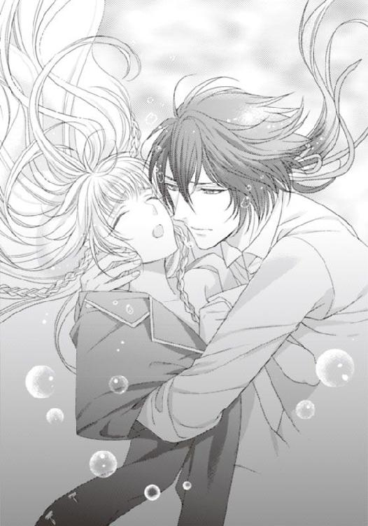
（スイズル......）
ライラは両腕できつく象牙の箱を抱きしめていた手をほぐして、しびれてぎこちない腕を伸ばした。
その身体を優しくつかんで、抱きかかえて、スイズルは上へ、上へとライラを導いてくれたのだ。黒いインクをまき散らしたかのような闇の中、白い光が見えたような気がした。
───遠くで───。
「───ライラが落ちた！ 誰か潜れ！ 助け出せ！ いい！ 俺が行く！ 死んでも行く！」
フェイ・グランの必死の声が、遠くで聞こえた気がした───。
そんなわけは、たぶんないのに。
エピローグ 王子様は二人・欲情の熱は収まらず
「ライラを、この部屋を暖めろ。早く！」
「本当に、いつも命令するのが好きな人ですね」
「黙れよスイズル。おまえのせいだろう、どういうことだ。こんな......ライラをこんな目に遭わすなんて！ それが奴隷か。執事のすることか？」
「───それに関しては、返す言葉がありません」
「当然だ。俺が昔、なんのためにあのアイスイル城から去ったと思っているんだ？ ライラのためだぞ。すべてはライラの身の安全のためだ」
「それはもちろん」
（───なんの......話......だろう。城から去った......アイスイル城から？）
ライラの中で、二人の声が遠い日に一緒に遊んだ少年たちと重なり始める。
ココアの香り。
本の香り。二人のお兄ちゃんが一緒に子供部屋で遊んでいた、遠い日の夢。
二人がとても好きだった。二人がとても愛してくれた。
当時生きていた母の記憶。二人のことをなんて呼んでいた？
『───スイズル様。フェイ様。ライラをよろしく頼みますね』
『はい。もちろんです。ローズマリー様。ライラは一番大事な女性（ひと）です』
『ライラは僕の宝物です。一生そばで守ります』
〝一生、そばでお守りしますよ、お嬢さま〟。
（スイズル......）
「ライラが目を開けたぞ」
フェイ・グランは真っ先に、すぐそこでライラの顔をのぞき込んでくる。
「───う？」
ライラは今どういう状況に置かれているのかわからない。
ただここは海の中ではないし、どこかの居心地のいい部屋の中だ。
「気がついたか？ ライラ」
真っ白な天井。真っ白なアイアンレースのテーブルや螺旋階段。ここはどこだろう。あの図書館ではないし、あの薄暗くて退廃的で封鎖的な、ライラが吊るされていた甘い香りのする部屋でもなかった。
「ここは？」
「俺の部屋だ」
フェイ・グランが凛とした涼やかな声で答えた。
「どうした？ 何か欲しいものはあるか？」
白いリネンのベッドの上に横たわっている。
天井まで届く、大きな窓がある。その外に海原が広がっていて、珍しく青く澄んだ空を白いカモメが群れをなして飛んでいる。
一等室の上等な部屋。
観葉植物が若々しい緑の葉を茂らせている。紅茶の香り。いい香り。でも、紅茶のこんな香りじゃ物足りない。あれが欲しい。
「───欲しいの......」
スイズルが、フェイ・グランの反対側から、顔をのぞき込んでくる。
「あの甘い香り......あれが......欲しいわ......」
「あれは......ダメですよ。お嬢さま。とても強力な媚薬ですから」
「媚薬......ココアの香り......」
「ココア、麝香（じゃこう）、チョウセンアサガオ。その他いろいろ調合されているんです。中毒性、常用性がありますから、もうダメです。いくら必死でも、あれを使うのはいただけません」
スイズルはそういいながら、兄、フェイ・グランを軽く睨む。
「晴れている......のね。いいお天気」
「嵐は一時的なもので、あれから一時間ほどでやんでしまいました。人騒がせな天気です」
ライラは、しばらく窓の青空を見て、そして天井を見て、二人の顔を見て、でも急に大事なことが思考の中にどろどろと溶けだしてくるのを感じて、ベッドから飛び起きた。
「あの、〝黄金の花園〟は？ あれはどこへ？」
ライラの手には、もう握られていない。周囲に目を走らせたが、どこにもない。
「ここはどこ？ あれから、みんなどうなったの？ ここは......ＱＬ３よね？ まだ港に着かないの？ それに踊り子の......みんな。シャルロットやラドル男爵は？」
突然、早朝の雀のように、早口でまくし立てるライラを、二人は一瞬唖然として見つめている。
「ここは、船の中の、俺の部屋の一つ。もう船はとっくに埠頭に着いている。多くの客は、下船した。おまえの仲間の踊り子も。ラドル男爵は、警察に連行された。この俺のことをあれやこれや詮索するのでね。それに、フェイ・グランの部屋を破壊し荒らしまくった、器物損壊、強盗殺人未遂にもなる。スイズルを殺しかけ、ライラを殺しかけたわけだから」
そう。あの嵐の中、スイズルは男爵の命じた男たちに殴られて、海に落とされかけたのだ。
「でもラドル男爵......あの人、どうして突然、盗難がフェイ・グラン様のせいだなんて？ まさか本当に伝書鳩で警察を呼んできたの？ 船をぶつけて急襲して来たのは、あの人のせいなのでしょ？」
怖かった。なんだか何もかもよくわからない。
「嫉妬深い男。フェイ・グランの取り巻きを自称していたものの、フェイ・グランを異常に嫉妬して、失脚させようと狙っていた。だから、今回、フェイ・グランが、実は貴族の宝物を盗み私腹を肥やしていると教えてやった。そうしたら男爵は、絶対にフェイ・グランを蹴り落として、自分が海運業、商業でのし上がるんだと言っていましたよ。だから、『夜、天気が荒れそうだ。ちょうど昨日寄港したところでまた大量に宝物を盗んできたから、宝物庫にしまわれた』そう話したら、警察の関係者を呼び、本当に乗り込んできた。結局証拠が一つも見つからず、しかも自分が盗賊呼ばわりされて怒っていましたよ」
あれは、そういうことだったのだ。
「どうしてスイズルはそんな嘘を吹き込んだの？ フェイ・グラン様が危ないじゃないの」
「金のためだな。金のためもあってこいつはこの船に乗り込んで、王家と新聞社が探している人物の証書を手に入れて、俺もろとも売りつけようとしていたわけだ」
フェイ・グランが、スイズルを睨みつけながら口を曲げる。
「ある人物？」
「二十六、七年前、女王が何人かの愛人と、情を交わし子供ができたんだ。〝処女女王として神がかった力を持つ〟という噂の立った女には、俗物的な子供は邪魔な存在。特に愛人との子供などもってのほか。だから降位させ捨てたんだ。王位も、王族の名も捨てさせて、子犬のように捨てた。それがあの、高額の報奨金をかけられて探されていた、金髪碧眼の人物だ」
「記事の人物？ もしや、あの切り抜きの？ フェイ・グラン様は......じゃあまさか......」
ライラは、思い出したことがあった。
王家の秘密。クロフォード家の秘密ではなく、英国の王家の秘密。捨てられた王子二人がどこにいて暮らしていたかを。
「王子様。どうか王宮へおいでください。第一王子が死を宣告されましたからには、もう王子様方が女王の心の糧。過去のことを忘れて次期王として教育を受けられますよう」
部屋の前にいつしかずらりと王室武官の制服を着た男たちが居並んでいる。
それは、嵐の中で、フェイ・グランを捕らえようとして見えた黒服の男たちだった。
だがフェイ・グランは思いきり不機嫌な顔で、金色の髪をかきむしる。
「───うるさい。本当にうるさい。おまえたち、勝手を言うな。跡継ぎが多くいたときは邪魔者扱いしていたくせに、第一王子が死んだら、すぐまた殺したはずの王子を探し始めるなんて。茶番だな、ちゃんちゃらおかしいぞ」
「〝へそが茶を沸かす〟ですか？ フェイトラス・ミルト・デ・グランバルスさま」
「そう、それだ！ スイズル」
スイズルの茶々を茶々ともとれないほど、フェイ・グランはピリピリとしているらしい。
「王子様。やっと二十五年ぶりに行方不明の王子様を見つけることができたのです。どれだけ探していたか。善意の市民から通報があったのです」
「がせネタだ。報奨金は返してもらえ」
「いえそんな」
「善意の市民は報奨金をもらったんだろ？ 王子を密告したお礼に、英国王室からの莫大な謝礼金を」
フェイ・グランは、なぜかスイズルのことを焼き切れんばかりに強い恨みの視線で睨みつけ、黒く格調高い制服を着た武官たちは、痛いところをつかれたように、黙りこくる。
「善意の市民は計画を立てていたんだよな？ 王子ではないかと思われる男に盗みの容疑をかけ、そして警察を使って、追いつめ。そこにその人物をやりこめようとしていたプライドの高い男爵様をけしかけて事件を起こす。事件をもみ消して欲しければ、王子として生きろと。やだね。普通の貴族の方がどれだけ気が楽か。悪事もいたずらもできる。王子なんて面倒なだけ。しばりだらけ」
「縛るのは好きなくせに、縛られるのは嫌いですか......。笑えますね」
フェイ・グランは、ぼそりと漏らしたスイズルを斬りつけんばかりに睨みつけた。
「自分から身分を......捨てるなんて......そのようなことが本当にできるの？」
「女王が正当な跡継ぎを決定し、その王子を育てたのです。私とフェイ・グランは、十歳ほどで用のない人間として捨てられた。なのに、アイスイル城の優しいマリーローズさまが我々を実の子供同様に育ててくれていたある時、我々が生きていることすらおもしろく思わない厳正王室派が対岸から砲弾を撃ち込んできたのです。女王の愛の子は殺せ！ と。それで一緒に預けられていた他の子供と、マリーローズさまが亡くなった。おじいさまも」
ライラは、二人の顔を見つめた。
「それでなのね......私の記憶が一部分ないのは」
「子供部屋も破損して、そこでお嬢さまは怪我をした。頭を強く打ってそのせいもあって記憶がないのだと思います。フェイ・グランは、自分たちがそこにいてはまたいつ狙われるかわからない、だからアイスイル城を去ることに決めたのです。そのとき子供部屋に残ったものは、フェイ・グランが持ち出しました。ですから船内のあの秘密の拷問部屋には当時の子供部屋のものが多く置かれているのです」
「───拷問部屋、いうな。愛の巣だろ。甘くかぐわしい思い出と王家の気品が詰まった部屋だ」
フェイ・グランは、その勇姿とは少しかけ離れた可愛らしい顔を覗かせ、スイズルをまた睨む。
「ライラ。おまえが、妻となり一生俺のそばにいるなら。俺は自ら、王子としての身分を認めよう。王室に戻ってもいい。どうだ？ 俺と結婚して欲しい」
ライラはとまどった。
「王子様の花嫁になったら、父と城を守るための、祖国を守るためのお金が......必要なだけ援助されるのですよ、お嬢さま」
スイズルは、ライラに強く促してくる。
「結婚してくれ。おまえと俺は......結ばれる運命、身体の相性もいい。もう子供ができたかも知れない、それくらい俺の好きにさせないのなら、王室の人間にはならない」
ライラには、スイズルがなにを仕掛けたのか、そのときようやくすべてわかった。
「結婚の申し込みだ。ライラ」
スイズルは静かにそれを見つめている。
「フェイ・グラン様。どうか、今一度、こちらに来ていただけますか。あなた様の過去と、ご両親のことについて、照合したいことがございますので」
「面倒なことならしたくはない。俺は王位継承など本当は興味はない。遠い昔、捨てられたときに自分の中ではケリをつけた問題だからな」
フェイ・グランは、平身低頭する黒服の男たちに囲まれて、恭しくも強引に向こうの部屋に連れていかれている。
スイズルは、その光景を冷ややかに見送っていた。
でも、何か引っかかる。
（王子様......？ 王子様は......一人だった......？ 違うわよね。だって二人は父親違いの兄弟って）
「ちょっと待って。あの新聞の記事、王子様の情報を寄せたら金一封って、あの記事を見たとき、スイズルは、知ってたわね。あれがフェイ・グランだと知っていたの？ あの記事を私に見せたときには、あなたはもう、王子がフェイ・グランだと知っていたのでしょ？ それで私を船に乗せて、自分も付き添ったのね？ それともあの記事を見せて、もしかして私が、あの頃のことを、そしてフェイ・グランを思い出すと思ったの？」
スイズルは、ほとんど変えない表情を少しシニカルな笑みにして答えた。
「フェイ・グランの豪華客船クルージングのピアニスト募集と踊り子募集の記事。それと。王室の王子探しの記事。それが偶然一緒の一面に載っている新聞があるなど、誰が思いますか？ しかも、偶然にして、実は同じ人物のことを書いている、そんな新聞があると、この私が知って、わざわざ買い求め、そしてそれをお嬢さまに見せたなんて。無理がありますよ」
確かにそういわれれば、そうなのだが、スイズルがこと策略家なのは、今度のことでつくづく実感できた。
どうにも、その二つの記事が、偶然に思えなくてライラはまだ、スイズルの顔をじっと見てしまう。
もしかしたら、そうさせたのがスイズルだろうか。でもそれにはきっと根回しの期間と裏金が必要だっただろう。そこまでするだろうか。したとしても、ライラが、その記事に気づくとはおもわないだろうし、結局今思い出しただけで、あのときは王子を探して報奨金をもらう手段は取らなかった。もし、ライラがピアニストになれず、踊り子はどうしても嫌だからと、王子の情報探しの旅にでも出ていたら、どうするつもりだっただろう。
さっぱりわからない。どこまでが、スイズルの策略なのか。どこからが偶然なのか。
「どうしても、気になりますか？ でもそんなことより、ライラ様に今、将来王になる確率の高い王子の、妻となる座が空けられて、差し出されているのだということをよくお考えください」
「スイズル......」
ライラはスイズルの顔を見つめた。
「私は......フェイ・グランと結婚なんて想像もしていなかったから......」
「お嫌いですか？」
「いえ。むしろ......」
頬を染める。媚薬のせいだということを念頭に置いても、フェイ・グランに抱かれることを悦び、あれだけの淫行にふけっておきながら、嫌いだなんて言えるわけがない。
「では、いいお話では」
「ねえ！ ちょっと待ってちょうだい」
ライラは突然わけのわからない理不尽さを覚えて、両手を広げてスイズルを止めた。
「ねえ、どうして？ なぜそこまでフェイ・グランとの結婚を勧めるの？ あなたフェイ・グランのことをそれほど好きではないでしょう？ 昔も性格が正反対で、それで始終口げんかをしていたじゃない」
「ライラ様。私は腹黒です」
突然、スイズルがそう切り出した。告白といってもいい。
「ええ、おおよそ、そうであろうことはわかってるわ」
「ですが私の一番の望みは、ライラ様の幸せです。あのアイスイル城を守り、お父上を守り、かつてはもっと広大だった、本当のクロフォード家が王として収めてきた土地をそのまま、美しい自然のまま収めることが幼い頃からの望みです。母親の恋人との間にできた不義の子と、一族から命を狙われることも多かった私をあなたのお母様と父上は、かばってくださり我が子同然に世話してくださった。私たちがアイスイル城にいたばかりに攻撃を受け、数人の命が奪われた。ですから、あなたには絶対なる安全な幸せを願います。あの土地の金脈が記されたものが消え失せてしまった今、いくつか用意していた選択肢の中で、次に有効なのはフェイ・グランの妻になることです。フェイ・グランは、今のままでも十分に資産家で、何もかもを所有しています。でも、王子の地位を継承すれば、フェイ・グランの恋人であるライラ様は優遇され、資産的にも生涯不安のない資産が王家から与えられるでしょう。ですからお嬢さまの忠実なる奴隷執事である私は......」
立て板に水といった具合に、よどみなく話すスイズルを、ライラが止めた。
「まって......。ちょっとまって！」
ライラはこめかみを押さえた。過去の断片的な記憶がまたわき上がってくる。
『もうこのお城にはいられないんだ』
思い詰めた少年の緑の瞳。
『どうして？ お母様も死んでしまったんですって。なのにスイズルもフェイもどこかに行ってしまうの？ 死んでしまうの？』
『───そう。僕たちがここにいると、おじさまもライラも危険にさらしてしまう。僕らはとっくに放棄したつもりなのに、抹殺しないと気が済まない恐ろしい奴らがこの世には一杯いるんだ。だから、もう死なないと......』
そうロイヤルブルーの目を怒りと悲しみにたぎらせて、フェイが言った。
『僕は......いつか地位も財産も、この手でひとりで勝ち得て、君にまた会うよ。ライラ』
『一緒にいなくなっちゃうの？ ふたり一緒に私をおいていっちゃうの？ そんなのいや。ずっとずっと一緒にいて。ずっと私のそばにいてよ』
『ダメだよ。ダメなんだ』
『フェイ......！ スイズル！ 行かないでいかないで。死んだりしないで』
あれはいつのことだったか、そのままフェイはどこかに行ったきり二度と戻ってこなかった。そして彼がいなくなったあと、スイズルが残った。一人、戻ってきたのだ。
『僕は......僕はライラのそばにいるよ......ずっとずっと、ライラが一番幸せになれるように、そばで守るよ......』
そのあとだった。父と何かの契約を果たして、スイズルは豪華な服も地位も捨て、ライラのしもべになったのだ。
一年中、黒い服でライラのそばに仕えてくれる契約執事。
今も持つ、立派な懐中時計とチェーンとフォブは、たぶん当時、その身分を記すために持たされていたもの。だから、英国王室の紋章と捨てられた王子の名前が入っていたのだ。
ライラは、ゆっくりとスイズルの顔を見返る。
「あなたはどうして、自分も王子のひとりだと名乗りでないの？ フェイ・グランとは父の違う王子様でしょ？ そりゃあ二男だからフェイ・グランが王位を継ぐ確率は高いけど......」
スイズルは、視線をかすかに落としてほほえむ。
「約束したでしょう。私はあなたの契約奴隷。あなたの幸せのために働く執事」
「でも！ 王子様の姿であるべきだと......私は思うの。それに、もう〝黄金の花園〟は取り返せたの。これがあれば金鉱脈がわかって、もうお金には困らないわ。だって我が領地には神様が分け与えてくださった大地の恵みが......」
だがスイズルは、説得するかのようなライラの言葉の途中で、ふいっと椅子から立ち上がった。そして部屋の向こうのチェストの方から何かを手にして、ライラのもとに戻ってくる。
「実は、これが、その〝黄金の花園〟です......」
手渡された象牙の箱。その箱を開けてみると、ぐっしょりと濡れた状態の古びた書物が入っている。
あの〝黄金の花園〟は海水に濡れ、見るも無惨な姿へと変わっていたのだ。
ライラは震えが走る指先で、その重くなった書物を取り出し、開いてみる。紙はすべて一緒になったように重なり合ってなかなかページを繰ることができない。それでもそっと爪の先でめくるようにして開いたページには、細かなシミのようなもの以外何もない。
文字はすべて溶けて流れてしまっていたのだ。
「あ......これは......」
「ええ、そういうことです。この中に記されていたものはすっかり読めなくなってしまったのです。ですから......私はお嬢さまが王子と結婚することをおすすめします」
「スイズル！ どうして？」
「どうしてとおっしゃいますと？」
「どうして......あなたは私をそんな風に突き放すの？」
「私は突き放してなどおりません。あくまでお嬢さまのおそばに永遠に付き従うつもりですから」
「そうじゃないの！ そうじゃない......」
ライラは自分でもわからない衝撃に突き動かされて、スイズルに飛びついた。
そして黒髪に手を伸ばしてそして彼の淡泊な唇に口づけた。
ただ、唇を合わせるだけの優しいキスではなく、思いの丈をぶつけるような激しいキスだ。唇を割って、ライラは彼の歯を、口腔を激しく舐め回す。
どうしてだか、居ても立ってもいられなかった。
「ライラ......様......」
「しゃべらないで。抵抗しないで」
「ですが......」
「命令よ。命令なんだから、黙って私に犯されなさい」
ライラは頬を染めながら、そういいきって、スイズルの抵抗しようとした手首を押さえつけた。
あふれる唾液を彼の中に注ぎ込みながら、舌を絡めて奥へ奥へと官能の元を探ろうとする。ぬるぬるとした熱い舌を絡めていると、温度の低いスイズルの体温がほんのわずか、上がったような気がする。
「ライラ......さ」
「だまって」
ライラはスイズルのうなじに手を回し、撫でながら、ふと彼の長い黒髪をつかねている皮紐の鋲に手を触れてしまう。
「あ」
「ライラ様。ですから、私に触れては......いけません」
「いいの。あなたがどうして痛みを伴うこれを、わざわざうなじにしているのか、なんとなくわかったから」
王子としての身分を疎まれ、封印したスイズル。
アイスイル城と、両親に恩義を感じて、一人娘に忠誠を誓ってくれたスイズル。
ずっとずっとそばにいて仕えてくれたのに、この客船に乗り込むまで、それほど彼のありがたみを感じてはいなかった。自分の注いで来た愛情と引き替えにすることなく、今後の身の振り方をここまで考えていてくれた彼が、いとおしくてならない。
ライラは、彼の背中に手を回し、何度も何度もキスをしながら背中を愛撫する。
意外とたくましい背中の筋肉を、背骨にそったくぼみを愛撫しながら、ライラはいつしか燃えるような恍惚感を抱いていた。彼の足に足を絡めたくなってくる。
さすがに、そこまでするのは女性としてのたしなみが疑われる、きっとスイズルに怒られる。そう思ってむずむずする足の間をこすり合わせながら、舌で舌を愛撫する。
そんなライラの気持ちを察したのか、スイズルは突然ライラの身体をそのままベッドに押し倒して、足下をまさぐり始めた。
「ライラ......ライラ様......私の最愛の......姫......」
片足を大きく開かせ、唇を淫芯に寄せてくる。
ふくらみを舌で愛撫して、そして割れ目に忍び込ませる。
敏感になっているライラの肉体は、もうそれだけで奥の方から熱い淫液が滴ってしまいそうだ。
「あ、うっ」
舌先が割れ目を激しくなで回し、そして奥の方を刺激しつつ、ふくらみを帯びてくる雌芯をとらえる。唇でその部分をついばむと、先端を激しくなぶるように舌先でふるわせた。
「ああ、あああああ......」
そんな喘ぎしか漏れてこない、それだけでライラの蜜壺からは蜜がとろとろとしたたり落ちてくる。
スイズルの舌技で、尖った雌芯がさらに赤く充血してきて、中にも強い刺激が欲しくて欲しくてたまらなくなっている。
「スイズル......スイズル......欲しいの...欲しい......」
ここにはココアの香りは流れていない。なのに、こんなにも淫乱な声を上げ、雄を求める自分がライラは恥ずかしくて仕方ない。
ぬぷぬぷと濡れてきた蜜口に、さらに彼は長く綺麗な指をまとめて挿入してくる。
「スイ......ズル。あなたは......私のことを好き？ 主人としてでなく、女性としてはどう......なの？」
ライラの肌から少し視線を上げた、スイズルの顔が、かすかにほころぶ。
「スイズル......」
これは、肯定だ。きっとそう。甘い気持ちで愛撫されるライラの上に、もう一つの影がのしかかってきた。
「おいおい。スイズル。おまえは本当に腹黒いな。俺を王室警察に捕まえさせておきながら、自分だけライラとなんて、俺は抹殺すると言ったはずだぞ」
自分も早々に、上着を放り、シャツだけになると下半身をあらわにしてライラの身体を逆さまになって愛撫した。
「前と後ろ、どちらがイイ？」
突然、両足ごとめくり上げられる身体。下にスイズルが入り込んで開脚の上にライラの可愛らしい尻を置く。そしてめくり上げられ、フェイ・グランの方に突き出された淫唇を、彼が唇と舌とで激しく愛撫を始めたのだ。
「あ、あぁっうっ......！」
したたる淫液が二人の唇を濡らし、そそり立つ男根をもしとどに濡らしていく。
「ああ、こんなに濡らして。お嬢さま、私はここまで濡らされては、始末のしようがありませんよ」
スイズルは困惑した言葉を、冷ややかに眉一つ動かさずに口にして、そしてその流れあふれるライラの汚れの蜜を、舌先で一舐め一舐めし始める。
甘く大切なものだというように。すべて飲み込みそして、どこか恍惚としているのだ。
「や......そんな......こと......ス......」
「もっと......出しても......いいですよ」
「ああ、もっともっと濡れればいい。俺の愛姫......いずれは英国王の寵姫よ」
氷のごとく冷えた、張り型のもたらす卑猥の極致を味わわされていたライラは、それからすぐに燃えるような鋼の男根を挿入されて、どれほどの絶叫を上げただろう。
前から挿入されて、後ろから挿入されて、フェイ・グランの膝の上で何度も突かれる。
裂けそうなのに、その痛みより、蜜で濡れた粘膜をこすられて、いく快感。
前方から挿入されたフェイ・グランの巨根と、後方からスイズルの緩急の絶妙につけられた、技巧的な挿入に、舌を投げ出すように、喘ぐ。
二つの竿で、貫かれている間。スイズルはライラの胸をずっと手で柔らかに揉みしだき、そして隠れがちになっていた乳首を激しく屹立させるまでに、愛撫に敏感にさせていく。スイズルの指がほんの少し掠めただけで、そして形のいい爪がわずかに先端をつまみひねっただけで、ライラは嬌声を上げて身を捩った。
道徳的では決してない。乙女の体内を、乙女の性の塊を、中で二人に激しくこすり合わされて感じる、強烈な背徳感。
（いけないことなのに、どうして......こんなに感じているの？）
スイズルの挿入は細やかで、控えめにされるせいで、ライラの方から腰を激しく揺らす。
尻を彼の張りつめた武器の上に載せられて、自重でゆるゆると深く底まで沈み込まされる、マゾヒズムを味わわされる性愛。
強引なほど、彼の俺さまペースで進められ、感じるまで、絶対引くことをせず、激しい愛撫と言葉責めで犯してくるフェイ・グラン。二人のまったく違うタイプの愛撫と挿入にライラは心身から燃え尽きていた。
もう、どんなに中を突かれまくっても、喉が渇いて嬌声も出ない。眉根を寄せて、苦しげに、でも感じていると誰もに悟られてしまうほど官能におぼれた恍惚感で、髪を振り、唇を半開きにして濡らすライラは、まるで二人の王子に捕らえられ、愛され続ける性の愛姫だった。
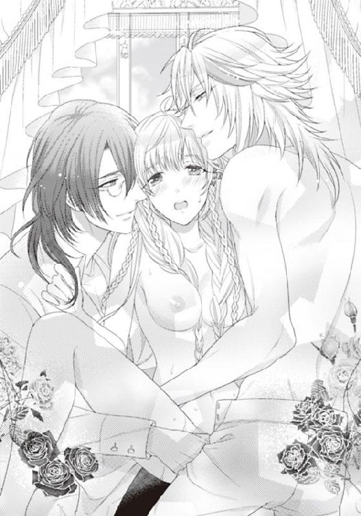
『───ねえ、ライラ。俺たちのお姫さま』
『僕とフェイ。どちらを選ぶ？ ───』
あとがき
こんにちは。
すっかり冬の寒さになって参りました。
九冊目のティアラ文庫〝豪華客船の監禁愛～執事と王子と囚われ姫～〟です。
よろしくお願いいたします。
執事、執事、執事。羊。とっても尽くす奴隷執事で契約執事のスイズルさんと、超豪華客船のオーナーの俺さまフェイ・グランとライラ姫の織りなす監禁ラブ３ファンタジー。
豪華客船なのに、監禁されちゃって、愛されちゃって、です。監禁されるところというのは「たぶん狭くて、それほど豪華じゃないよね」というイメージがつき纏うのはなぜでしょう。
すごく広いところでぽつんと監禁されるのも、もの悲しいから？
ティアラ文庫だから、監禁されてそのまま椅子に縛り付け状態、ということもきっとないない、ですし。四〇〇〇〇人収容の講堂の真ん中にぽつん、と。よりは体育倉庫の用具室の片隅にぽつん、の方が絵になる気もいたします（いやだけど）。
寒い季節は暖かな〝着る毛布〟にくるまって、読書がいいですね。（お金かからなくて、エコですし）。読書は是非、ティアラ文庫をお薦めします。なんだかティアラ文庫は、他の文庫より暖かくなる気がします。暖が取れます（なぜ？）。
とはいえ家族団らんに置き忘れて、あとで気まずくなっても苦情は受け付けませんので、自己責任でお願いしますね。
そして、辛かったいろいろ壊れた季節が終了。
きっと終了。今まで文章を打つＰＣは二台ほど移り変わったのですが、その二台ともメーカーが一緒。そして製造年月日もそれほど離れていないということで、そんなに使い勝手の変化を感じなかったのです。ががががが、初めてのメーカーのＰＣで文字を打つのはとっても使いづらいです。まさかキーボードのキー配列が違うとは思いもしませんでした。全世界共通がいいです。せめて日本国内ではそうして欲しい。そしてすごく重いキーボードもやめて欲しいです。どれだけ筋肉痛なんでしょう。腕が上がりません。
ということで、いつもとタッチが違う感じのあとがきとなりました。
本文、お楽しみいただけましたら、とても嬉しいです。イラストをつけていただいた潤宮（うるみや）るかさま。本当に本当に素敵なイラストをありがとうございます。感謝しております。
そしていつもお世話になっております。編集さま、校正の方々、デザイナーさま、営業の方々、本当に感謝の気持ちが絶えません。この感謝の気持ちは永遠に続きます。
もちろん、お手に取っていただけた読者の方々、未来永劫感謝しますので、またご縁がありましたらよろしくお願いいたします。
豪華客船の監禁愛 執事と王子と囚われ姫【イラスト付】
2012/1/1 電子版発行
東京都千代田区飯田橋３－３－１
著者 斎王ことり
挿絵 潤宮るか
発行 プランタン出版
本データには購買者を特定できる個別のシリアル番号が刻印されています。
複製・頒布・転売等、著作権を侵害する行為は法律で禁じられており、
違反した場合は刑事罰および民事罰を招来することになります。
（c)2012 KOTORI SAIOU,RUKA URUMIYA